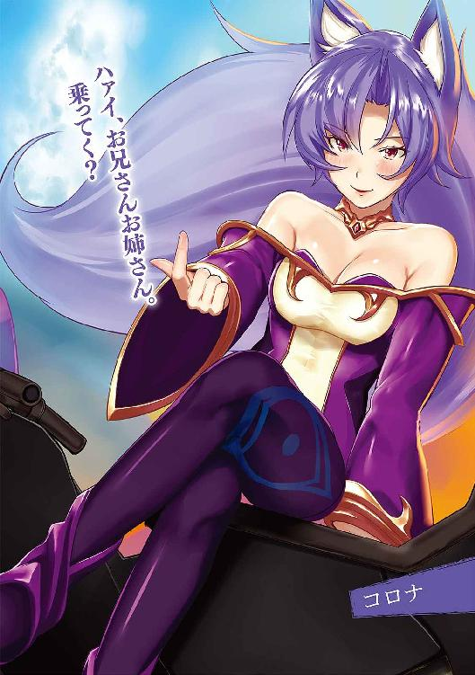
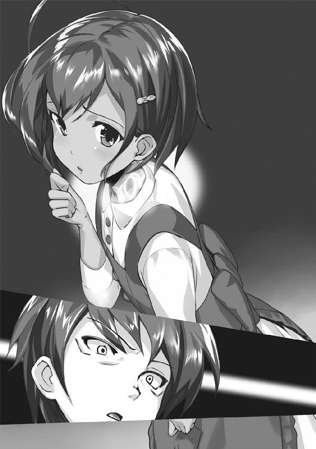

| １００％の黒衣配達人 (角川スニーカー文庫) | |
| 田口 仙年堂 | |
| (2014) | |

100％の黒衣配達人
田口仙年堂

角川スニーカー文庫
本作品の全部または一部を無断で複製、転載、配信、送信したり、ホームページ上に転載することを禁止します。また、本作品の内容を無断で改変、改ざん等を行うことも禁止します。
本作品購入時にご承諾いただいた規約により、有償・無償にかかわらず本作品を第三者に譲渡することはできません。
本作品を示すサムネイルなどのイメージ画像は、再ダウンロード時に予告なく変更される場合があります。
本作品は縦書きでレイアウトされています。
また、ご覧になるリーディングシステムにより、表示の差が認められることがあります。

「まずはこれにサインをしてもらう」
渡されたペンと紙を手にした瞬間、依頼者はその魔術の刻印強制力を理解した。
どちらにも強い言葉の強制がかけられている。それは虚偽の申告を防ぐためのものだろうが、国家に関する機密事項を扱う書類にもここまで強い刻印は施されないだろう。それほど強力な魔術だというのに、コイン状ほどの小さな刻印。
この刻印が意味する魔術は──
「ああ、心配する必要はない」
ペンと紙を渡した男はイスから立ち上がり、そっと肩を叩く。依頼者はそれだけでスーツの埃が舞うほど驚いてしまい、慌てて取り繕う。
「これはただの依頼書だ。正確に、ひとつの間違いもないように書いて欲しいから魔術をかけさせてもらった。なにしろ商売上、書類のミスが一番怖いからな」
彼の言葉には頷かざるを得ない。
なにしろ契約が契約だ。ミスをした時に、責任の所在を問われるのは自分なのだ。
彼は狭い事務所をせわしなく歩く。まるで全身をなめ回すかのように依頼者を観察しているようだ。隠すほどの身分ではないが、大手を振ってここまで来るような用事でもない。それどころか──
「余計な事は気にするな」
いちいち思考を遮るかのように話す男。
「俺の詮索をするヒマがあるのなら、その依頼書をとっとと書くんだ。あんたはそのためにここまで来たんだろう」
そして彼の言葉は常に正論だ。
「俺は噂通りの人間だし、仕事内容にも変わりはない。あんたより身分が上の人間の依頼も受けた事があるし、あんたよりも厄介な用件を受けた事もある。どのみちここに来た時点で同じ穴の狢だ。叩けば埃が出る輩に決まっている」
「......その、通りだっ」
依頼書を書き終えると、ようやく依頼者は言葉を出せた。
まるで魔術にでもかけられたかのように重苦しい時間だった。ペンと紙によって強制されていたのは真実を語る事だけだったが、それ以上に目の前にいる人物が気になって集中できなかったのだ。
ジンタ・スティード──
彼が真実だという噂が本当なら、まだ若い男だ。黒髪に東洋系の顔立ち。黒い作業着にネクタイを締めているが、労働者には見えない。むしろ文官か魔術師のように底が見えない表情だ。
その作業着の中にはいくつもの魔導具が仕込まれているだろう。それは感じなくてもある程度の立ち方で分かる。
「これで、いいのか」
書いた依頼書を手渡すと、ジンタはそれをさっと眺めて、
「ああ」
簡潔に答えた。
「あんたが書いたこの住所──ブリオルデ王国グルナール領、ワムサット町四番街のユー・ハリエル宛てに、三日後の正午にブツを届ける。これで間違いないな？」
「......そうだ。間違いない」
ジンタは頷くと、依頼書の続きを読む。
「品物は何だ？」
「......今、用意する」
そこで扉が開いた。
目配せしたわけでも、声をかけたわけでもない。ちょっとした合図を送っただけだ。それに呼応して扉が開く、初歩的な魔術刻印である。
依頼書を書いた男は、扉から現れた荷物を確認する。
ジンタがどんな反応をするかと想像したが、予想通り無表情だった。おそらく彼は過去に似たような荷物を運んだ事があるのだろう。
「......ほう」
ジンタの反応はそれだけだった。
開いた扉から現れたのは、少女。
表情に乏しいが、足が震えているのが分かる。
「断っておくが、俺は奴隷商人の片棒を担ぐ気はない。奴隷でなくとも、ただの移動に俺を使うくらいなら、鉄道を利用した方が早いし安いぜ」
「分かっている。これは君にしか頼めない案件だ」
ジンタはそれを聞くと、少女を上から下まで眺めて考える。
「距離と荷物から算出して、ざっと七千万オームって所だ」
「承知した」
ブリオルデ王国の経済学者が算出した報告書によると、一般的な兵隊が生涯で稼ぐ給料が一億五千万オームと言われている。
つまりこの少女を運ぶ事は、一般人の人生の半分の価値があるのだ。
その金額について異論はない。
むしろ安すぎるくらいだと思っている。
「オーケー」
そして、ジンタは頷く。
「この依頼、引き受けよう」
「......っ!?」
彼は全て理解していない上で頷いたのだ。
こちらが指定の金額を払うと言っただけで。
──少女の意味も目的も知らずに。
「──何を焦る事がある？ 依頼と荷物と契約金、それからもうひとつ──それが揃えば契約は成立だ。断る理由はない」
「あなたは......！」
裏の世界でその名を知らぬ者はいない。
それはひとえに、その仕事に関する評判のみ。
どんな依頼だろうと彼に依頼すれば、確実に成功する。
「その女──絶対に届けてやるよ」
成功率一〇〇％の運び屋。
何かを運ぶ事にかけては、世界一の腕前を持つ男。
黒の運び屋、黒衣の配達人など、様々な呼称のついた凄腕の仕事人。
それが彼、ジンタ・スティードなのだ。
詳しい事は彼女に訊け、と言い置いて依頼人の男は帰っていった。
高級なスーツを着ているが、魔術師特有のローブの裾を気にする歩き方で大方の素性は分かった。しかし、それもジンタにはあまり興味がない事だった。
むしろジンタの目の前にいる「荷物」の方がよっぽど面白い。
無表情を装っているが、明らかにジンタを警戒している。その上で自分が置かれた状況を確認しているのだろう。
しかし彼女がいくら探ったところで、得られる情報は少ないだろう。
ここはあくまでジンタが依頼を受けるための仕事場であり、存在するものは自分と来客用のイスと机、それから書類を入れるキャビネットしかない。
窓から見えるものは何の変哲もないカルマタールの街の風景のみ。馬車の音がやかましく響く、安普請の建物が整然と並んでいる。ここもそのひとつだ。
「さて」
ジンタが呟くと、少女はわずかに身体を震わせた。
ゆっくりと荷を観察する。
手入れされていないぼさぼさの黒髪。やや浅黒い肌。ジンタと同じ、東洋系の顔立ち。身長は低いが、年齢を考えれば適正だろう。
服装も似合っていない水色のワンピース。おそらく、この日のためによそ行きの服を用意したのだろう。彼女本人の持ち物ではないはずだ。
「あのオッサンに言われた通り、お前に質問をするぞ」
「......はい」
震える声。
怯えているが、ジンタの知った事ではない。
「名前は」
「......ハヅキ」
「姓は」
「ありません」
「年齢は」
「......十五」
「今までに疫病にかかった事は」
「ないです......」
「よし」
ジンタは軽く手を振る。
首をコキコキと鳴らし、ハヅキと名乗った少女から少しだけ離れて全身を舐めるように見つめる。
「......あの」
「黙ってろ。あと、動くな」
ジンタの冷たい言葉に、ハヅキはおとなしくなる。もとより静かだったが、ジンタの命令で氷のように動きを止めた。
それも十秒ほどで終わる。
「よし、いいぞ」
「......あの、何がいいんですか？」
「身長は一五二センチ、体重は五〇キロ、バストはＤ──腰回りは五八、ふむ、尻は大きめだな。足のサイズは二二、ルーツは東方のミヤヅルあたりか。疫病はなさそうだ。それから出産経験もなし、生娘だな。武術の経験もない」
すらすらと情報を並べるジンタに、今度こそハヅキは目を丸くした。次に真っ赤になって照れる。身体を隅々まで観察される事に慣れている女など、娼婦か王族くらいだ。
「暴れる心配もないな。これなら梱包する必要もなさそうだ」
「すごい......ですね」
思わず口にするハヅキに、ジンタはこう返す。
「この程度は普通の運び屋でもできる。荷物の状態を把握できなければ、きちんと運べないからな」
「私、そんなに慎重に運ばれるんですか」
「当たり前だろう」
強い口調でジンタは答える。
「お前はお客さんから預かった大事な荷物だ。預かった時と同じ状態で、傷ひとつなくお客さんに届けるのが俺の仕事だ」
ジンタの声はよく通り、ハヅキの胸にスッと入る。
それだけこの言葉に自信を持っているのだ。
成功率一〇〇％という噂は噓ではない。彼は今まで依頼された仕事を全て完璧にこなした。それによって信用を築き、今までやってこられた。

荷物であるハヅキにそんな事は分からないだろうが、この成功率はジンタの誇りであり、自信の源なのだ。
「............」
ハヅキはそんなジンタをずっと見つめている。
「......他に気をつけるべき点があれば、今のうちに言っておけ。対処する」
「あ、いえ、そういうわけじゃ」
慌てて手を振るハヅキ。
「ただ、その──」
彼女は身体の前で手を組み、俯いてこう言った。
「今まで、大事にされた事なんてなかったから」
ジンタたちが事務所を構えているカルマタールの街とは、ブリオルデ王国の三大都市のひとつである。
王国の中央に首都が存在し、その周囲には商業の要になる街が三つある。それぞれ正三角形の位置にあり、カルマタールは三角形の左側の頂点にある場所だ。さらに西へ行くと海があり、漁業などの交易所として発展を遂げた歴史がある。
その街の住宅街の、何の変哲もない一軒家がジンタの事務所だ。両隣には街の役所に勤める管理官と、魔術刻印を使った建築物専門の大工が住んでいる。どちらもカタギの人間だ。
事務所はここだけではなく、他に何軒も所有している。状況によって事務所を使い分けるのがジンタのやり方である。全ての事務所を把握している人間はジンタ以外に存在しない。
その数多くある事務所のうち、ジンタが現在滞在している場所を知っている人間は少ない。そんなわずかなツテを頼って、わざわざ依頼をしにくる物好きがいる。その物好きが運んで欲しいものは、大概が危険物だ。
つまりジンタの目の前でずっと惚けたように座っている少女も例外ではない。
というか、彼女のうなじを見ればだいたい理解できる。
「とりあえず、これでも食え」
すっかり日も落ち、周囲の住宅の煙突から煙が上り始める。外では数十メートル離れた場所にある酒場から喧噪が聞こえてくる。
そんな夜は、ジンタが提供するスープから始まった。
「......？」
テーブルに置かれたスープを凝視するハヅキ。
「どうした？ いいんだぞ、食べて」
スープと言っても、中には大量の野菜や肉が詰め込まれている。むしろスープというよりごった煮である。
「......いいんですか？」
「いいに決まってるだろ。さっきも言ったが、俺はお前を安全に運ぶ依頼を受けた。体調を万全に保つのも仕事のうちだ」
実際、人間の管理の方がまだマシだ。
特殊なエサが必要なモンスターだったり、定期的に水をやらないといけない植物だったりを運ぶ時は、もっと繊細な管理が必要になる。おとなしい少女の体調管理など簡単すぎて涙が出るくらいだ。
「い、いただきます」
ハヅキは一礼して、スプーンを手に取った。
そして野菜を一口食べると、目の色が変わる。
「......お、おいしい」
「そうか」
まずく作ったつもりはないから、当然の反応と言える。
「こ、これ、本当においしいです。私が今まで食べたどんなものより」
「仕事上、料理も覚える必要があったからな」
「どうして、料理を......？」
「運ぶためだ」
ジンタの勉強は、全てそこに繫がる。
「作りたての料理を、クランチェットまで運んで欲しいという依頼を受けた事がある。それも作りたての状態を維持したままだ」
「クランチェットって、隣の国ですよね......？ 今、戦争を仕掛けてきてるって」
「ああ。その依頼を完遂するために、独学で料理を学んだ。どうすれば作りたての状態のまま一〇〇〇キロ以上の距離を走れるか探るためにな」
「じゃあ、料理以外も......？」
「荷物の事を知らないと、その荷物を扱えないからな」
「すごい......」
感心するハヅキだが、目下の所、彼女の興味は目の前のスープから離れていない。よほど空腹だったのか、動物のような勢いでボウルの中身を減らしていく。
彼女の所作を見ると、あまり上等な教育は受けていないようだ。テーブルマナーも知らないし、料理のメニューについて文句を言ったりしない。むしろジンタにとっては、その方がやりやすい。
そんなジンタの視線に気づいたのか、ハヅキが目を伏せる。
「......あ、あの、私、すみません、私だけがっついちゃって」
口の周りを汚したまま、ハヅキが謝る。
「気にするな。喜んでもらえた方が嬉しい」
「............」
「なんだ？ まだ何かあるのか」
「い、いえ、すみません」
「何度も言わせるな。思った事があったら口に出して言え。荷物の管理も契約金に入ってるんだぞ」
「はい、すみません」
スプーンをテーブルに置き、ハヅキはジンタを見る。
明らかに「これを言ったら怒られるかもしれない」という子供のような怯えを見せつつ、ジンタの言葉に逆らえなかったのか、意を決してハヅキが話し始めた。
「......あの、ジンタさんって、もっと怖い人かと思ってました」
「............」
今度はジンタが黙る番だった。
同じような事を言われたのは、これで何度目だろう。
確かにジンタは目つきが悪く、口調も上品とは言えない。その自覚はある。
「別に意図的に凄んでいるつもりはないんだが、なぜ俺を見た人間は逃げるんだろうか」
自問するが、答えは出ない。
「ハヅキはどう思ったんだ？」
そこで今度はジンタの方から質問してみる。
「世界一の運び屋だと聞いたから、もっと闇の世界に生きる殺し屋のような人を想像していたんですけど......」
「俺は殺し屋でもチンピラでもない。相手に凄みをきかせる必要はない」
あくまでジンタは運び屋のはずだった。
それなのにハヅキのみならず、依頼者からも殺人者のような目で見られる事が多々ある。むしろ殺し屋なのは大概が依頼人の方であって、彼らが武器だの死体だのの運送を頼むから変な噂が立つのだ。
「いいかハヅキ。俺はただの配送業だ」
「ただの、配送業......？」
オウム返しに質問するハヅキ。
「そうだ。『黒の運び屋』なんて大層な名で呼ばれているが、仕事内容はそのへんにいる荷運びの仕事と変わらない。俺の仕事は荷物をあちらからこちらへ流すだけの、誰にでもできる仕事だ」
「そんな事ないです。だって──」
「金さえもらえば郵便配達もやるし、牛乳配達だってやる。配送業として当然だ。だから恐れる事はない。俺は物騒な人間じゃないんだ」
「......はい」
無論、これが詭弁である事はジンタもハヅキも分かっている。
ただ噓は言っていない。
ジンタの仕事はあくまで配送業であり、荷物を届ける事だ。
ただしそこに「超一流の」という肩書きがつく。さらに「世界一の」と付け加えてもいいだろう。
どんな職業だろうと、トップランクの人間が住む世界は違う。傭兵だろうがコックだろうが配送業だろうが、他の凡百の仕事人とは違う仕事を受ける事になる。
ジンタの場合、郵便配達なら国家規模の密書のやり取りを受け持つだろうし、雌ドラゴンのミルクを届ける依頼を受けた事もある。
とはいえ、本質は荷物を届ける仕事だ。そのための技術は完璧にマスターしている。全ての配送業の頂点に立つ者として、当然の技だ。
しかし、顧客に気に入られる技術だけはどうしても手に入れられなかった。
「何がいけないんだ、クソッ」
毒づくジンタだが、どんどん顔つきが悪くなっている事に本人は気がついていない。しかしそんなジンタを眺めているハヅキの表情は徐々に柔らかくなっていく。
「でも──」
冷めない内にスープを飲みながら、彼女はこう言った。
「どんな依頼でも断らず、運ぶために料理を覚えたり、人の体調を気にしたり、ジンタさんはすごく真面目な運び屋さんだって思いました」
「......フォローはありがたいが、なぜか悔しさの方が勝る」
最初にここへ連れてこられた時よりも、ずっとはっきりと喋るようになったハヅキ。普通の依頼人は怖くて近づかないほどなのに、彼女は別だった。
ハヅキの気持ちはありがたいが、それも三日の付き合いだ。
彼女を指定の場所まで届ければ、もう関係がない。
「まぁいい。金さえもらえば、俺は完璧に仕事をする。安心していいぞ」
「お金、ですか」
「そうだ。俺は金を稼ぐためにこの仕事をしている。金がないとメシも食えないからな」
世界一の運び屋と名乗るだけあって、ジンタの要求する料金は法外だ。
しかし金は絶対的な指標であり、そのまま仕事の難易度を意味する。今回の依頼は七千万オームの価値があると踏んだから引き受けた。
「あの、ところでジンタさんは食べないんですか？」
「ああ、そうだな」
テーブルに用意したのはハヅキの食事だけだ。
彼女に落ち着いてもらうために先に出したのだが、もちろんジンタも食べるつもりだ。彼は隣の部屋からスープボウルを持ってきたのだが、すでに冷めていた。
「温めるか」
キッチンから持ってきた魔紋が刻まれたスタンプを取り出し、ボウルに描かれた模様に触れる。するとスタンプとボウルの紋様が合わさり、ひとつの形を作る。するとその紋様が赤い輝きを放った。
紋様の輝きはボウル全体に広がり、そして消える。
次の瞬間、スープが温かそうな湯気を立ち上らせた。湯気に乗って美味しそうな匂いが鼻に届いた。
どこの家庭でも使っている「魔術」だ。
太古の昔から伝わる不思議な図形。
それらは「ルーン」と呼ばれ、紋様によって様々な効果を生み出す。
それまでルーンを描けるのは一握りの魔術師だけだったのだが、発達した刻印技術によって細かい紋様でも正確に刻む事ができるようになったおかげで、人類の魔術文明は著しく発展した。
ただ、それでもルーンの全容は解明されていないので、魔術師の仕事がなくなったわけではない。今日も魔術師は新しい刻印を生み出そうと日々研究を続けているのだ。
「ジンタさんも魔術師なんですか？」
「いや、魔術の知識はあるが、新しい刻印を生み出せるほどじゃない」
ものを温める程度の魔術なら、誰でも使える。
あらかじめ用意された刻印を合わせて図形を作るだけだ。幼児でも老人でも使える一般的な技だ。
一般人と魔術師の違いは、その知識と技術の差だ。
剣を持てる者が全員剣士を名乗っていいわけではないように、魔術師は魔術の仕組みを理解し、新しい魔術を作ったり、既存の魔術の応用を考えて実行する者だ。
魔術を開発し、運用方法を考える職業。それが魔術師である。
「せいぜい友人の魔術師が作った変な刻印の実験台になるくらいだ。俺が魔術師を名乗るには、技術も知識も足りないさ」
イスに座り、スープの中の野菜を一口食べるジンタ。ボウルが予想以上に熱されたせいで、口の中を火傷してしまった。慌ててスプーンを置くと、咳払いをする。
「俺は運び屋であって、それ以上でも以下でもない。分かったか？」
「はい」
ハヅキは少しだけ微笑む。
「どのみち、魔術師だったらお前が気づくだろうに」
「え？」
「お前も魔術師だろ？」
「......どうして、分かるんですか？」
「依頼書に書いてあった」
ジンタが見せたのは、ハヅキを連れてきた依頼人が書いた紙。
そこには「ブリオルデ国立魔術研究所」という送り主の住所が書いてあった。噓をつけない魔術がかけられているため、ジンタには依頼主の最低限の情報が分かる。
「これを間違えられると、色々とトラブルを招くんだ。依頼主がその場しのぎの偽名を使ったりすると、届け先で『そんな人は知りません』って言われたりするしな」
「なるほど......」
「魔術研究所と言えば、国の研究機関だ。そこに所属している奴が人間の運搬を頼んだのだとしたら、魔術師か、あるいは魔術に関係のある人間に限られるだろう」
ハヅキは自分の襟元を押さえるが、もう遅い。
「お前のその身体も、そこで描かれたんだな」
ジンタが自分のうなじのあたりに触れる。
ハヅキのそこには、魔術刻印が描かれているのだ。首から下、おそらく背中全体に広がっているに違いない。
「刻印人間か」
「............」
ハヅキは押し黙ったままだ。
人間に魔術刻印をする理由は、いくつかある。
魔術は刻印された物体から魔力を吸い上げて発動する。石に刻印すれば石に含有されている魔力を消費する。
自然物に含有される魔力は基本的に少ない。魔力というものは「生命のエネルギー」に関係するものだという研究結果がある。しかし魔力含有量が多い鉱石や植物もあるので、いまだ調査が続けられている。
そのため生物に刻印する場合、強力で安定した魔力を使えるのだが、消耗しすぎれば体調に影響が出るし、枯渇すれば死ぬ。人間に刻印した場合、休めば魔力が回復するという利点もあるので、ほぼ無尽蔵の魔力が約束される。
しかも正確には、ハヅキの刻印は彫られている。
ただの塗料で図形を描くよりも効果は絶大だが、一生消えない。
例えば医療用など、生きていくために絶対に必要な魔術の場合は彫る事もあるが、それ以外はあまりメリットがあるやり方とは言えない。取り返しがつかないのだから。
「そ、その、私、生まれつき魔力が強くて、研究所の人に働かないかって誘われて......魔術とか、あまり得意じゃないんですけど」
「何の刻印か、俺に言えるか？」
「......すみません」
「魔術のスイッチは何だ？」
基本的な魔術の使い方は、完成された魔術刻印を分割する。
切り分けたアップルパイのように、刻印の断片をひとつだけ取り除き、使う時だけそのピースをはめ込むのだ。中にはピースによって刻印の図柄が変わり、魔術そのものも変化するものもある。
そういう「スイッチ式」が基本で、人体に刻印を描く場合はほとんどがそのケースなのだが、ハヅキの身体に断片になりそうな部分はなかった。
「それも言えないんです。規約で喋っちゃいけないって言われて」
どうやら彼女は言葉を選べない性格のようだ。この時点で喋ってはいけない魔術であると告白している事に気づいているだろうか。
新しい魔術刻印は秘匿される事が多い。外部に漏らしたら盗まれる可能性があるからだ。ジンタが顧客の個人情報を漏らすようなもので、信用問題にもなる。
「ま、言えないなら別に構わない。俺の仕事はお前を連れて行くだけだ。暴発して他の荷物に影響が出なければ問題ない」
「............」
空になったスープボウルにスプーンを落とし、ハヅキは無言で礼をした。
口では構わないと言ったが、実際はかなり警戒する必要がある。
成功率一〇〇％の運び屋に、七千万オームを支払ってでも運んで欲しい刻印人間が普通なわけがない。
これから起きるであろう事態を何百種類も想像しつつ、ジンタは残ったスープを飲み始めるのだった。
※
その夜は事務所で寝る事になった。
ハヅキは与えられたベッドで毛布にくるまって、静かな室内で目を閉じる。
時間よ早く過ぎろ、と心の中で念じても、なかなか願いは叶わない。
眠れない事は今まで何度もあった。
普段は研究所の魔術師の実験に付き合わされて、ヘトヘトになって寝室に戻る。日によっては朝までかかる事もあるし、夜中に起こされる時も多々あった。
だからこそ、与えられた静寂に気後れしてしまう。
──これも、仕事なんだから。
そう考えたいのだが、肝心の仕事内容をハヅキは知らない。
三日後に送られる場所がどこなのか、そこで何をするのかまったく聞かされていない。ジンタは興味がなさそうだったが、もし尋ねられたらどう答えるべきだったのか。
自分の魔術を、誰がどのように使うのか──
それを想像しただけで怖くなる。
『..................！ ......？ ......！』
隣の部屋でジンタが誰かと喋っているようだ。
こんな夜中に、誰だろう。
そもそも事務所のドアが開いた音はしなかった。とすると、事務所に最初から誰かがいたのだろうか。しかしそんな気配も物音もなかった。
もしかしたら──
「独り言かな？」
そういう癖を持つ魔術師は多い。
ジンタも世界一の運び屋と名乗るくらいだから、変な趣味のひとつくらいあっても不思議ではない。
そんなとりとめもない事を考えていると、ハヅキの瞼が重くなる。
不思議な事に、ジンタの顔を思い浮かべていると他の嫌な事を忘れられそうな気がするのだ。
「おいハヅキ。起きてるか？」
不意に、寝室のドアがノックされた。
「は、はい？」
「これを忘れていた」
寝室に入ってきたジンタは、ベッドの上に何かを投げる。
キャミソールのような薄手の下着だった。
いや、下着にしては厚い。かといって上着ではない。
「明日はこれを着けていろ」
暗い中、手でそれに触れるとサラサラした生地の上に何かが描かれているのが分かる。これは魔術刻印だ。その刺繡の分だけ厚く感じたのだ。
「多少の打撃や斬撃から身を守ってくれる」
「えっ!?」
つまり、多少の打撃や斬撃に晒される可能性があるという事か。
「どこで誰に襲われるか分からない。用心しろ」
「どこで誰に襲われるんでしょうか......？」
「どこでもだ。常に身構えていろ」
そっけない態度で、ジンタは扉を閉めてしまった。
世界最高の運び屋と名乗るからには、様々な危険と隣り合わせなのは分かる。しかしハヅキまでそれに巻き込まれるとは。
ジンタの顔をもう一度思い浮かべてみるが、今度は恐怖しか出てこなかった。
翌朝、ハヅキが目を覚ますと、ジンタに連れていかれた。
どこへ行くのか尋ねる前に、とうとう街から出てしまった。
防御用の魔術刻印が描かれた高い防壁の外に出ると、いきなり街道が延びている。その向こうには広大な畑が見えるだけだ。
その街道を、ジンタとハヅキは走っている。
ブリオルデ王国の三大都市は三角形のような配置をしている。
おおまかには北、西、東の三つに分かれており、それぞれに大きな都市がある。それぞれの都市をつなぐ街道は、天空から見れば三角形を描くようになっている。
昨日は西のカルマタールの事務所に滞在した。ブリオルデの西側は海に面しているため、漁村が多い。国民も西といえば海という認識がある。
その海の西を司るカルマタールから、現在は東へ続く街道を進んでいた。
海の都市から一転して、草原の都市クォンティスへと続く道だ。ちなみに北側は山岳地帯なので、山と海と草原で分かれている形になっているのだ。
早馬で進めば、およそ一日で辿り着く。ゆっくりと馬車で進んだならば、三日はかかるだろう。大きな荷物を積めば、さらにその倍はかかる。
そしてジンタたちが乗っているのは、馬ではない。
馬のような、何かだ。
機械である事はハヅキにも分かる。
車輪が二つ、縦に並んでいる。その車輪の上に駆動系の機械、そして座るためのシート。前方には手綱のように握るレバーがあり、そのレバーをひねる事で操作をしているようだ。そのくらいの仕組みはハヅキにも分かった。
さらに、この機械は馬よりずっと速い。
この分ならば半日あればクォンティスに辿り着くのではなかろうか。
「あ、あのっ、ジンタさん」
ハヅキは前に座っているジンタを呼ぶ。速度のせいで大きな声を出さないと伝わらないようだ。
「なんだ」
振り返らないジンタに、彼女は素直に尋ねた。
「この乗り物、何ですか？ 魔導具の一種ですか？」
「まぁな」
魔導具とは、魔術刻印によって稼働する道具の総称だ。
魔力という燃料を用いて魔術を発動させ、機構を動かすもの。
有名なところでは、銃がある。
あれはトリガーの部品に施された刻印によって、火の魔術を発動させる。その火が筒の中で爆発を起こし、弾丸を発射する仕組みだ。原始的な仕組みだが、近年は銃そのものの仕組みと、火の魔術の効率化が進み、より強力な銃が増えている。
しかしこの乗り物は、そんな単純な仕組みではない。
機械のあちこちに刻印が施されているのだが、それがどう嚙み合って車輪を動かしているのか、魔術研究所で働いていたハヅキでも分からない。
「仕組みについては、俺もよく分からん」
頼りにしていたジンタですら、そんな事を言う。
「車輪が大地の魔力を吸い上げて、その魔力を使って車輪を回転させているらしい。後は......なんて言ったかな。エンジンとかいう機械が重要なんだと、これを作った奴が言っていた」
「そのご友人、魔術師なんですか？」
「友人かどうかは別にして、魔術もやっている芸術家だな」
もしもジンタの言葉が本当だとしたら、その友人は歴史に名が残るほどの魔術師である。そしてハヅキはその存在を知らない。
おそらくジンタのように、闇の世界で生きる魔術師なのだろう。犯罪に手を染めているからこそ、優れた力も世に出せない。
魔術研究所の魔術師たちは、そういう世界を知っているのだろうか。
少なくとも、ハヅキは知りたいと思った。
だが──そんな資格は、自分にはない。
ハヅキはジンタの腰にしがみつき、目を伏せる。
「そうだ。しっかりとくっついていろ。〝アリアンロッド〟から振り落とされないようにな」
「銀の車輪？」
「この乗り物の名前だ。その魔術師がそう呼んでいた。そいつが読んでいた〝魔書〟とか言うものに登場する異世界の乗り物だそうだ」
「......異世界、ですか」
意味は分からないが、アリアンロッドという名前はなんとなくカッコイイ気がする。
ジンタの言うとおり、もう少しだけくっつこうと身体を寄せる。
「......？」
すると、彼の服が動いた。
「!?」
ジンタの脇腹の部分が急にもっこりして、もぞもぞする。
「えっ、えっ？」
その膨らみはジンタの腰から背中に移り、そして後ろ襟から姿を現した。
「ごめんね、ビックリさせたかしら？」
どこからともなく聞こえてくる、女性の声。
その声を発しているのは、アリアンロッドとやらを操縦しているジンタの背中に乗っていた。
小さな動物だ。齧歯類なのは分かるが、リスともネズミとも違う。大きな尻尾も含めて、全身の体毛が不思議な色をしている。
手のひらに乗るくらいの大きさの小動物は、ハヅキを見てケラケラと笑った。
「ウフフ、怖がらなくていいのよ」
「は、はい、あ、あの......」
「おいコロナ。荷物を驚かすな。落ちたらどうするんだ」
前方からジンタの声がかかった。
この小動物はコロナと言うらしいが、まだ疑問は残る。
「幻獣の類......ですか？」
「そ」
コロナはそれ以上は語らない。この世界には野生の獣や、獣というカテゴリを超えた害獣、つまりモンスターと呼ばれる種族がいる。そのどちらにも属さない、人間の文明とは離れた世界に住んでいる不思議な生き物がいる。
コロナもそのうちの一匹なのだろう。
「アタシはジンタの相棒。大きな荷物は扱えないけど、会計処理や事務仕事はだいたいアタシがやってるの」
「は、はい」
「それにしても近くで見るとカワイイわねぇ。ま、アタシも負けてないけど。ジンタは物の値段は分かるくせに、美しいものを見極める目がないのよねぇ」
黒い作業服を着たジンタの肩に乗ったコロナは、白銀と紫色の体毛のせいかよく目立つ。対照的な色をしている彼女は、ジンタとは性格まで違う。よく喋る幻獣である。
「......まぁいい。何かあったらコロナと話せ。俺はこれから運転に集中する」
ジンタは諦めたように嘆息する。
話し下手な彼にとっては救いだったのかもしれない。
「そそ、何か分からない事があったら仏頂面のジンタじゃなくて、アタシに訊いて！」
「じゃあコロナさん。ひとついいですか？」
「はいはい、何かしら？」
「どうして私、ここでこうしてるんですか？」
「んー、いい質問ね！」
ずっと気になっていた。
ハヅキは荷物であり、ジンタの客人でも相棒でもない。本来ならばあの事務所でじっとしているべきなのだ。彼が「傷ひとつつけずに運ぶ」と言ったのだから、むしろその方が良いのではないかと考えていたが──
「なぜならジンタにはあなたを危険から守る必要があるからよ」
「危険って......？」
一応、ジンタに言われた通り、魔術刻印が刺繡された下着は身につけている。しかしカルマタールを出立してから危険な目には遭っていない。
「ジンタは危険なものを運んでるからね。それを狙う輩がいるわけよ」
「はぁ」
「殺されるかも知れないから、気をつけるのよ」
「殺されるって......！」
「この鉄の馬はそう簡単に止まらないからね。いつも二十人くらいの野盗や暗殺者に狙われるから、覚悟しておくのよ」
二十人の人間が一斉に殺しにかかってくる。
それがどのくらい怖い事なのか、ハヅキには実感が湧かない。なにしろ経験がない。
ただこのアリアンロッドという乗り物も、二十人がかりなら止められそうな気もする。それをジンタはどうやって切り抜けるのだろうか。
「ウフフ、そろそろ都市から充分に離れた頃ね──ほら、ハヅキちゃん、あそこ」
コロナの短い指が示すのは、右側に見える小高い丘。
畑が続く街道の中、ぽつんとある丘の上に巨木がある。
コロナに言われるまで気づかなかったが、よーく目を凝らすと、その木の根元に誰かが立っている。
「人......？」
それが何なのか認識する前に、答えが分かった。
木の根元にいた人物から小さな煙が生じると、何かがハヅキの頭を掠め、通り過ぎていく。それは畑の中に落ち、それっきりだ。
「えっ......」
よく見えなかったが、あれは銃を撃ったのではないか。
しかも確実にこのアリアンロッドを狙って。
「ジンタ！ 撃ってきたわよ！」
「わかってる」
ジンタはアリアンロッドを操作すると、さらに速度が上がった。馬どころではない。どれだけの速度なのか知らないが、ジンタにしがみついていないと振り落とされるほどの速さ。
「な、なんですか今の!? 撃って......！」
「暗殺者だな」
そのへんにいる一般人を紹介するような口ぶりのジンタ。
「あ、あ、暗殺者って──」
「危険な荷物を運ぶってのは、そーゆーコトなのよ」
コロナも余裕の表情。
「危険な荷物って、もしかして、わ、私......？」
「かもね」
小さな肩をすくめるコロナ。
自分の境遇と出自、そして魔術研究所の事を考えるハヅキ。もしも彼女を狙って暗殺者が動いたのだとしたら、どういう理由なのか。
それほどの大役を背負っているのか。
そもそも奪うのではなく、いきなり殺そうとするのはどういう理由か。どんな手段を使ってでも止めたいのは分かるが、なにも殺さなくても。
「ま、どーでもいいわよ」
ケラケラと笑うコロナ。
「今、ジンタが運んでる荷物全部が、そーゆー代物だもん。暗殺されるくらいじゃ足りないくらいヤバイ品物しか運んでないからね。アンタよりずっと危険なモノもあるってわけよ」
「そ、そんな──！」
「事務所も毎日のように狙われるからねぇ。ハヅキちゃんを置いてったら、確実に襲撃されてるわね。全ての荷物を安全に運ぶためには、ジンタのそばが一番ってわけよ」
つまり今しがみついているここが、世界で一番安全なのか。
安全と聞いているのに、ちっとも安心できないのは何故だ。先ほど撃ってきた暗殺者だけではない。街道の向こう側から馬車が走ってくるのだが、御者が巨大なナタのような剣を握っているではないか。
「馬車が一台......？」
ジンタが呟く。
「少ないな」
先ほどのコロナの発言では、二十人くらいの人間が来るのが通例らしい。
しかし馬車に乗っているのは、多くて五人ほど。
「そっちからも追い込め！」
「おおおおおっ！」
御者が呼びかけるのは、ジンタたちの後方から迫る数頭の騎馬。
それにまたがる男たちは全員銃をこちらに向けており、どう見ても標的は我々だ。
「ちっ」
ジンタは舌打ちをすると、すぐに行動に移した。
懐から取り出したのは、黒く編み込まれたロープ。その先端を片手で結ぶと、勢いよく前方に投げた。
「ぐおおおおおおおっ！」
輪になったロープは前方から迫る馬車を引いている馬の脚に絡みつき、大きな音を立てて馬車が横転する。その脇をアリアンロッドですり抜けると、後方から別の悲鳴が聞こえた。後ろからの追っ手が倒れた馬車にひっかかったようだ。
さらにアリアンロッドは速度を上げる。
ジンタを狙う暗殺者はそれだけではない。丘の上の銃士だけでなく、畑から何人もの殺し屋が姿を現す。全員が銃を持っており、ためらわずに撃ってくる。その全てをジンタのアリアンロッドは避けていく。
「ひっ......！」
ハヅキはジンタの背中にしがみついて、じっとしている事しかできない。
「だいじょぶ、ハヅキちゃん？」
「は、はひぃ......！」
なんとか返事をするが、本当は全然大丈夫ではない。むしろジンタとコロナはどうしてこんなに余裕なのか知りたいくらいだ。
「ほ、本当にここが世界一安全なんですかぁ!?」
「残念な事にね」
アリアンロッドの速度はさらに上がる。とうとうハヅキは喋る事もできなくなり、ジンタの背中に顔を押しつけて震えている事しかできなくなった。
「くっそ、なんだあの鉄の馬は！ あんな魔導具どこで手に入れやがった！」
「転ばせろ！ 鉄の馬の車輪を狙え！ 引き倒して、馬で踏みつけろ！」
「殺せ！ 殺して奪うんだ！」
物騒な言葉を投げかけながら追ってくる暗殺者たちの声も徐々に遠ざかっていく。もはや馬など完全に置いてけぼりにする速度で、まるで風そのものになったような気がする。
彼らがジンタから奪おうとしているものは、いったい何なのか。こんなに大勢で追いかけるほどの代物とは──
「や、やっぱり私が狙われてるんですか......？」
「いや、違うな」
ジンタは即座に否定する。
「クォンティスに近づかれたら困る奴らの仕業だろう。これから行く先での届け物を狙っている」
「どうして分かるんですか？」
「あいつらには荷物がどこにあるか分からないからな。ハヅキを狙っているのだとしたら、即座にアリアンロッドを転倒させる」
確かにそうだ。暗殺者が追っている荷物はどこにあるのだろうか。アリアンロッドに荷台らしきものはついていない。
「たった十人程度で止められると思ったのかしら」
コロナが呟く。
「確かに妙だ。いつもだったらもっと多いはずだ。下手したら三十人は来るはずだ」
「だ、だとしたら、待ち伏せ......？」
「かもしれん」
ハヅキの想像に頷くジンタ。
そうこうしているうちにも、背後から馬車が迫っている。全員銃をこちらに向けて、何か大声で叫んでいる。
この上で数十人に待ち伏せされたら、どうなってしまうのか。
恐怖でハヅキが目を伏せる。
背後から迫る暗殺者と、アリアンロッドの速度に身を縮ませる。
ところが、アリアンロッドが急激に速度を落とした。
「ジンタさん!? 逃げないんですか!?」
「逃げる必要がなくなった」
彼の脇から前方を見る。
すると街道の向こう側から迫ってくる馬車があった。
やっぱり待ち伏せなのか──と、一瞬身構えたが、そうではなかった。
背後から迫る馬車とは違い、意匠を凝らした車体と魔術刻印が彫られた馬。どちらもかなりの金がかかっており、一般人が買えるものではないと分かる。さらに馬車の周囲には数頭の騎馬がおり、軍人のような護衛がいるではないか。
背後を見ると、馬車に乗った暗殺者たちが銃を下ろして何事か相談している。
「チッ！」
そして悔しそうな顔をして、街道の外に出る。そのままぐるりと回ってもと来た道を戻っていってしまった。
暗殺者に行動を止めさせるだけの力が、目の前の馬車にあるらしい。
その馬車も速度を落とし、やがて停まる。
ジンタのアリアンロッドも、それに倣って停車した。
近くで馬車を見ると、ブリオルデ王国の紋章が描かれていた。
「何の騒ぎか？」
黒い服を着た御者が、重い声で尋ねる。それに伴い、周囲の騎馬に乗った男たちが一斉にこちらを見る。全員が帯刀しており、一般人でない事が分かる。
「気にするな。ただの野盗だ。それよりアンタたちは？」
「我々はシェルストン男爵の命により荷物を運搬している。貴殿らはどこへ何をしに行くのか」
「俺は運び屋だ。クォンティスのヴァルナ伯爵へ届け物さ」
「ヴァルナ伯──フン『反戦派』か」
御者の目つきが変わった。
ハヅキにはその意味が分からなかったが、ジンタの返答が彼らの気に召さなかった事だけは分かった。騎馬の男たちも険悪な雰囲気になっている。
しかし、その空気は一瞬で溶ける。
「まぁ、せいぜい頑張るといい。道中の無事を祈ろう」
御者はそう言うと、馬を走らせる。その馬車を追って、騎馬たちもアリアンロッドの脇を通り過ぎる。
彼らがジンタたちに向けている視線は、心地よいものではない。
それは明確な敵意ではなく、どこか見下した嘲笑のようなものだ。
馬車が見えなくなると、ジンタは再びアリアンロッドを進ませた。
「......あの、今の人たちは」
「名乗っただろう。シェルストン男爵の部下だ」
「貴族様、ですよね？ どうしてジンタさんをあんな風に......」
「心当たりがありすぎて、どれかひとつに絞れないな」
苦笑するジンタだが、彼自身は何も困っていないようだ。
様々な思いを残したまま、アリアンロッドはクォンティスへ走ってゆく。
※
クォンティスの街に辿り着いたのは、正午を回る頃だった。
ここはブリオルデ王国三大都市のひとつ。通称「草原のクォンティス」。もしくは「東の都市」と呼べば誰でも通じる。
カルマタールの街に比べると雰囲気がまるで違う。建物は近代化されており、商業区に行くと三階建てや四階建ての仕事場も散見する。その商業区には他の街にあるような市場がなく、代わりに商店が多い。そこではたくさんの商売人たちが走り回っており、とても活気に満ちている。
反面、商業区から離れた住宅街は暗い。まるで街全体が葬式ムードになっているようで、商業区との温度差がかけ離れている。
「ハヅキ。もう歩けるか」
街並みをざっと見回してから、ジンタは足下にいるハヅキに声をかけた。
アリアンロッドの速度がお気に召さなかったようで、先ほどから吐きまくっていたのだ。ハヅキに限らず、アリアンロッドに乗せた人間は必ず吐く。慣れればなかなか楽しい乗り物だと思っているのだが、理解者は少ないようだ。
「うぅ......は、はい。歩けます」
まだよろけているハヅキ。
今日の襲撃はいつもより少なかったのだが、それを彼女に伝えたらどう感じるだろうか。契約の三日後、つまり、あと二日間は奴らの攻撃に晒されるわけだが。
それにしても、暗殺者の攻撃が減った事が気になる。
街の中で待ち伏せしている可能性もある。もしくは別の作戦を考えているのか。
しかしジンタの側にいるのが一番安全なのは事実なので、パニックになって逃げ出さないようにハヅキの精神の健康管理も疎かにしないよう心に決めた。
「さて、配達先は──」
ジンタが目的地の方角を見ると、そちらからひとりの男性が走って来るのが見えた。
かなり焦っており、遠目だが少しケガをしているのが分かる。その初老の男はジンタを見ると、つまずきそうになりながらスピードを上げた。
「お、お前は運び屋か!?」
「そうだが」
「あぁ......そうか。くそっ」
初老の男性は悔しがりながらジンタの肩に触れる。
「わ、私はヴァルナ伯爵に仕える執事だ。貴様がヴァルナ伯爵宛てに預かった品物を渡してもらいたい」
ヴァルナ伯爵とは、まさにジンタが配達する予定の人物だ。本来であれば、彼の仕事場に届けるはずなのだが、何かトラブルがあったようだ。
「断る。俺は本人に直接届けるように頼まれている。伯爵はどこだ？」
「そ、それは......！」
口ごもる執事。
「時間が惜しい。とっとと話せ」
「わ、わかった。実は、たった今、ご主人様が誘拐されたのだ」
「......誘拐だと？」
「犯人は覆面をしていて良く分からなかった。しかし武器や馬車で分かる。奴らはおそらく抗戦派の連中だ。返して欲しければ貴様の持っている荷物を渡すようにと」
それで理解した。
道中、暗殺者の数が少ないと思っていたのだ。彼らは荷物とヴァルナ伯爵、両方狙っていたのだ。荷物が手に入らないのであれば、伯爵をさらう方が簡単だと思ったようだ。
「いつ誘拐された？」
「つ、つい先ほど──」
「どこへ行った？」
「わ、わからない。お前たちが来た、西の方角だったと思うが」
それで思い出す。
先ほどすれ違った、シェルストン男爵の部下と名乗った男たち。
物々しい装備で馬車を護衛していたが、あれはもしや──
「チッ。面倒くさい事になりやがった」
ジンタは吐き捨てると、アリアンロッドに再び跨った。
「このままでは約束の時間を過ぎてしまう。その前に配達する」
「え、ジンタさん、もしかして......」
青ざめた顔で尋ねるハヅキに、ジンタは無言で手招きする。
「やっぱり、また乗るんですね......」
さんざん吐いた後だというのに、ハヅキはよろけながらアリアンロッドに座った。それを確認すると、ジンタは急発進する。車輪が地面を擦り、回転しながら進んでいく。元来た西の方角に向けて、とにかくまっすぐ進み始めた。
その時、エゾ・ヴァルナ伯爵は激しい痛みに顔をしかめながら、自分の置かれている状況を考えていた。
さんざん殴られた顔の痛みと、麻縄で縛られた手足の痛み。それから激しく揺れる馬車による尻の痛み。それらの痛みが思考を邪魔するが、現状くらい把握できる。
馬車の中にはヴァルナ伯爵の他に、男が二名。
どちらも銃とナイフを持っており、ヴァルナ伯爵から片時も目を離さない。
服は黒く、正体が分からない──ようにしているつもりだろうが、立ち振る舞いと武器の使い方で、かなり職業的な訓練を受けた者だと分かる。
クォンティスの西の街道を走っているのは、景色の移り変わりで分かる。
「......私をどこへ連れて行く気だ」
「尋ねてどうする」
左側にいる、リーダーらしき男が鼻で笑いつつ聞き返す。
「君達の目的が知りたい。私をどうするつもりなんだ？」
「あなたには、我が主と交渉していただく。軍人たちの足を引っ張るような行為をすぐさまやめさせるように」
「やはり抗戦派か。そうまでして戦争がしたいのか」
「せねばならぬ時がある。反戦派のあなたにはそれを理解していただく。長い時間をかけて、じっくりとな」
ただの野盗の類ではない。目や声に知性がある。
彼らの主人が抗戦派の貴族である事は明白だ。
どうにかして逃げられないものかと、ヴァルナは窓の外を見た。
ものすごい速さで景色が流れていく。
「......速いな、この馬車は」
「馬にも車輪にも、最新式の魔術刻印を使っている。軍の治安維持隊でも、こいつには追いつけないぜ。あきらめるんだな」
「追いつけない......のか？」
ヴァルナ伯爵は眉をひそめる。
「そうだ。時速にして九〇キロ。馬が単体で走っても、ここまでの速度は出ねぇよ。魔術によって強化されたこの馬車に追いつける奴がいるとしたら、それはドラゴンかグリフォンくらいだろうな」
得意げに語る誘拐犯だが、ヴァルナは窓の外から目を逸らせない。
もしもそれだけ速い馬車に乗っているのだとしたら。
──あの、外を併走している鉄の馬はなんなのだろう。
予想より早く追いついた。
アリアンロッドの速度を少しだけ緩め、ジンタは馬車と併走する。頰に感じる風が少しだけ緩くなり、同時に後ろにいるハヅキがほっと息をついた。
「貴様っ!?」
まずそれに気づいたのは周囲を走っている騎馬の男たちだった。慌ててジンタを取り押さえようとするが、騎馬に乗ったまま抜刀すべきかどうか迷っている。
「何をしにきた、運び屋!?」
御者もジンタを見て慌てるが、何か行動ができるわけではなかった。馬の制御で忙しいのだろう。
そのスキにジンタは馬車の扉を叩く。
そこで馬車の中も気づいたようだ。勢いよく扉を開けて出てきたのは、大柄な黒服の男が二名。どちらも銃を向けている。
「あー、間違ってたらすまん。ヴァルナ伯爵はそちらにいるか？」
「なんだ貴様は!?」
「運び屋だ。ヴァルナ伯爵に用があるんだが、通してくれるか？」
「撃て！」
問答無用で銃を撃つ二人組。
弾丸はジンタを大きく逸れて飛んでいったが、その音に驚いた馬が前脚を上げて嘶いた。急激な制止に馬車が大きく揺れ、御者が転げ落ちていった。制御を失った馬車はそのまま速度を落としてゆく。
ジンタは一度馬車を追い越し、そして急転回した。
「ひゃっ！」
いきなり回転した衝撃で、今度はハヅキが落ちそうになる。しっかりジンタの腰につかまり、振り落とされないように踏ん張った。
「撃て撃て！ 殺せぇっ！」
さらに銃を撃ってくる誘拐犯たち。ジンタたちが追い越した事によって、狙いが付けやすくなったのだろう。
正面から迫る馬と馬車。
「ジンタさん！ このままじゃぶつかっちゃう──」
「そうだな」
ジンタは頷き、
「よし、そうしよう」
アリアンロッドのアクセルを全開にした。
馬のような叫び声をあげ、アリアンロッドが全速力で走る。馬車に向かって真正面から突撃する形になった。
「と、停まれ！ その鉄の馬を停めろ！」
叫びながらも、護衛の騎馬たちは横に避ける。馬よりも速く走る物体が迫ってきたら、誰でも回避行動を取るだろう。
後方を守っていた騎馬の銃士が何発か発砲するが、逆にそれが馬を驚かせてしまい、周囲の騎馬から何人も落ちる者が出た。
「ひぃぃぃぃっ！」
風に乗って後方に流れるハヅキの悲鳴を無視して、ジンタはまっすぐに走る。
馬と衝突する寸前、アリアンロッドの前輪が浮いた。
魔術刻印が彫られている前輪が無人の御者台を踏み、その勢いで大きく跳ねる。御者台の後ろにある馬車に前輪が食い込むと、そのまま巻き込むようにして粉砕する。
「うわあぁぁぁぁぁぁっ！」
馬車とアリアンロッドの速度が上乗せされ、真っ二つに砕かれる馬車。バラバラになった車体から誘拐犯とヴァルナ伯爵が放り出され、馬は破片を引きながらどこかへ走り去っていってしまった。
転がる三人の男たち。
「なんなんだ、あの鉄の馬......この世界最強の馬車を......オモチャみてぇに......！」
「化け物だ......！ あいつが、あの『黒の運び屋』......！」
彼らに抵抗する力がない事を確認すると、ジンタはアリアンロッドを停めた。
が、誘拐犯は彼らだけではない。
「この野郎っ！」
騎馬に乗った護衛たちが突撃してきた。剣を抜いて馬上から斬りかかってくる。左右から同時に迫る馬に対し、ジンタは軽く鼻を鳴らした。
「ジンタさん、危ない！」
ハヅキが危険を教えてくれるが、そんなものは最初から分かっている。
ジンタはアリアンロッドに乗ったまま、再びアクセルを開ける。野牛が唸るような音を立てて、アリアンロッドは騎馬に向かって走っていった。
「死ねっ！」
馬上から長い剣を振り下ろす護衛二人。しかしジンタの駆るアリアンロッドの速度が急に遅くなる。護衛たちの剣はジンタの鼻先を掠め、斬った手応えを感じなかった彼らはわずかに体勢を崩す。
その一瞬、ジンタの手が動いた。
騎馬とのすれ違いざまに、ロープを投げる。
長いロープが絡みついたのは、武器を持った二人の護衛。それぞれロープの端が絡まって、結ばれた状態になった。
「うわああああっ！」
互いの腕と腕が引っ張られ、そのまま落馬する護衛二人。馬は何事か分からず、そのまままっすぐ街道を走っていく。
「き、貴様ぁっ！」
残ったのは、後方で待機していた護衛の銃士のみ。
たったひとりだが、まっすぐに銃を向けている。先ほど落馬したのだろう、あちこちに擦り傷があるが、気丈に戦う姿勢だ。
が、明らかに怯えている。無理もない。強化された馬車を簡単に潰した上に、訓練された護衛をあっさりと退けてしまったのだから。
だからジンタが新しいロープを取り出すと、銃士は身体を硬直させた。
「く、来るなっ！ 撃つぞ！」
「抵抗するのはいいが、そのまま去った方が身のためだぞ」
ジンタはアリアンロッドから降り、銃士に告げる。
「俺は配達の邪魔をされるのが一番嫌いでな。去るのならそれでよし、もしも俺の邪魔を続けると言うのなら──」
「......言うのなら？」
「お前に選ばせてやる。果物用の木箱か、小鳥用の鳥籠か、魚用の冷凍箱か。どれに梱包されたい？」
「──っ！」
それを聞くと、銃士は手にした銃を落とした。
ジンタの目を見ながら後じさりし、やがて背中を見せて走り出す。
賢明な銃士は放っておき、ジンタは破壊された馬車に近づいた。
うめき声を上げながら転がっている黒服の誘拐犯たちの中から、目的であるヴァルナ伯爵を発見した。あちこち汚れているが、大きなケガは負っていない。
これなら受け取りのサインが書けるだろう。
「き、君は......！」
そしておもむろにヴァルナに近づき、縛られている縄を切る。
「ヴァルナ伯爵だな。届け物だ。ここにサインを」
誘拐犯には目もくれずに、書類と受け取り用紙を渡した。ヴァルナ伯爵も軽いとはいえケガをしているのだが、まったくおかまいなしだ。
「う、うう......助けてくれて、ありがとう」
ヴァルナは苦しみながら、書類を受け取る。
「ここにサインをしろ」
それでも執拗に署名を要求するジンタに、ヴァルナは震える手で受け取りのサインをする。本物の署名である事を確認すると、ジンタはそれを懐にしまう。
「よし、用件は終わった。帰るぞ」
「ええっ!?」
再びアリアンロッドに跨って戻ろうとするジンタに、ハヅキが驚く。
「待ってくださいジンタさん！ この人、ケガしてますよ！」
ヴァルナに近づいて容態を見るハヅキ。
彼女が声を荒らげたのは、これが初めてだ。
──人を心配すると、我が出るのか。
「だが俺の仕事は配達だけだ。その後どうなろうと知った事じゃない」
「でも、このままじゃ危険です！ 特にあの人たち！」
ハヅキが見ているのは、倒れ伏した誘拐犯三人。特に最初に落ちた御者は頭から血を流しており、このまま放っておけば死ぬかもしれない。
「お願いしますジンタさん！ 助けてください！」
必死で懇願するハヅキ。
「なぜ、そこまで他人を気遣う？ こいつらの仲間は、さっき俺たちを撃って来た奴らだぞ？」
それについては確信がある。彼らが持っている武器が同じだからだ。身なりは汚いが、最新式の銃を持っていた。作業員風の身なりで周囲に溶け込み、殺す時は本気というわけだ。
「それでも......死んだら嫌です」
真剣な目でジンタを見つめるハヅキ。
ジンタが何か言おうとする前に、
「私からも頼む。彼らを運んでやってくれ」
ヴァルナ伯爵がそう言った。
「あんたこそ、いいのか？」
「ああ。連れて帰って話を聞きたい」
「高いぞ」
「構わない。私は反戦派の貴族だ。無駄な争いで人の命を奪う事は、私の、いや私たちの主義に反する」
それで契約は成立した。
ジンタが渋々了承すると、誘拐犯たちは口々に礼を言った。もちろんジンタではなくハヅキにである。
※
クォンティスまでヴァルナ伯爵と誘拐犯を送り届けたのはいいが、そこでハヅキの体力がなくなった。
最初の運転よりは慣れたが、ハヅキはどうしてもアリアンロッドの速度についていけない。風を切る感覚は気持ちいいが、転んだらどうしようとか、何かにぶつかったらどうしよう、という不安ばかり残るのだ。そういう気持ちが余計に乗り物酔いを誘発してしまうらしい。
そこでジンタが小休止を提案してくれた。
ハヅキにとっては願ってもない提案だったが、同時にジンタの配達が遅れてしまうのではないかという懸念があった。
「問題ない。二時間くらいなら余裕がある。もともとクォンティスで昼食をとってから次の配達先に行くつもりだったからな」
そう答えたジンタは、クォンティスの大通りに面したパン屋で昼食を選んでいる。ハヅキも同じようにパンを選び、ジンタに渡された金で焼きたてのパンを買った。
この食欲をそそる昼食をどこで食べるのか尋ねる前に、ジンタが歩き出す。パン屋のある大通りから裏路地へ入る。ゴミが散乱している裏路地を少しだけ歩いた。
するとパン屋の裏に扉が見えた。
普通に考えればパン屋の裏口だと思うのだが、ジンタが解錠して中に入ると、そこは地下へ続く階段になっていた。
階段を下りると、見慣れた事務所に出た。
カルマタールにあったジンタの事務所とまるで同じ配置の家具。唯一違うのは、地下だから窓がないくらいか。
「ここはクォンティスの事務所のひとつだ。他にもいくつか用意しているが、ここが一番近かったからな」
そう言ってジンタはソファに腰を下ろした。
ハヅキはテーブルに買ったパンを置き、別のイスに腰掛けて息をつく。動かない座席に座るのは久しぶりな気がした。
「ジンタ。昨日の残りのスープがあったんじゃない？」
「そうだな」
コロナに提案されると、ジンタは立ち上がり、懐に手を入れる。
まばたきをする間に、ジンタはスープ鍋を握っていた。大きなカボチャほどのサイズの鍋をテーブルに置くと、今度は懐から魔術のスープ皿を取り出す。
「ジンタさん......それ、どこから......」
「なにかと移動が多い仕事なんでな。荷物は全部俺が持ってる」
「そういう意味じゃなくて！ こんなに大きい鍋、どこに入ってたんですか!?」
考えてみれば、ヴァルナ伯爵に渡すための荷物や、これから行くであろう届け先への荷物を見た事がない。荷台のないアリアンロッドのどこかに隠してあったのかと思っていたが、まさかジンタの懐にあったとは。
「詳しい事は企業秘密だが、俺はそういう魔導具を持っている。用途に合わせて様々な状態で保管できる」
「すごいですね......」
感想がそれしか出てこない。
「もしもお前が運搬される事に抵抗するのなら、梱包して運ぶところだった」
そうなったら、一体どこに保管されるのか。気になるが、試してみたいとは思わない。ハヅキはごくりと唾を飲み込み、ジンタが渡すスープ皿を受け取った。
「い、いただきます」
スープを口に運ぶと、やはり温かい。
昨夜の美味しさをそのまま運んだようだ。
ジンタが懐に隠した魔導具であらゆる物を運搬できるのは理解できたが、どういう魔術なのかハヅキには分からない。長い時間を魔術研究所で過ごしたハヅキでさえも、だ。アリアンロッドといい、彼の魔導具はどのように作っているのだろうか。
「食ったら出発だ。せいぜい休んでおけ」
「は、はい」
美味のスープだけでなく、買ったパンも食べる。
焼きたてのパンの香ばしさが鼻と舌を優しく包み、身体に広がっていく。その味にスープの温かさが混じると、疲れが吹き飛んでいくのを感じた。
「美味しそうに食べるのねぇ、ハヅキちゃん」
テーブルの上でパンの欠片を食べるコロナが楽しそうに見つめていた。
「あれ、このパン」
紙袋から出てきた、ひとつのパン。リンゴの果実を包んだパイのようなパンだ。ジンタもハヅキも買った覚えはない。
「どうしよう、店のおじさんが間違えたのかも。返してきます」
「待て」
立ち上がるハヅキを、ジンタが制する。
「ただのオマケだ。返したら失礼だろうが」
「あ......！」
それが店主の厚意だとようやく気づいたハヅキは、顔を赤らめて俯いてしまう。
「お前は正直でまっすぐで人を疑う事を知らないようだな」
「......すみません」
正直なのは美徳だと思っていたが、こういう人の厚意にまで鈍感なのは良くないと自覚している。
「そんなんで、魔術研究所で働けているのか？」
「......研究所では、その方が喜ばれるんです」
ハヅキの答えに、ジンタが眉を寄せる。
「私は実験の手伝いばかりしてましたから、言われた事に正直に答えた方がいいんです。そうしないと、怒られるから」
「なるほどな。しかし、時として噓をついてでも雇い主を喜ばせる場合もあるんじゃないのか？」
ジンタの問いに、ハヅキは少しだけ考える。
そして、こう答えた。
「それでも、噓はつけません。きっと後悔すると思いますから」
真面目な顔で言った後、ハヅキは照れたように笑い、
「それに噓をつけるほど頭が良くないですから」
「そうだな」
ジンタも頷く。
そんな彼の顔に、少しだけ笑みが見えたのは気のせいだろうか。
「さて、と。私はお仕事お仕事」
食事を終えたコロナが、机の上でヴァルナ伯爵にもらった札束を数えながらホクホク顔をしている。彼女の体格にしてみれば非常に大きな紙幣だが、それでも難なく数え終わり、ジンタの懐にしまう。
「うーん、これだけの臨時収入は久しぶりね！ 良かったわねジンタ！」
「ああ」
ジンタも満足げに頷く。
「......ジンタさんはお金のために、こんな危ない仕事をしているんですか？」
ふと、ハヅキが訊いてみる。
毎日のように命を狙われる仕事をする理由が、他に見つからないからだ。
「そうだな。まず金のためだ」
ジンタも否定はしない。
「だがまぁ、あとは才能の問題だ。金を稼ぐ手段がコレしかなかっただけだ。俺には詐欺師や盗賊や殺し屋の才能はなかった」
「お金を稼ぐ手段は犯罪以外にもあると思うんですけど......」
つまり、それほどの大金が欲しいわけだ。
それは分かったが、その金をどう使うのかまでは尋ねられなかった。
「反戦派と抗戦派の争いは醜いけど、儲かるのよねぇ。当分は稼げそうね」
笑うコロナ。
誘拐犯を配達して得た金は、今食べたパンなど数万個買っても足りないほどだった。命とパンでは値段が違う事くらい、ハヅキでも分かる。
「そう言えば、あの、ヴァルナ伯爵も言っていたんですけど、反戦派とか抗戦派って何ですか？」
素直に尋ねるハヅキ。
「えっ、あんた知らないの？ 人間なのに？」
驚いて小動物に聞き返されてしまった。
「すみません、世間に疎いもので......」
ずっと魔術研究所で働いていたハヅキには、世界の動静が分からない。彼女にとっての世界は研究所だけであり、こうして外を歩く事すら珍しいのだ。
だからきっと、あのヴァルナという貴族もブリオルデ王国では有名人なのだろうが、どうして彼が有名なのかもハヅキには分からない。
「ハヅキ。今、隣国のクランチェットが国境の砦に攻撃を仕掛けてる事は知ってる？」
「は、はい。それくらいは」
さすがに隣国との攻防くらいは知っている。
「で、今は貴族の中でも意見が真っ二つに割れちゃってね。戦争を受け入れて徹底的に追い返してやろうという『抗戦派』と、なんとか戦争を回避しようという『反戦派』にね」
「なるほど」
貴族の中にも様々な考えを持っている人がいる。戦争をする事で、あるいは回避する事でメリットがあるのだろう。
「で、あのヴァルナってお兄さんは、反戦派の中でもかなり発言力を持った人でね。あのグルナール公爵と一緒に、ここ数年で勢力を伸ばしているの。むしろグルナール公爵より仕事ができるらしいわ」
もともと伯爵というのは地方の領地を持った貴族で、その土地の領主として様々な仕事を任される。クォンティスもそのひとつだ。
対して公爵は王族に連なる階級。つまり身分は最も高いが、実績は別だ。
だからこそ身分の高いグルナール公爵と、仕事のできるヴァルナ伯爵が一緒に組んでいるのだろう。どちらにとってもメリットがあるのだ。
「ま、だからこそ抗戦派に嫌われてるのね。抗戦派に関して、色々情報を持ってるから」
「なるほど」
「で、今回の書類よ。あの中にはきっと抗戦派にとって不利な情報が書かれているはずよ。たとえば抗戦派のトップであるベム・ルイス侯爵の弱みとか」
「はぁ......そうやって弱みを握って、自分たちの意見を通そうとするんですか」
見た目だけで判断するなら、そうは見えない。むしろ反戦という名の通り、優しそうな若者に見える。しかしその裏では様々な動きを見せている。
あり得ない話だが、彼らがもしも抗戦派として戦争に参加していたら、クランチェット王国なんて簡単に倒せるのではないかと考えてしまう。
「やってる事は単純で子供みたいだけど、議題が戦争だからねぇ。ブリオルデの命運がかかってるってわけよ。下手をしたら、あの書類でひとつの会議の内容が変わるかもしれない。そのせいで戦争が止まるかもしれない」
「それは暗殺者や誘拐犯を雇ってでも止めたい荷物ですね」
「情報っていうのは、価値のある品物なのよ。奪おうって人も出てくるわ」
なんとなくジンタの仕事が理解できた。
たった数十枚の書類でも、国の行く末に関わるとなれば奪おうとする者も出てくる。しかも公的な書類なら軍が守ってくれるだろうが、他人の弱みを書いた書類など堂々と運べるものではない。
「おい」
突然、黒い手がハヅキの方へ伸びてきた。
「きゃーっ！ 何よ変態！」
ジンタの手がハヅキの肩に乗っているコロナを摑んだのだ。容赦のない握力でコロナを潰そうとしているのが分かる。
「客の個人情報を教える運送屋がどこにいる？ お前の口が軽いせいで俺がどれだけ苦労したと思ってるんだ」
「個人情報ってレベルじゃないわよ！ ただの世間話レベルじゃない！」
「そういう気の緩みが信用問題に関わってくるんだ！ いい加減にしろ！」
怒るジンタは、やっぱり怖い。
ハヅキが徐々に距離をあけるのを見て、ジンタが我に返る。コロナを思いっきり放り投げると、彼女は空中で器用にバランスをとって床に着地した。
「ったく、だからモテないのよ！」
「おしゃべりじゃなきゃモテないって言うなら、俺は今のままでいい」
「ロクな友達ができない理由、少しは考えなさいよ！」
ぶつくさと文句を言うコロナを無視して、ジンタはハヅキを見る。
「あ、あの、すみません、大事な情報を」
「いや、いい。あのバカが勝手に喋った事だ。しかし他言無用に頼む」
「わかりました」
運び屋としての信用問題に関わるとあれば、話すわけにはいかない。
「じゃあ次の荷物を届けに行くぞ」
「次はどこへ行くんですか？」
何気ないハヅキの質問に、ジンタはこう答える。
「国境のワイア・モイア砦という所だ」
「えーっと、国境って言うと......」
「現在、ベム・ルイス侯爵という男が指揮をとって、クランチェットの軍団に睨みをきかせている」
※
クォンティスの街からさらに東、都市を結ぶ三角形を外れると、すぐに国境に辿り着く。クォンティスから馬車で一時間もかからない。
もともとクォンティスは隣国クランチェットとの交易で栄えた街だった。そのため戦争が近づいている現在、住民が暗くなるのも当然と言える。反面、戦争を金儲けのタネにしようと考えている商人がせわしなく動くのもひとつの側面である。
その戦争を水際で食い止めている国境にそびえ立つワイア・モイア砦に近づいただけで、何が行われようとしているのか一目で分かった。
砦の周囲に整列している軍人たち。
数にして十万はいるだろう。ブリオルデ軍の象徴とも呼べる赤い軍服が絨毯のように広がっている。空から見れば、ここにブリオルデ軍がいると簡単に判別できる。その全員が剣と銃のどちらかを持っており、列の後方には通信用の魔導具を持った魔術師たちがいる。
「停まれ！」
兵士に銃を向けられたジンタは、そのままアリアンロッドをゆっくりと停車させる。
周囲は草原と丘だけのこの場所、砦にはまだ遠い。しかし砦に続く舗装された道はここだけなので、必然的に馬車はここを通らざるを得ない。
ジンタのアリアンロッドも同様だった。このアリアンロッドという代物、車輪が弱く、舗装された道以外を通ると非常によく揺れる。先ほども少しだけ近道をしようと林道を抜けたのだが、ジンタですら舌を嚙みそうになった。
「何をしている！ 停まれ！」
殺気だった兵士が二人、震える手でジンタに銃を向けている。
「停まるのはいいが、少し時間をくれ」
「？」
「吐きたいそうだ」
言うが早いか、後部座席に乗っていたハヅキがダッシュで道の端にうずくまる。それを追って飲み物を持ったコロナが走る。
アリアンロッドにはだいぶ慣れたというハヅキだったが、直前で大量にパンとスープを食べたのが良くなかったらしい。美味な食物でもデメリットはあるものだ。
「......な、なんなんだ、お前ら？」
少女の存在で少しだけ気を緩めた兵士たち。
「運び屋だ。ここにベム・ルイス侯爵が来ているだろう。会わせろ」
「荷物なら我々が預かろう」
「ダメだ。本人に渡すのが契約だ」
ジンタはお決まりの言葉を吐くが、それに続いてこう言った。
「それにお前らじゃ運べない」
「......？」
毅然とした態度で「侯爵を呼べ」と繰り返した結果、片方の兵隊が伝令に走った。その間、もう片方の兵隊にずっと銃を向けられたままのジンタは、特に気にするような態度も見せずに待っている。
吐くだけ吐いて横になっていたハヅキがようやく立ち上がれるまで回復した頃、数人の親衛隊に囲まれた貴族がやってきた。
「待たせたな、運び屋！」
貴族とは言うが、着ているのは軍服だ。彼、ベム・ルイス・シュタード侯爵は元々軍人で、数々の武勲のおかげで貴族になり、侯爵にまで上り詰めた。一代で侯爵にまでなった彼に逆らえる者は少ない。
とはいえ、実際に会うとその理由も分かる。齢六十を超えているのにふさふさの金髪で、身体も肥満と言えるくらい大きい。背はジンタと同じくらいだが、体積と威圧感は誰にも負けていない。
「アンタがベム・ルイス卿か。依頼通り、荷物を運んできた」
「あ、この人がベム・ルイス卿......！」
ハヅキが呟く。
「ヴァルナ卿を襲わせたっていう」
「あん？」
「あっ......」
うっかり口を滑らせるハヅキに、ジンタが頭を抱える。
「ハヅキ。お前は黙っていろと言ったはずだ」
「す、すみません！ すみません！」
顧客の前で暴言を吐くマヌケがどこにいる。これが荷物でなかったら殴っているところだが、それだとさらにベム・ルイスの心証を悪くしてしまう。
が、当の本人は──
「おい待て。襲わせたって、何の事だ？ ヴァルナの坊ちゃんがどうした」
本当に知らないようで、ハヅキに詰め寄って質問していた。ジンタとベム・ルイス、ふたりのコワモテに囲まれて泣きそうになるハヅキ。
こうなったら隠し通す事はできないので、ハヅキは先ほどの誘拐事件について泣く泣く説明するハメになった。
「なるほど、な......抗戦派による誘拐事件か。そいつは俺の指示じゃねぇ。かといって無関係とも思えん。大方、どっかのバカ貴族が功を焦ったんだろう」
「じゃあ......侯爵様は関係ない......？」
「関係なくはねぇよ。俺のためにやった事だ。だが、そういう卑怯な手を使うのはやめろと周知させたはずなんだがな......若い貴族ほど余裕がなくていけねぇ。この件についてはきっちり落とし前つけさせるから、安心していいぜ、お嬢ちゃん」
きっぷの良い笑顔でハヅキの頭を撫でるベム・ルイス侯爵。
もともと彼が貴族の派閥からも軍からも人気が出ている理由が、その裏表のない性格だ。軍人時代、彼の部下になりたいと言う者が後を絶たなかったそうだ。
「で、話を戻そうか。運び屋、ブツはどこにある？」
「あっちだ」
ジンタが後ろを見る。
するとそこには大量の木箱が置かれてあった。十や二十では利かない。およそ五百を超える木箱がズラリと並んでいた。
「あ、あれ？ いつの間に？」
「これだけの箱、どこから......!?」
ずっとベム・ルイスを見ていたハヅキと、ずっとジンタに銃を向けていた兵隊が目を丸くする。
「別に驚く事じゃねぇよ。『黒の運び屋』なら、この程度やってのける」
ベム・ルイス侯爵は鼻を鳴らして木箱に近づく。そして部下にアゴで命令すると、木箱を開けさせた。木箱の中に入っていたのは、最新式の銃だった。黒い銃身に魔術刻印が細かく刻まれている。
そしてベム・ルイスはさらに多くの部下を呼び、木箱をひとつひとつチェックさせる。木箱からは全て同じ銃が出てきて、丁寧に並べられていく。
「確かに、最新式の銃を一万丁受け取った。噂に違わずいい仕事だな」
受け取り確認のサインをして、ベム・ルイスは不敵な笑みを浮かべる。
「またよろしく頼むぜ」
「毎度どうも」
ジンタも意地の悪い笑い方をするが、ベム・ルイスは特に何も言わなかった。
「で、もうひとつの届け物だが──」
「もうひとつ？」
予期せぬ言葉にベム・ルイスの顔が曇る。
「ああ。アンタと兵隊に宛てた届け物だ。あっちに用意してある」
ジンタが指さした先には、別の箱が。
「だから、どうやって出したんですか......!?」
後ろでハヅキが呻くが、ジンタは気にせず箱を開ける。ベム・ルイスや親衛隊たちも急いで駆け寄って、それらを信じられない表情で眺めた。
こちらを改めた兵士が色めき立つのがすぐに分かった。
「うお、酒だ！」
「このラベル見た事あるぞ！ 首都で造ってる高級酒だ！」
武器よりも慎重に取り扱う兵士たち。箱を開けるまで誰も気づかなかったのは、中でひとつも割れていない事の証明だ。完全に密封されているのである。
「なんだこの酒は！ 俺はこんなもの頼んでないぞ！」
「アンタの依頼じゃない」
「じゃあ、誰がこんな真似をしたって言うんだ！」
顔を真っ赤にしてジンタに摑みかかろうとするベム・ルイス。敵意がないと分かっているので、ジンタも大人しく襟を摑まれる。
「私がやりました」
そんな声が遠くからかかった。
全員がそちらを見る。
すると、ひとりの男が立っていた。
白いスーツを着た、三十代くらいの紳士だ。柔和な笑みにオールバックの金髪。筋肉で覆われたベム・ルイスとは違い、役者のようにスラリとした体格で、立ち方も美しい。
「差し出がましいとは思いましたが、前線で苦労なさっている将兵のために用意させていただきました。こんな状況です、せめて疲れを癒していただけたらと」
服も振る舞いも上流階級のそれなのに、それを鼻にかけるような態度をしていない。そんな彼を見て、ベム・ルイスは苦虫を嚙み潰したような顔をした。
「てめぇ......グルナール」
「お久しぶりです、ベム・ルイス卿」
優雅に一礼するグルナール。
「あの、コロナさん、あの方は......？」
「え、ハヅキちゃん知らないの？」
そんな殺伐としたやり取りを見ている後ろで、吞気な二人がこそこそと喋るのを聞いているジンタ。
「サンジュネート・グルナール公爵。まだ若いのに反戦派の貴族たちをまとめているんですって。王様から賜った領地の広さもブリオルデで一番広いの」
「へぇー......すごい貴族様なんですね」
「当然、反戦派ですからベム・ルイスさんの敵ってわけよ」
「敵......なのに、兵隊さんにお酒を届けさせたんですか？」
「敵ではないですよ、お嬢さん」
ハヅキとコロナの会話を聞いていたらしいグルナール公爵が微笑む。ハヅキは照れてジンタの後ろに隠れるが、グルナールは話を続ける。
「ここで砦と国境を守っている兵隊は国の宝です。だからこそ安易な戦争で命を落とさせたくない。国内で敵だの味方だの言っている場合ではないんです。それはブリオルデとクランチェット両国も同じです」
「ケッ。くだらねぇ」
ベム・ルイスは唾を吐き、グルナールを睨んだ。
「今まさにクランチェットのクソ野郎どもが迫っている状況で、戦争をやめようだなんてお花畑もいいところだぜ」
「けして理想論ではありません。クランチェットとの交渉が成功すれば、一滴の血も流れずに終わるんですよ。しかし、一度戦いが始まってしまったら、止められないんです。今が最後の瀬戸際なんですよ」
必死に説得をするグルナールだが、ベム・ルイスは首を横に振る。
「いいかお坊ちゃん。せっかく運んでもらった酒はありがたく頂戴するが、戦いは止まらないぜ。一滴の血も流れないなんて、そんなおとぎ話みてーな戦争はあり得ない。俺は流れる血をどれだけ少なくできるかに全力を注ぐ」
「......まだ時間はあります。次の議会でも私は意見を曲げるつもりはありません」
優しい笑顔の中に、強い意志を見せてグルナールは一礼する。
「ジンタさん。指定通り届けていただいてありがとうございました。さすが世界一の運び屋。またよろしくお願いしますね」
そしてそのまま背を向けて去っていった。反戦派のポリシーなのか、護衛のひとりもつけていない。
「ああ、それから」
思い出したように振り向くグルナール。
「私の盟友であるヴァルナ卿についての件、徹底的に洗い出して処罰しますが、よろしいですね？」
「それについては好きにしろ。卑怯な部下を持った覚えはねぇ」
ベム・ルイスも深く頷く。ただ謝罪しないどころか、かえって偉そうに振る舞うあたりが彼の人間性の在り方なのだろう。
「それでは失礼します。いずれまた」
グルナールが完全に見えなくなるまで、誰もその場から動かなかった。
やがてベム・ルイスの「酒が飲みたければ、まず武器を運べ」という言葉に我に返った兵隊たちが、すぐに全員を招集するために走っていく。その騒動に紛れて、ジンタたちは砦を後にした。
※
「やっぱり変です」
首都へ続く道。クォンティスから三大都市に向かって延びる街道。広い街道の脇には鉄道が走る線路が並行しており、毎日のように煙を噴く列車が走っている。
その鉄道よりも速く走るアリアンロッドの後部座席から、不満そうなハヅキの声がした。
「何が変なんだ？」
「さっきの荷物、ベム・ルイス侯爵でしたっけ？ あの人、抗戦派の偉い貴族様だって」
「そうだが」
「私たちを殺そうとしたのって、その部下なんですよね？」
ハヅキの気持ちは分からないでもない。すっかり夕方になった今でこそ暗殺者はいないが、朝は大変だった。どこまで逃げても暗殺者がやってきて、街に逃げるまで気が気ではなかった。
慣れない人間が襲われたら、奇異に感じるかもしれない。
「それって変じゃないですか？ ジンタさんはどちらの荷物も運んでるんですよね？」
「どちらも、という考え方が間違っている。俺は抗戦派だろうが反戦派だろうが差別はしないし、たとえ他国からブリオルデを侵略しようと考えている人間でも配達する」
「......そりゃ、運び屋さんだからそうなのかもしれないけど。って、私の言いたい事はそうじゃなくて」
「じゃあなんだ？」
「ええと、例えば、抗戦派の人がジンタさんを殺しちゃったら、抗戦派の人たちも困ると思うんですけど......だってベム・ルイス様の荷物も運んでたんだし」
「ああ、そうだな」
「教えてあげればいいんじゃないんですか？ そうすれば暗殺者も帰るんじゃ......」
「............」
このハヅキという娘、昨日の夜に比べてずいぶん喋るようになった。
こちらが本当の性格なのだろう。知的好奇心が強いのか、ジンタの事を探るような真似をせず、分からない事はハッキリと尋ねてくる。
守秘義務が生じない事ならジンタも受け答えできるが、時が経つにつれてその頻度が増えてきた。
その上で、自分の意見はしっかりと言う。
単純に素直な性格なのだろう。
「雇われ暗殺者はそんな事考えないわよ」
ジンタの背後からコロナの声がする。今はハヅキの服の中に潜んでいたようだ。
「ああいう手合いは、お金をもらって指定されたターゲットを殺すだけ。そこに味方の大事なモノがあったとしても関係ないのよ」
「そんな！ だって──」
「それがお仕事って言うものなのよ。雇い主の考え方なんて知らなくていいし、知らない方が効率的にお仕事ができるものよ」
「俺と同じだ」
ジンタも短く答える。
運び屋も暗殺者も同じだ。雇い主の意思など関係なく、ただ指定された荷物を運ぶ。そして依頼されたからには、誰がどうなろうと確実にこなす。
ジンタに限らず、社会で働く人間は大抵がそうだ。
世界の歯車になるか、歯車にすらならず終わるか。
歯車の大小はあるが、全ての人間は何らかの繫がりを持っている。ジンタのように歯車の回転を速める仕事もあれば、暗殺者のように歯車を止める仕事もあるだけだ。そこに思想など存在しない。
「怖いのか？」
ジンタはハヅキに尋ねる。
「......はい」
背中にしがみついたまま、彼女は正直に答えた。
「私、魔術研究所でしか働いた事がなくって、それもただ立ってるだけの仕事が多くて──そんな私が、どこへ連れていかれて、どんな仕事をするのか、すごく怖くて。もし悪い事をさせられるんだったら、嫌だなって」
声に噓はない。
彼女の身なりを見れば分かるが、魔術研究所ではひどい待遇だったのは容易に想像できる。まるで鉱山で働かされる少年労働者のように生気のない目をしていた。ジンタやコロナと話している時はわずかながら人間らしい顔をするが、表情の端々に出る卑屈さは取り除けない。
「すみません。こんな事を言ってもジンタさんには関係ないですよね」
「まぁな」
その通り、ジンタはただの運び屋だ。
ハヅキがどこの変態に売られて、どんなひどい目に遭おうが興味はない。
「ただな、ハヅキ」
アリアンロッドを操縦する手を緩めず、ジンタは告げる。
「お前の配達には七千万オームがかかっている。それだけの価値がある人間だ。配達料に見合うだけの仕事をすれば、依頼主も喜ぶんじゃないのか」
「......それが、危険なお仕事でも？」
「そうだ」
「............」
ハヅキのしがみつく手が強くなる。
恐怖を理屈で押さえ込もうとしているのだろう。
「まぁまぁハヅキちゃん。怖がるのは明後日でもいいじゃない。今は何も考えずにいればいいのよ。どうせ未来なんて嫌でもやってくるんだから」
「珍しくコロナがまともな事を言ったな」
「珍しくって、どういう意味よ！」
「そのままの意味だ。それより、次で今日の配達は終わりだ。それが終わったらメシでも食いにいくぞ」
「は、はいっ」
空元気を出すハヅキの声。もうしばらくは大丈夫そうだ。
「あの、それで次の配達はどちらまで？」
「首都だ。研究のためにゴキブリ一億匹を運ぶように言われた」
「訊いちゃいけないと思って黙ってたんですけど、いつもどこに保管してるんですか？」
「専用の魔導具がある。普段は服の中に隠している」
「......服の中で動いたりしませんよね、ゴキブリ」
「さぁな」
そう答えた瞬間、背中にしがみついていたハヅキの身体が離れるのを感じた。
「だから嫌われるのよアンタは！」
コロナに怒鳴られるのだが、ジンタにはその理由がまったく分からなかった。
次の日の朝、首都にある事務所のひとつで目を覚ましたジンタ。
朝食を作るためにベッドから降りた彼の元に、知らない人物が現れた。
「あ、ジンタさん。おはようございます」
白い服を着た少女。
家政婦などが着る作業用の服に、エプロンを身につけている。昨日見た時にはもう少し細身だと思っていたのだが。やはり尻が大きすぎるせいだろうか。
彼女は手にホウキを持ってニコニコと笑っていた。木造の事務所がやけにきしむ音を立てていたのは、彼女が掃除をしていたからだと気づいた。
「って、お前ハヅキか！」
「誰だと思ってたんですか......」
「なんだその服は」
「コロナさんからいただきました」
まぁそんなところだろう。出所に関しては予想がついていた。
そもそも昨日までのハヅキはワンピースを明らかに持て余していた。女性のファッションは知識でしか勉強していないジンタですら、あれはセンスが悪いと感じていた。おそらくただ値段が高い服を無理矢理着せたのだろう。
むしろこうして動きやすい服の方が似合う。
貴族のような上流階級の服が似合わないと言いたいわけではなく、誰しもふさわしい衣装があるものだ。ジンタの作業着と同じように。
それは、別にいい。
コロナが他人をいじるのはいつもの事だ。
ただ──
「そのホウキで何をやってる？」
「あ、事務所の掃除をしてました。私、研究所にいた頃から毎日掃除してたんで、やらないと落ち着かないんです」
「お前は荷物だ。体調管理に必要な経費も料金に入ってる。こんな所で働く必要なんかないんだぞ」
「それは分かってます。でも......」
ハヅキはホウキを手に、少しだけ俯く。
「やっぱり何もせずにご飯だけいただくのは気が引けます」
「......奴隷根性か」
「かもしれません」
ハヅキは否定しなかった。
「それでもお世話になった方へ、何かしたいと思うんです」
彼女は東方の生まれだ。あそこはしきたりにうるさい土地が多い。ハヅキもそういう環境で育ったのかもしれない。
「ま、ヒマ潰し程度なら好きにしろ。俺の仕事の邪魔をするなよ」
「は、はいっ！」
何もしなくても良いのに、わざわざ体力と時間を使って働こうとするハヅキ。そんな彼女を放っておくのは酷な気がした。
「それじゃ、事務所の掃除に戻ります！」
大きく礼をしてジンタの寝室を出て行くハヅキ。
扉が閉まると、別の影がジンタの視界に現れた。
「んふふふ、いい子ねぇハヅキちゃん」
「お前は余計な事ばっかりしやがる」
ベッドの上に乗るコロナは、長い歯を見せて笑った。
「なんであんな真似をした？」
改めてベッドに腰掛けるジンタ。乱れたシャツを脱ぎ、新しいシャツと作業着に着替える。ネクタイを締めて鏡で前髪を確認する。
「ハヅキちゃん、今の方が生き生きしてるじゃない。あの子、お姫様みたいに囲われるのに慣れていないのよ」
「明日までの付き合いだろ」
「だからこそ、よ。品物はできる限り良好な状態で届けないと」
「よく言うぜ。面白半分だろうが」
「面白いと思わせる何かがあるのよ」
身なりを整えたジンタは、再びベッドに腰掛けると隣の小さな相棒を見る。彼女は楽しそうに笑っているように見えるが、その実、様々なものを感じ取っていた。
「確かに......面白い人間だ、とは、思う」
控えめに感想を言うジンタ。
「今まであんな正直者に会った事はない」
「そうかしら？」
仕事上、付き合いのある人間はだいたい悪人だ。そういう汚れた人間に囲まれていたせいか、ああいう純粋な人間が珍しいと感じてしまう。
「で、ハヅキのルーンについて分かったのか？」
「おそらくだけど、増幅魔術のルーン──の、刻印ね」
「増幅か。なるほどな」
ハヅキの言葉を思い返してみる。
生まれつき魔力が強いと言っていた。そこで魔術研究所にスカウトされたと。
身体に魔力増幅の刻印をする事で、その魔力がさらに強力になる。その魔力を使って魔術師が魔術を駆使するわけか。
「肉体の負担は大丈夫なんだろうか」
全ての魔力がハヅキ持ちなのだとすると、魔術師の方は苦労もせずに強い魔術を使える。それも研究所なのだから、実験のために何度でも使うだろう。
「相当なものだと思うわよ。それに精神的な負担も」
しかし彼女はそんなそぶりを見せない。慣れもあるだろうが、彼女自身の精神的な強さが一番の要因だろう。
「魔力を増幅するだけのルーンなら、その刻印の片割れを持っている者なら誰でも何でもできるわけか。なるほどな」
ハヅキの刻印は不完全なものだ。割り符のように足りない部分を埋める刻印を合わせる事で、初めてルーンとして機能する。いわば鍵のようなものが必要になるが、その鍵は魔術研究所が持っているわけだ。
「あの子が『どんな仕事をさせられるんだろう』って悩んでた理由はこれだったのね」
「使い方次第で何でもできるルーンだからな」
「届け先は誰なの？」
「グルナール領、ワムサット町四番街のユー・ハリエル」
依頼書に書かれていた名前を暗唱するジンタ。
「知ってる人？」
「いや、全然」
世界一の運び屋だが、国民の名前を全員覚えているわけではない。
つまり届けるまで分からないという事だ。
「さて、配達の時間だ」
ベッドから立ち上がると、コロナもジンタの背中を上って肩に止まる。
寝室のドアを開けようとすると、遠くからノックの音が聞こえた。
「ジンタ・スティードさんの事務所ですか？ 私です」
聞き覚えのある声だった。
それでもジンタは寝室から出て、事務所の入口のドアに近づこうとするハヅキを手で制する。殺し屋の類がやってきた可能性があるからだ。
「大丈夫よ、ジンタ」
事務所に設置されている、数々の防犯魔導具の反応を感知したコロナが言う。彼女の鼻を全面的に信頼しているジンタは、迷わず扉をあけた。
「どうも、先日は大変世話になった」
入ってきたのは、若い貴族。昨日ジンタが書類を届けたヴァルナ伯爵だった。
茶色のスーツを着ている。生地だけでなく、服に仕込まれた防犯用の刻印の強さも高級だ。
ただケガは治っていないようで、顔に絆創膏と治癒の魔術刻印がある。
「依頼か？」
挨拶もせず、ジンタは用件に入る。
「ああ、昨日の件で信頼できる運び屋だと分かったからね」
「入れ」
扉の外に誰もいない事を確認してから、ジンタはヴァルナを事務所に入れた。殺風景だがよく掃除された室内を見回すヴァルナ。
そして部屋の隅でおとなしく立っているハヅキに目がいく。
「あの子、従業員だったのかい？」
「気にするな」
ヴァルナの興味を完全にシャットアウトしつつ、ジンタは依頼書とペンを取り出す。どちらも刻印のある特別製だ。
「さて、依頼書に記入してもらおう」
「ああ、分かった。それで質問なのだが──本当にあなたはどんなものでも運ぶ事ができるのかい？」
「そうだ。俺はどんなものでも、どんな場所にでも運ぶ。必ずだ」
ジンタを信用していない者は、絶対にこの質問をする。
しかしジンタは気を悪くしたりはしない。あとで証明する事ができるからだ。
「それは、例えば、形のないものでも？」
「くどい。絶対に運ぶと言った」
「それは助かる」
そこでジンタは部屋の隅にいるハヅキを見る。これから商談をしようという時に、ここにいられては困るからだ。
それを彼女はどう受け取ったのか、
「あ、私、お茶淹れてきます」
「ああ、戸棚の上の棚に葉がある」
平然と台所に行く彼女も彼女だが、それに自然と答えたジンタもジンタだ。ついうっかり頼んでしまったが、本来ならば荷物にさせるべき労働ではない。
が、頼んでしまったものは仕方ない。ジンタは改めて仕事の話に戻る。
「実は──私が運んで欲しいものは『音』なんだ」
二人きりになると、ヴァルナはそう切り出した。
「明日、ワムサットという町で祭りが開かれるのはご存じかな？」
「いや」
「実は私の盟友であるグルナール公爵が町ぐるみで行うパーティのようなもので、クランチェットとの戦争を終わらせるため、平和のありがたみを国民に知ってもらうために行うものでね、我々はこのために長い時間をかけて──」
「待て、そのくだりは必要なのか？」
熱く語るヴァルナを制止するジンタ。ヴァルナはもっと話したかったようだが、そこをこらえて仕事の話に戻る。
「失礼、ええと、つまりそのセレモニー、いやお祭りだ、そこのパレードで音楽を流したいと思っているんだが、ただ流すだけでは面白くないと考えてね、別の場所で演奏した楽団の音楽のみを持っていきたい」
「魔術による自動演奏ではダメなのか」
「あのルーンはまだ粗いのだ。簡単な演奏しか再現できない。プロの精緻な技術を再現できない。私は交響曲を丸ごと一曲、そのままの臨場感で届けたいんだ」
「......ふむ。音を記録する方法か」
「という依頼なんだが──できるか？」
「いい加減にしろ。俺はどんなものだろうと運ぶ。それが音だろうが同じ事だ」
すでにジンタの頭の中では算段がついている。交響曲一曲分、その場で聴いているのと遜色ない音を現場に届けるか。
もちろん魔導具やルーンの力は借りる。かなり大がかりな魔導具が必要になるが、不可能ではない。
「少し料金が上がるが、構わないか？ 基本料金で一千万オームだ。経費は別となる」
「ああ。問題ない」
「楽団はどこにいる？」
「クォンティスだ。中央にあるホールで練習している」
「それなら、そう遠くないな。わかった、さっそく作業に取りかかろう」
「ああ、ありがとう！」
綺麗に身体を曲げて礼をするヴァルナ。貴族なのに得体の知れない運び屋に頭を下げるあたり、人の好い男なのだろう。
しかし彼はベム・ルイスの失脚に関わる書類を届けさせるような男だ。まるきり善良というわけでもない。が、貴族など皆同じようなものだろう。
「あのう、それで......ジンタさん」
「ん」
「クォンティスに行くのであれば、実はもうひとつ届けて欲しいものがあって......」
「追加注文か。今度は何だ？」
「いえ、本当にたいしたものではないんだ。ちょっとしたプレゼントで、ごく個人的なもので」
「それなら、普通の運送屋に頼めばいいだろう」
「まぁまぁいいじゃないの」
机の上にコロナがいた。小さな横やりに、ヴァルナが目を丸くする。
「一千万オームのお仕事なんだし、個人的なプレゼントくらいサービスしなさいよ」
「......運ぶ代物によるぞ」
ため息と共に返事をすると、ヴァルナの目が輝く。
「あ、ありがとう！ ジンタさん、君は意外と優しい人なんだな！」
「意外とって、どういう意味だオイ」
そんなやり取りをしつつ、ジンタはヴァルナから詳しい仕事内容を聞いた。
ヴァルナが話を終える頃には、ジンタの顔が曇りまくっていた。
その理由は音を届ける仕事ではなく、ついでの仕事にあった。
※
憂鬱な気持ちで友人の元に魔導具を借りに行き、事務所に戻ってくるとさっそくクォンティスに向けて出発するジンタ。今日もハヅキとコロナが一緒だ。
街道を走るアリアンロッドを追い越していく列車を眺めつつ、今日の仕事について想いを馳せると、どんどん気分が憂鬱になっていく。
「はぁ......」
とうとうため息が出てしまった。
「どうしたんですかジンタさん」
背中からハヅキの声がかかる。
「気が重い仕事を受けてな」
「......悪いお仕事なんですか？」
「いや、犯罪なら数え切れないくらいやっている。人さらいに近い真似もやったし、死体も運んだ事がある。それ以上に厄介で辛い仕事だ」
「そんなに......！」
考えていると、さらに気分が重くなる。
まるで鉛でも引きずっているかのようだ。
「後ろに重い尻を乗せているから重い気分になるのかもしれない」
「重くて悪かったですね」
「できればお前に代わってもらいたいくらいだ」
「素人に頼るほど、困ってるんですか？」
ハヅキが驚くのも無理はない。
ジンタも最近ようやく自覚してきた弱点がある。それを克服するには長い時間がかかりそうなのだ。
「そうねぇ。せっかくだからハヅキちゃんに頼んでもいいかもしれないわね。配達自体は難しいものじゃないし」
服の中にいたコロナもそう勧める。
しかし配達を人に頼るのは不安だ。今までジンタひとりでやってきた仕事なのだ。他人の手を借りるのは主義に反するというか、気持ちが悪い。
「アタシも一緒についていくわよ。それならいいでしょ」
「......仕方がない」
苦渋の決断だった。
「ハヅキ。頼んでもいいか？」
「は、はい！」
嬉しそうな返事が背中越しに伝わる。ジンタも安堵の息を漏らした。
彼女を届けるのが明日で、本当に良かった。
クォンティスに辿り着くと、さっそく荷物を分けた。ハヅキは立方体のプレゼントの箱と手紙、それから案内役のコロナを受け取る。
昨日は吐きまくっていたアリアンロッドだが、今日は平気だった。暗殺者にも狙われたが、昨日より数が少なかったせいだろうか、いつもよりスムーズにクォンティスまで辿り着けた。ジンタもハヅキを乗せて運転する事に慣れたせいだろうか。
「じゃあ、よろしく頼む」
ジンタはそう言って商業区の中央にある役所へアリアンロッドを走らせていった。荷物を受け取りにいくのだそうだが、一時間以上かかるのだという。いったいどんな荷物なのか非常に気になるが、今は自分の荷物が優先だ。
手にしたプレゼントの箱は、少しだけ重かった。
中身を崩さないように、ハヅキはゆっくりと歩道を歩く。これは個人的なプレゼントなので暗殺者に狙われる事はないと念をおされたので、そこは心配しなくていい。
それでもハヅキにのしかかるプレッシャーは相当なものだった。
「大丈夫、ハヅキちゃん？」
「は、はひ......」
配達先は貴族の屋敷が集中している、北の住宅街。道が広く、そして屋敷の敷地も広い。庭に放し飼いにされているモンスターが咆哮を上げている声が聞こえる。壁や扉に刻まれている防犯用ルーンの緻密さも一流だ。
そんな道を歩くだけで、ハヅキは緊張する。
彼女が今、手にしているのは、ただの荷物ではない。
「この荷物をちゃんと届けないと、ジンタさんもヴァルナ伯爵も困るんですよね」
「そうよ」
嬉しそうにコロナが答える。
「そう思って大事にしてくれると、とっても嬉しいわ」
「が、がんばります......！」
「本当に真面目なのね、ハヅキちゃんは。ジンタが荷物を託したのも分かるわ」
「えっ？」
「バカ正直ってことよ。そういう子は仕事を簡単に放って逃げたりしないの。どれだけ簡単な仕事でも、噓をついて逃げ出すような子には荷物を預けたりしないのよ」
褒められているのだろう。
しかしその評価が、これから覆るかもしれない。もし失敗して荷物を台無しにしたら、どうやって償えばいいのか。
「ハヅキちゃん。その道を左に曲がったところにある屋敷よ。ヴァルナ伯爵の名前と紋章が描かれているはずだから」
「はい」
言われるままに道を曲がると、本当にその屋敷はあった。他の家より一回り広い敷地で、周囲を見回すとヴァルナ邸の壁しか見えない。この壁を一周するだけでヘトヘトになってしまいそうだ。
壁の向こうには、赤い屋根が見える。二階建ての家屋は役所と同じくらいの大きさで、数十人が寝泊まりしても平気なほど。
そして門の前には屈強な門番が二人。どちらも長い棒のような武器を所持しており、今もハヅキに対して視線だけで警戒しているのが分かる。
「ハヅキちゃん、笑顔よ」
「は、はい」
教えられた通り、ハヅキは笑顔で門番に近づいていく。
「この屋敷に用事か？」
門の前に行くと、向かって左側の、顔に大きな傷がある門番が睨みつけてきた。右側の薄い顔立ちをした門番はすでに棒を構えている。
のっけから威圧してくる門番たちに対し、ハヅキはできる限り最高の笑顔を作ってこう言った。
「あのっ、お、おとの、お届けものですっ！」
緊張して嚙んでしまった。
が、それが幸いしたのか、門番たちの態度が少しだけ緩んだ。
「届け物か。誰からだ？」
「はいっ、ヴァルナ伯爵からノリス様という方にです」
ハヅキは依頼書を読み上げた。
「ノリス様に？ その依頼書は本当か？」
「本当ですっ」
依頼書を門番に渡すと、彼はそれを一瞥する。
「確かにご主人様のサインと印だ......わかった、その荷物はこちらで預かろう」
「い、いえ、ダメですっ」
差し伸べられた手から、プレゼントの箱を離すハヅキ。
「これはノリス様に直接渡さなくちゃいけないんです」
「それは門番として容認できない。君が暗殺者ではない保証はどこにもない」
「私は──」
ハヅキが暗殺者ではない事を証明できるものはない。
何か公的に身分を明かせるものがあれば良いのだが、一日限りの手伝いではそれも敵わない。
「どうしたの？」
そこへ現れた、別の人物。
門の向こう側から歩いてくるのは、まだ幼い少年だった。
年は十歳以下だろう。警戒心のない笑顔でこちらに走ってくる。
「ああっ、ノリス様！」
彼がノリスというらしい。
こんな小さな子供だったとは。
「あの、ノリス様！ お届け物です！」
ハヅキはすかさず少年に呼びかけた。
「お届け物？ 僕に？」
「はい！ ヴァルナ伯爵からです！」
「わぁ、ありがとう！」
「いけませんノリス様！」
まったく警戒せずに近寄ってくるノリスを止める門番二人。
彼らの仕事は家の人間を守る事だ。だからこそハヅキだけでなく、全てを疑ってかからなければならない。
「あのぅ、でしたらこうしたらいかがでしょう」
門番を呼び止めるハヅキ。
「あなた方がこの場で箱を開けて、ノリス様に見せるというのは。そうすれば私はノリス様に届けた事を確認できますし、危険物だった時はあなた方が守れます」
「......なるほど、それはいい考えだ」
傷のある門番が頷くと、ハヅキはプレゼントの箱を彼に渡した。
「ノリス様、下がっていてください」
「う、うん」
そう言い含めて、ノリスが充分に下がったのを見計らってから門番はプレゼントの箱を開ける。包装紙を取り、丁寧に箱を開き、中にあるものを取り出す。
「おぉ......これは」
門番が持ち上げたのは、人形だった。
青く輝く鎧を身につけた、おとぎ話に出てくる勇者のような人形。それにしては精巧に作られており、鎧などの質感は本物の鉄のようだった。
「わぁ、『勇者ゲイルガイバー』のマッケイン限定モデルだ！ これ欲しかったんだ！」
「これは我々が生まれるはるか前に存在した魔王とかいう奴を倒した戦士の伝承を元に作ったという人形の、さらに首都に住む魔術師マッケインが精巧に再現したという一品！ 時価にして二十万オームは下らない代物！ 坊ちゃま、良かったですな！」
妙に詳しい門番たちが、ノリス以上に人形に興味を示している。男という存在は、こういう強そうなものに憧れるのが常なのだろう。
「あ......」
その人形と共に、一枚のメッセージカードが出てきた。「お誕生日おめでとう」と書かれたそれに、ノリスはさらに顔をほころばせる。
「お父様、忘れてなかったんだ......」
人形を抱きしめるノリス。
「それで、ノリス様宛てに手紙もあるんですけど」
「それなら、ここで読んでくれないか」
ハヅキが差し出した手紙を、門番はその場で開封する。これも危険物が入っていないかチェックするためだ。魔術刻印は紙にも描けるので、むしろこういう小さい配達物の方が怪しいのだ。
開封して、一見すると何の問題もない事を確認すると、門番はハヅキに手紙を渡す。ハヅキは頷いてそれを受け取り、咳払いをして読み上げる。この時点ですっかり緊張はなくなっていた。
「ええと──『親愛なるノリスへ。誕生日おめでとう。いつも家に帰れず、構ってやれなくてすまない。できればすぐにでも帰りたいところだが、私も仕事で忙しい』」
そこでハヅキは一度ノリスを見る。
やはり寂しそうな顔をしていた。真面目に働く貴族は、平民より忙しい。働かずに道楽に耽っている貴族など淘汰されるものだ。
ハヅキは視線を落とし、手紙の続きを読んだ。
「『そこで提案がひとつある。明日、グルナール領ワムサットの町で大きな祭りが開かれる。私はその設営を手伝っているのだが、良かったら遊びに来ないか？』」
「お祭り？」
ノリスが顔を上げる。
「『母さんも連れてくるといい。久しぶりにみんなで祭りを楽しもう。家に帰れない分、いっぱい遊ぼう。』──以上です」
「やったぁ！ お父様に会える！」
飛び上がって喜ぶノリスに、門番たちも笑顔になる。
そしてノリスはハヅキの元へ勢いよく走り込んできた。
「お姉ちゃん、ありがとう！」
「え、ええ？ いえ、私はお父上の荷物を運んだだけで──」
「だから、運んでくれてありがとう！ とっても嬉しい！」
屈託のない笑顔を向けられて、ハヅキは反応に困ってしまった。
「うむ、感謝するぞ運び屋！」
「ノリス様に笑顔を届けてくれたな！」
門番二人もハヅキの肩を叩いて感謝してくれる。
「あの、は、は、はい.........！」
怒濤の感謝に押し寄せられ、ハヅキは焦る。
感情の許容量が限界を超えそうで、どうしていいか分からない。
やがて彼女は受け取りのサインをもらうと、その場から逃げるように立ち去った。やがて彼らが見えなくなり、道の角を曲がったところでようやく息をついた。
「これで、いいんですか、コロナさん......！」
胸の動悸を抑えながら、ハヅキは服の中から顔だけ出しているコロナに尋ねる。
「上出来よハヅキちゃん」
「すっごく緊張しました......」
「そりゃそうよ。お客様の『気持ち』を預かっているんですから」
「気持ち......？」
「そ。アタシたちが運んでいるのは、ただの荷物じゃないの。それを送る人の『気持ち』も一緒に届けるのよ。いい気持ち、悪い気持ち、事務的な気持ち、愛する気持ち、そういう気持ちも相手に伝わらなきゃダメ」
「......あの子、すごく喜んでました」
「ヴァルナさんの気持ちが伝わった、って事じゃないの」
「それを、私が伝えた......」
ハヅキは自分の手を見る。
こんな小さな手が、親子の気持ちを繫いだ。その実感があった。
──私にも、できた。
魔術研究所にいた頃も、荷物を運ぶ仕事くらいはやった。
しかし今やった仕事は、それとは違う別の感情が揺さぶられる。おそらくジンタはもっと大事なものを運び、もっと大きな感情を運んでいるのだろう。ひとりの感情ではなく、何百万人の感情を左右するような代物を。
「さ、戻るわよハヅキちゃん。ジンタもそろそろ仕事終わってるはずだから」
「はいっ」
ハヅキはコロナを服の中に入れ、歩き出す。
足取りが軽い理由は、荷物がなくなっただけではないだろう。
※
その夜、ジンタは荷物の整理をしながら後悔していた。
「くっ......！」
いくら苦手とはいえ、ハヅキという客同然の荷物に仕事を任せて本当に良かったのか。それは自分の怠慢であり、もしかしたら大きなリスクを引き受ける事になったかもしれない。たまたま成功したから良いものの、そうでなかったら──
「ほらほら、ウジウジ悩まないの」
木箱に座るコロナは、気楽に微笑んでいる。
「荷物の上に乗るな、コロナ」
「ひゃっ！ ちょっと、尻尾摑まないでよ！」
小さな、だが彼女の身の丈ほどもある尻尾を思い切り握ると、半分笑いながら彼女は荷物から飛び降りた。そしてジンタを警戒するように、また別の荷物の上に座った。今度は鉄格子のついた檻なのでジンタも何も言わない。
「......ったく、幻獣ってのはどいつもこいつもお節介なのか」
「そうかも。人間の生態って面白いし」
「興味を持つのは構わないが、俺の前では黙っていろ」
「へいへい」
苦笑しつつ、コロナは言う通りにする。
しばらく黙々と作業するジンタ。今後一週間の配達予定の荷物をチェックしていたが、やがて彼の方から話しかけた。
「......久しぶりに、他人を褒めた気がする」
「普段、他人を怒鳴るか殴るか脅すかしかしないもんねぇ」
「誰がいつそんな真似をした」
「だから子供が苦手になっちゃったのよねぇ。アンタを見ると、絶対に泣くから」
「俺が苦手なんじゃない。子供が俺を怖がるんだ」
「笑顔のひとつもできないなんて、それでも配達屋？」
「俺が笑顔を作ると、なぜか大人まで泣く」
「今日、本当にハヅキちゃんがいて良かったわねぇ」
否定したいが、否定できない。
そもそも子供への配達などここしばらくやった事がなかった。ジンタへ配送を依頼するのはすねに傷を持つ大人ばかりなので、子供への対応などしなくて良かった。ハヅキですら珍しい事態だったのだ。
「彼女、本当にいい子よ」
「知ってる」
なぜだかジンタもそれは感じていた。たった二日の付き合いだが、ハヅキの人となりはよく分かる。単純で真面目で疑う事を知らない、善良な娘だ。
「魔術研究所でも、そこまでひどい虐待は受けていないはずだ。むしろ待遇は良かったんじゃないのか」
「実験体みたいな扱いなんじゃないの？」
「それにしては肌が綺麗すぎる」
「確かに......そうねぇ」
魔術研究所で何をやっているのかは知らないが、ハヅキを死ぬまで酷使するのであればやり方は色々ある。生まれつき魔力が強いハヅキを大事にしていたのは、代わりがいなかったからだろうか。それとも彼女の性格か。
「明日、ハヅキちゃん、大丈夫かしら」
「実は俺も気になっている」
「あら珍しい。送り先の事を気にするなんて」
「どうもキナくさい」
だから七千万オームという大金をふっかけたのだ。
それでも依頼主は平然と了承した。少しも迷いなく。だからこそ気がかりだ。
「というわけでコロナ。明日は少し働いてくれ」
「オッケー」
コロナは鉄の檻から降りると、ジンタに向かって驚異的な跳躍で飛びかかる。そのままジンタの肩に乗った彼女は、前足で自分の顔をこすった。
「報酬は高いわよ？」
「......勘弁してくれ。新しい魔導具を買ったから、懐は寒いんだ」
「普段からお金の事ばかり考えているくせに、貧乏なのよね」
「仕方ないだろ。稼いだ金は、全部新しい魔導具に消える」
そのおかげでジンタは今もこの仕事を続けられている。誰も使っていない、最新の魔導具を常に開発してもらっているからこそ、確実に荷物を届けられる。
「そんなに魔導具を集めて、どうするつもり？」
「それを使わないと届けられない場所へ、届ける」
ジンタは懐から写真を取りだした。
まだ写真という技術が発達していなかった頃の魔導具で撮った、古い一枚だ。
それでも、そこに写っている美しい女性の笑顔は色褪せていない。
──必ず届けて欲しい。
そう彼女に依頼されて、もう二年になる。
それきり彼女は姿を消し、世界中の誰も捜せない場所へと旅立ってしまった。
ジンタは時々思う。
この依頼はジンタに対する戒めであり、挑戦なのだと。
彼女に荷物を届ける事がジンタの最終目標であり、真に世界一の宅配屋である証明になると信じている。
「その女、もう死んでるんじゃないの？」
「死ぬわけがない。俺の師匠みたいな人だ」
姿を消してから二年、ジンタは彼女の背中ばかりを追っている。
「......届けてやるさ」
その女性がいるであろう遠い場所を思い浮かべ、ジンタは作業着の胸に触れた。
今持っている魔導具では、まだそこに届かない。
ジンタの最大の届け物は、配送途中のままなのだ。
※
そして翌日、つまりハヅキを届ける日がやってきた。
前日と同じように、朝はハヅキが事務所を掃除した。朝食はジンタが作り、コロナも交えて三人で食べる。会話は少なかったが、ハヅキは楽しそうだった。
その後、本日配達する荷物を持って事務所を出た。
いつものようにアリアンロッドに跨り、首都からワムサットまで走る。
ワムサットという町は、もともと鉱山で栄えた場所だった。掘り出した鉱石を運ぶために首都から鉄道を敷き、その結果、鉱山が涸れた現在は労働者や旅人の中継地点として栄えた。
鉄道でおよそ六時間、徒歩ならば一日はかかるであろう距離を、ジンタたちはアリアンロッドで二時間ほどかけて進む。
「わぁ......」
ワムサットが見えてくると、ハヅキが声を漏らした。
今日は大々的な祭りをやると言っていたが、それを証明するかのように大きな風船がいくつも飛んでいる。さらに町中が飾り付けられており、昼なのにさらに明るく輝いて見えた。人の出入りも多く、鉄道はいつもより運行数が増えているようだ。
「ブリオルデのお祭りは初めてです」
嬉しそうなハヅキ。
別にジンタとて嬉しくないわけではない。ただ顔に出ないだけだ。
「ここで降りるぞ」
ジンタがアリアンロッドを停めたのは、ワムサットから少し離れた場所にある荒野の岩陰。ここから町は見えるが、歩いていくには十分ほどかかるだろう。
「町まで行かないんですか？」
「今日は祭りだからな。人が多い場所にアリアンロッドを近づけると目立つ」
「なるほど......」
ジンタは車体に刻まれた印にスタンプを近づける。二つの刻印が合わさり、ルーンとなって発動する。アリアンロッドはまるで紙のように薄くなり、さらに折れ曲がって手のひらに収まるカードサイズにまで縮んだ。
「それ、そういう魔術なんですか......」
カードになったアリアンロッドを懐にしまうジンタを見て、ハヅキが息を吞む。
「生物に使ったら死ぬし、あまりに大きいとポケットに入らなくなるがな。このアリアンロッドくらいがちょうどいい大きさだ」
「ジンタさん、本当に魔術師じゃないんですか？」
「俺は使う専門だ。作るのは他の奴に任せてる」
半分はその魔術師の実験台なのだが、ジンタも便利な道具が使えるので持ちつ持たれつという奴だ。
「そういうお前こそ、魔術師らしくないな」
「うー......あとで着替えます」
ハヅキはまだ白い服とエプロンのままだった。
これは初日の教訓を生かしたのだという。高級なワンピースを着てきたのはいいが、暗殺者に狙われては服が破損する恐れがある。
もちろんジンタはそんなミスを犯すつもりはないが、汚れてもいい作業服で行動し、引き渡すギリギリでワンピースに着替えるのは良い作戦だと思った。
「よし、行くか」
ジンタとハヅキが歩き出す。
荒野に延びている一本道をゆっくりと進んでいると、後ろから馬車が近づく音がする。
振り向くとよく手入れされた馬が二頭、もっとよく手入れされている馬車を引いていた。黒塗りの車体には多くの魔術刻印が描かれている。まるで車体を飾るように刻まれたそれは、かなり強い防御魔術だと分かった。
その馬車がジンタたちの横を通り過ぎ──
そして、停まった。
「......ハヅキ。そこの岩陰に隠れていろ。コロナと一緒に」
身構えるジンタ。
「はいっ！」
ハヅキはダッシュで大きな岩まで走り、そこにしゃがみこんだ。ジンタの命令を素直に聞いてくれるのは非常に助かる。
ハヅキが隠れたと同時に馬車の扉が開き、中からひとりの男が顔を出した。
「ちょっといいかね」
初老の男だ。茶色のスーツを着ている紳士だが、寝不足なのか目が赤い。ギラついた目はジンタを上から下まで舐め回すように見つめている。
その佇まいから、ただの金持ちではないと瞬時に悟った。
「......なんだ」
「そんな怖い顔をしないでくれ。悪気はないんだ」
「素の顔だ」
「それは申し訳ない。ところで、さっき君が収納したものだが、あの〝モトサイクル〟は君のかね？」
「何の話だ」
「あの鉄の馬だよ。〝モトサイクル〟さ。今の魔術師では開発できないと思っていたが、なかなか有能な者がいるようだね」
「俺は魔術師の事は知らん。あれも借り物だ」
「ふむ、そうか。まぁいい。邪魔をしたね。君たちも祭りに行くのだろう？ 縁があればまた会おうじゃないか」
初老の男は馬車に顔を引っ込めると、ジンタたちを置いてワムサットへ進んでいった。その光景を眺めながら、ジンタは警戒を解かない。
おそらくあの男が言っているのはアリアンロッドの事だろうが、ジンタの知らない変な名前で呼んでいた。おそらく正式名称か、別名なのだろう。
いずれにせよ、手の内はあまりさらしたくない。あの男が「もう一度見せてくれ」と言っても断るつもりだった。
「あのー......もう、大丈夫ですか？ 怖い人じゃなかったんですか？」
岩の陰でしゃがみこんでいたハヅキ。
「ああ。出発するぞ。約束の正午までもうすぐだ」
「は、はいっ」
身の危険はないと感じ、少しだけ遅れてハヅキがついてきた。
やはり不安が足を重くしているのは間違いない。これから彼女がどういう仕事をするのか、ジンタも気にならないわけではない。
だが、そんな気分も吹き飛ばすほどの喧噪が近づいてきた。
動物避けの柵で仕切られたワムサットの敷地に入ると、もうそこはどこを見ても祭りだった。あちこちで楽団が楽器をかき鳴らし、それに合わせて大道芸人が踊る。それを見た観客は酒を酌み交わし、その酒を売り歩く商人は大声で呼び込みをする。
周囲の建物には祭りのチラシが貼られ、建物同士は色紙のついたロープで結ばれていた。他にもどこからか紙吹雪が流れてきて、ゴミと一緒に風に乗って飛んでいく。
「ふむ」
歩きにくいのを除けば、とても楽しい雰囲気だ。
ジンタも心なしか笑顔になってくる。
「ひっ......！」
そんな彼の顔を見た女性が避けて通るが、ジンタには見えていない。
それよりも気になるのは、建物に貼られているチラシ。普通に祭りの案内をしているのかと思いきや、派手なフォントで「戦争を止めよう！」と書いてある。
そういえばこれは反戦派の貴族をまとめているグルナール公爵が主催する祭りだった。
「平和な祭りに人を呼んで、イメージアップってところか」
「国境付近にクランチェットの軍隊が来てるって噂ですけど、こんな事してて大丈夫なんでしょうか」
ハヅキもチラシを見て呟く。
「グルナールって貴族が言うには、まだ戦争は始まってないらしいからな。これから交渉をするのに、国民の意見ってのは割とデカいらしいぜ」
「そういうものなんですねぇ」
正直なところ、ジンタにもよく分からない。ただ貴族や王族というものは、平民には分からない金のかけ方をするものだ。そして、それが大きな政治を動かす事もある。
そんな訳の分からない連中も、今日この場にいるのだ。
「あっ、昨日のお姉ちゃん！」
ジンタの知らない声が前方からかかる。
「ノリス様！」
親子連れから離れてこちらに走ってくるのは、十歳にもいかない少年。ジンタに向かっているのかと思いきや、後ろのハヅキが目当てのようだ。それだけで彼らの関係が理解できた。
「っ......！」
そして案の定、ノリスという少年はジンタを見て一瞬固まる。
「大丈夫ですよノリス様。この人、見かけよりずっといい人だから」
「う、うん......」
そう言いつつ、ハヅキの脚にしがみついて離れないノリス。本当に野獣のように吠えてやろうかと考えていると、
「やぁジンタさん。来てくれたんだね！」
ノリスの父、ヴァルナ伯爵が妻と護衛と一緒に歩いてきた。黒服の集団はノリス以上にジンタを警戒しているが、まだこちらの方がマシだ。少なくとも嫌われたところで罪悪感などない。
「約束の音だ。アンタに届けに来た」
「ありがとう！」
ジンタは懐から音の入った箱を取り出し、ヴァルナに手渡した。そして使い方を書いたメモと一緒に受け取りサイン用紙も渡す。
「皆さんも楽しんでいって欲しい。本日の祭りはグルナール卿がずっとやりたかった念願の日なんだ！」
力説するヴァルナ。
「その通りです」
すると、横から声がかかった。
黒塗りの馬車が通りかかり、その窓から件のグルナール公爵が顔を出している。
ヴァルナも若いが、グルナールはさらに若々しい。二十代と言っても通用する。それなのに風格と品格を備えている。
「これはグルナール卿！ お待ちしておりました！」
恭しく一礼するヴァルナと、その妻と従者たち。
馬車は一台だけではなく、グルナールの馬車の後ろに何台も並んでいた。彼の仲間である貴族が乗っているのだろう。
まさに今日は反戦派の貴族が集う、大々的な反戦のための祭りなのだ。
「よしてくださいヴァルナ卿。せっかくの祭りなんですから」
苦笑するグルナールとジンタの目が合う。
「これは運び屋殿。あなたもいらしていたのですね」
「仕事でな」
「あとで私を含む反戦派の貴族が、中央広場で戦争根絶をテーマに演説を行います。お時間があれば、ぜひ聞いていってください」
「時間があればな」
社交辞令で応えるジンタ。
「それではヴァルナ卿。祭りの準備を手伝ってくれて感謝してますよ」
手を振ると、グルナールは馬車の中に顔を引っ込める。合図をすると、馬車は祭りの喧噪の中をゆっくりと走り出した。それ自体がパレードのように、人々がグルナールに声をかけている。これも演出のうちなのだろう。
「さすがグルナール卿。いつも気さくな態度でおられる」
感心しつつも、ヴァルナ伯爵は受け取りサインを書いて、ジンタに手渡した。
「アンタはこれから仕事か？」
「いやいや、今日は息子と妻と祭りを楽しませてもらうよ。我々がこうして過ごす姿を見せるだけでも、平和の重要性が伝わるからね」
「一石二鳥って奴だな」
「あなた方も楽しんでいってくれ。今日は無礼講だ」
ジンタは片手を挙げてヴァルナたちと別れる。
ノリスという子供はハヅキと名残惜しそうにしていたが、それでも両親と一緒に祭りを回りたかったのだろう、何度も手を振ってから人混みに消えていった。
「配達してくれてありがとう！ 助かったよ！」
遠ざかりながらも、感謝の言葉を叫ぶヴァルナ伯爵。若干、酒が入っているのかもしれない。今日はいつもより高揚している。
これでジンタの仕事のひとつが終わった。
あとは、もうひとつ──
祭りの最中、突如として大音量が鳴り響く。
激しい打楽器の音に人々がざわめく理由は、その音の出所が分からないからだ。やがて弦楽器と管楽器も演奏に加わり、巨大なオーケストラに変わる。
それは数人が奏でる音ではなかった。数十人から成る楽団の全員が揃っていないと出せないはずなのに、祭りのどこにも楽団が見えない。
やがて人々は楽団を探して右往左往するのだが、姿のない演奏家たちはただひたすらワムサットの町を音で満たし続ける。
やがて人々は、その音の中心点を見つけ出した。
それは町の大通りに立っているひとりの人間。
若い貴族──グルナール公爵だ。
彼は人々の間を悠然と歩き、設置された壇上に近づく。彼の歩みに合わせて、見えない楽団がついてくる。
誰もがグルナール公爵の姿と、彼が従える楽団に釘付けになっていた。
やがて壇上に上がったグルナール公爵が手を挙げると、音がぴたりとやんだ。
静まりかえったワムサットの町に、彼は笑顔で語りかける。
「音楽は平和の象徴です。私は平和のために、この音楽を皆さんに捧げます」
拍手と歓声がグルナールを包み込んだ。
誰もが彼を見ており、目を逸らせなかった。
そんな群衆を遠くから眺めつつ、ジンタは頷く。
「......よし、成功だ」
これで音を届ける仕事は完璧にこなした。届けるまでが仕事だが、音を伝える魔導具の具合は使ってみないと分からない。一発勝負だったので、正しく動作するか若干の不安があった。
あれを作った友人は自信満々だが、ジンタにとっては未知の道具だったのだ。
とはいえ、グルナール公爵の音の使い方は見事と言う他ない。
音を出すタイミング、そして音を止めるタイミング、どちらも自分への視線を集めるために効果的だ。まさに彼自身が劇場になったようだ。貴族というものは音すらも味方につけるものなのだ。
『戦争とは常に平和の隣にいます。そう、今もすぐそこに迫っているのです。だからといって銃や剣を取る必要はありません。大切なのは、扉を押さえる手。感情や私利私欲といった、前に出やすい心を抑える気持ちです。その手を隣の人にも貸してあげれば、平和なんてすぐそこにやってきます──』
拡声器から聞こえるグルナール公爵の演説。声だけで、本人が非常に楽しそうに喋っているのが分かる。加えて聞き取りやすくて頭にスッと入る声だ。実力のある貴族というものは、声から違うのだろう。
そんな良い声を聞きながら、ジンタとハヅキは無言で祭りの中を歩いた。
「ハヅキ、そろそろ目的地だ」
「......は、はい」
もう彼女を届ける時間だ。
これでお別れとなる。
「ジンタさん。今までありがとうございました。短い間だったけど、楽しかったです」
歩き出すジンタに、頭を下げるハヅキ。
「昨日は、俺も助かったぞ」
かける言葉は、それだけで充分だった。
人混みを抜け、音楽が遠ざかり、やがて町の外れに辿り着く。
ここに届け先がある。
──はずなのだが。
「......？」
ジンタは依頼書を見た。
住所はこのあたりで間違っていない。
しかしここは住宅街の外れで、もう数軒の家しかない。そのどれもが古い石造りの建物で、今にも倒壊しそうなほどボロボロだ。世捨て人しか住んでいなそうなその一角に、ハヅキの届け先があるのか。
「ここか」
その中でもとりわけ古い家。数百年以上前から存在していそうな、石造りの家。かろうじて残っている木の扉は崩れかけており、その中からは光が漏れていない。
──無人？
「おい、誰かいるか？」
とりあえずノックをするが、何も返ってこない。
扉の隙間から中を覗いてみるが、やはり誰もいない。
「おぉ、アンタら何してるんだ？」
近くのボロ家から汚い身なりをした老人が這い出るように現れた。
「ここにユー・ハリエルという人物が住んでいないか？」
「あぁ？ 誰だそりゃ？」
「この住所に間違いないんだが」
「そこは昔から誰も住んでねぇぞ。ここに三十年住んでる俺が言うんだから間違いねぇ。そんでもってナントカ・ハリエルって奴もこの辺にゃいねぇぞ」
「......なんだと？」
ジンタはもう一度依頼書を見る。
この依頼書とペンには虚偽の報告ができない魔術がかかっていた。だが住所には偽りがあった。
勘違い、というのは虚偽には該当しない。しかしあのエリート魔術師が集まる魔術研究所で住所を間違えるような勘違いをするものか。しかも七千万オームという大金がかかっている配達で。
考えられる理由はひとつ。
依頼者が虚偽の情報を刷り込まされていた──
とすると、依頼者の他に別の人物がいるという事になる。
そこまで考えた時、
「ジンタさん、大変ですっ！」
ハヅキの声と指に顔を上げる。
彼女が指で示すまでもない。明らかな異変を感じ取っている。
目の前に立ち上る、黒い煙。
そしてわずかに近づいてくる熱気。
「──火事か」
ただのボヤ騒ぎだろう。あの煙は距離からいっても一キロ以上は遠い。そしてまだ細い煙なので、消防団がすぐに駆けつければ消えるだろう。祭りの最中だ、こういう事故はよくある話だ。
そう思っていた矢先、
「いや、あそこだけじゃない」
細くて黒い煙があちこちに上っている。
ひとつの火事ではない。
が、火事というものは同時に数カ所で起きるものではない。
誰かが起こさない限り。
「ジンタさん、どうしましょう」
「とりあえず避難するぞ。じいさん、アンタも逃げろ」
「おう、言われんでも逃げるわい！」
近くに住んでいた老人は荷物を手早くまとめると、そのまま走っていく。それを追ってジンタとハヅキも走ろうとした時だった。
「これは......!?」
ハヅキの首筋から伸びている刻印が光っている。
それは彼女の刻印が何かの魔術に反応しているという事。
つまりこの火事は──
そう考えた次の瞬間、轟音が耳をつんざいた。

ジンタの眼前の家から、激しい炎が破裂するのが見えた。
それまでボヤだと思っていた煙の出所から、激しい爆発が生じたのである。炎が弾け飛び、燃えさかる家屋の破片によって周囲の建物に延焼する。
「きゃあああああああっ！」
ジンタが訪ねた石の家からも爆発が生じた。
竈のように熱された石の家は、まるで火竜のような炎を出す。そこから離れようとしたが、さきほどの老人が住んでいた家からも炎が巻き起こった。
そして、ジンタは見る。
ハヅキの背中の刻印が定期的に強い輝きを放っている。
その輝きとほぼ同時に、町が爆発している。
その爆発の規模はまちまちだが、少なくとも出所である建物は軽く吹き飛ぶほどの威力だ。そして続く火炎は柱のように高く伸び、周囲を巻き込んでいく。
ただの爆発なら、逆に炎は消える。
それなのに火事は勢いを増し、あらゆる建物を食い尽くそうとしていた。
「ジンタさん！」
何が起きたのか、ジンタも分からない。
が、ここにいては危険だという事だけは分かる。
「ハヅキ！ 逃げるぞ！」
「はい！」
炎から遠ざかるように、ジンタは走る。そのすぐ後ろをついてくるハヅキ。
しかし爆発は止まらない。
「くぅっ！」
危険を察知したジンタは、ハヅキを抱えて横に跳ぶ。
それまで何も起きなかった一軒家から、いきなり爆発が生じた。強い音が鼓膜を刺激し、痛みと熱を伴う風がジンタの背中に吹き付ける。
「ジンタさん！」
組み伏せたハヅキが叫ぶが、
「耳を塞いで、口を開けていろ！ とにかく走るぞ！」
急いで立ち上がり、そしてハヅキの手を引いて起こす。
火薬の臭いも、油の燃える臭いもしない。
これは魔術による爆発だ。
何かを破裂させているのではなく、強い炎を膨らませているようだ。削岩や破壊に使うのではない、建物を燃やして人を殺すための魔術。
それが、ハヅキの背中から──
いや、そうではない。
何者かが使った爆発の魔術を、ハヅキが増幅しているのだ。
「た、助け──！」
遠くから誰かの悲鳴が聞こえ、そして聞こえなくなった。
逃げ惑う人の数が増え、住宅街から蜘蛛の子を散らすように町の外へ避難する人が溢れていく。
祭りを楽しんでいた人たちも、すぐに逃げ出していった。
屋外にいた人間はともかく、屋内で食事を楽しんでいた人間たちがどうなったか、誰にも分からない。
他人を気にしている余裕はジンタにはなかった。
走れば走るほど、炎が増えていく。
住宅街の全ての家が燃え、一瞬で家屋を包み込んで倒壊させる。
倒れた家から別の家に延焼し、人を巻き込んで崩れていく。
それが終わると、また爆発。
燃えさかる炎の怪物が暴れ出し、崩れた建物を再び燃やし、散らし、破壊していく。
走り始めてから、五分にも満たない時間だ。
その短時間で世界が変わった。
カラフルだった町並みは赤と黒で染まり、楽しい音楽はごうごうと燃える炎にかき消され、悲鳴すら吞み込んでいく。
誰かが誰かを呼ぶ声が掠れ、大きな建物が崩れるたびに煙が舞い上がる。
空想でも絵本の世界でもない。
その証拠が、この熱だ。
喉を焼くほどの熱が、目に見える全ての物体から放たれている。
──何なんだ？
今まで襲撃をかけられた事は多々あった。住んでいる事務所を燃やされた事もあった。
しかし町ひとつ丸ごと燃える現場にいたのは初めてだ。
この熱気から逃れるためには、まずどうすれば──
「ハヅキ！」
「は、はいっ......！」
何度も振り返り、ハヅキがそこにいる事を確認する。怯えているが、ジンタの呼びかけに応える事でかろうじて平静を保っている。白い作業服は煤で汚れ、髪の毛も少し燃えてしまっている。
彼女は気づいているだろうか。
この爆発と火事が自分の魔術刻印によって引き起こされたものだという事を。
「............れか............誰かぁっ！」
聞き覚えのある声に意識を戻される。
その声の正体を思い出す前に、ハヅキが走り出していた。
「待てハヅキ！ 戻れ！ そっちは町の中心だ！」
ジンタだけ生き残るのであれば、ハヅキなど見捨てて町の外に逃げれば良い。
ジンタの懐には依頼された荷物がいくつも保管されている。それらを守る事も運び屋の務めだ。あんな少女ひとりの命と釣り合いが取れるわけがない。
それでもジンタの身体はハヅキを追っていた。
理由は自分でも分からない。
ハヅキを追おうとすると、助けを呼ぶ声が強くなっていく。
誰に呼びかけたものでもないだろうが、声がはっきり聞こえるにつれ、自分を呼んでいるような気がしてくる。
その声がヴァルナ伯爵の息子、ノリスのものであると思い出した時には、すでに現場に辿り着いていた。
倒壊した建物の下敷きになっているヴァルナと、その側で泣いている少年。
すぐにハヅキがノリスを抱きかかえる。
「............ジンタ............さん......！」
上半身だけ見えるヴァルナ。
口から血を吐いており、顔色も悪い。
見捨てて逃げる事もできるが、見てしまった以上、放っておくわけにもいかない。
「待ってろ。棒を持ってくる」
「いえ......いいんだ......！ 私は......もう......」
その言葉で理解した。見えないヴァルナの下半身がどうなっているかを。
「ジンタさん......！ お願いだ............息子を......！」
声を絞り出すヴァルナ。
「お父様！ お父様！」
ハヅキの腕の中で泣くノリス。
もはや父は助からない。
「ハヅキ！ そのガキを連れて逃げろ！ 他の人間は無視して、とにかくお前たちだけでも助かれ！ 今すぐ走れ！」
「......はいっ！」
ハヅキはジンタの言いたい事を理解したのだろう。父の側に残ろうとするノリスを持ち上げ、そのまま町の外に向かって一目散に走り出した。
「アンタの依頼、確かに承った。必ずあのガキを外まで運ぶ」
「......あり......が..................！」
目に涙を浮かべるヴァルナ。
その時、彼の頭上からさらに大きな瓦礫が降ってきた。ジンタは燃えさかる建物の破片を素早く避ける。たったそれだけで、今まで会話をしていたヴァルナの姿は炎と瓦礫の向こうに消えてしまった。
何か言葉をかける前に、炎の舌がジンタの身体を炙る。もしもジンタたちが駆けつけなかったら、ここで泣いていたノリスも死んでいただろう。
続けて崩落してくる建物から逃れ、ジンタは町の外に走る。
炎はさらに勢いを増し、町そのものが業火となる。
その火から逃れるために走る人。
平和などここにはありはしない。
まるで、戦場のようだ。
「くそっ！ 何でこんな事に──いや」
毒づきつつ、ジンタは首を横に振る。
「誰がこんな事しやがったんだ!?」
※
時間にして、わずか三十分にも満たなかった。
最初の火がついてから、町が炎上するまでには五分もかからなかった。
町の外、今は生き残った住民が集まっている荒野からワムサットの町を見るジンタ。
もはや町と呼べる状態ではなかった。消防団も匙を投げるほどの火事は、ワムサットの三分の二を焼き尽くし、瓦礫の山へと変えた。
「なんで......なんで......」
住民たちの悲痛な声を聞きながら、ジンタは考える。
──何故、燃えた？
最新式ではないにしろ、各家庭には防災用の刻印があるだろう。町の中にも防火用の魔術装置はあちこちにあった。大抵の火事なら、少なくともここまで燃え広がらない。
例えば、最新式の爆弾。
家を爆破しながら、さらに火を付けてまわる。そんな器用な真似ができる暗殺者がいるとしても、そんな技術があればもっと効率的に人を殺せるだろう。無意味だ。
可能性があるとすれば、防災用の刻印を上回る魔術。
常人には使えないだろう。
だが、常人ではなかったら。
例えば──何らかの「魔術増幅装置」があったなら。
「............っ！」
ジンタの袖を摑む手。
ハヅキだった。
膝を抱えて俯いている彼女には分かっているのだろう。
「ジンタさん......私......」
「ハヅキ。今は黙っていろ」
「？」
「いいから言う通りにしろ。それよりも、ガキだ」
ジンタにしがみついているハヅキ。そのハヅキにしがみついているノリスがいた。彼はハヅキよりもずっと震えている。
目の前で父が死んだ姿を見たのだ。無理もない。
町の外へ逃げ出した人間は、ここにいる全員。
その中に、ノリスの母親はいなかった。
「ノリス様......」
ハヅキはノリスを抱きしめようとして、止まる。
おそらく悩んでいるのだろう。
──自分がノリスを抱きしめるに値する人物か。
呻きと慟哭だけが聞こえるこの空間で、ハヅキは静かにノリスを見ている事しかできなかった。そんな彼女にかける言葉は、今のジンタにはない。
「こんな......事が......！」
座り込んだ群衆の中から、ひとりの男が立ち上がる。
この祭りの主催者、サンジュネート・グルナール公爵。
煤で汚れたスーツの肩をわなわなと震わせ、怒りを露わにしていた。
「こんな事が......許されるものか......一体、こんな事をして何になるんだ......」
「おぉ、グルナール卿......」
全ての群衆が彼を見る。その姿はまるで王に跪く臣民のようだ。しかしこんな状況で王を気取ったところで、どうにもならない。
「ここにいる人たちは何の罪もない、平和を愛する国民だ......それを、こんな風に汚すなんて許せない。それが誰であろうと......！」
「誰......？ グルナール卿、それはどういう意味ですか？」
生き残った別の貴族が尋ねる。
「決まっている。あれは魔術の炎だ。この私を憎む者が、祭りを焼いたのだ」
皆がざわめくのを感じる。
グルナールの怒りが周りに伝染していくのを見て、ジンタはため息をつく。
──嫌な展開になりそうだ。
「......こんな真似をするのは、抗戦派の連中に決まっている。ベム・ルイスの手の者に違いない」
グルナールの言葉に、ざわめきが止まらなくなる。
「そんなに私が憎いか！ そんなに戦争がしたいのか！」
彼は震える拳を握り、空に向かって吠える。
頰に涙の雫が一筋流れ、グルナールは顔を押さえた。
「ベム・ルイス侯爵よ。私たちを一網打尽にできて満足だろうな。お前の目論見通り、反戦派の貴族は数人死んだぞ。これで満足なのか!?」
「グルナール様！」
群衆がグルナールに集まってくる。
家族や友人を失った悲しみを共有しようと、縋るようにグルナールの側に行く。
そんな彼らを手で押しのけ、グルナールは一歩進んだ。
「それに、運び屋──！」
ジンタに向かって。
「君までベム・ルイスの手先だとは思わなかったよ」
「......なんだと？」
周囲の目が一斉にジンタに向けられる。
しかしそれには構わず、ジンタは立ち上がる。
「君がこの炎を運んだのだろう！ その少女を使って魔術を増幅させたんだ！」
「なに......？」
「彼らの家族を奪って、それで楽しいのか、運び屋！ 君が運ぶのは絶望だったのか！ そんな運び屋、私は認めないぞ！」
「............！」
ジンタは無言でグルナールを睨みつける。
そして群衆は二つに分かれた。
グルナールに縋る者と、ジンタを囲む者。
「こいつが......！」
「こいつらが運んだのか......！」
「私の家族を！」
彼らはジンタとハヅキに近づいてくる。
一触即発だ。
そして言語道断──話して分からせる雰囲気ではない。
こっそりとジンタの袖からロープが垂れ落ちる。
服と同じように黒いロープは、生物のように何本も地面を這い回る。しかし群衆は立ち上がったジンタを見ているため、地面まで注目していない。
「ハヅキ」
ジンタはハヅキの腕を握るが、彼女はどうしていいか分からず、オロオロとするばかり。そんな彼女の耳元で、ジンタはこう囁いた。
「──この事件、誰が何のためにやったのか、知りたくなかったらそこで死ね」
「っ......!?」
ようやくハヅキの目に光が戻った。
そうでなくては困る。この件は彼女が最重要人物だ。ここで捕まってもらっては、ジンタの目的が果たせない。
「もしも死にたくなかったら──」
ジンタは頭上を見た。
黒い影が彼らを覆い隠し、そして通り過ぎていく。
「しっかりついてこい！ そして舌を嚙むなよ！」
ハヅキの手を握って、ジンタは走り出した。
「捕まえろ！」
グルナールが命令を出すが、もう遅い。
「うわあっ！」
ジンタが足下に張り巡らせていたロープを引くと、彼に飛びかかってきた男たちが同時にスッ転んだ。
さらにジンタがロープを引くだけで、転んだ男たちが次々にロープに絡まっていく。ロープを引けば引くほど多くの人間がロープに捕縛されていく。
「ど、どうやったんですか、今の」
「たいした事はない。普通の梱包技術だ」
「普通......ですか」
手を引かれながらハヅキが後ろをチラチラ見ているが、今はそれに構っているヒマはない。群衆から飛び出したジンタは、先ほど飛来した黒い影に向かってまっすぐ走る。
「ハァイ、お兄さんお姉さん。乗ってく？」
スラリとした瘦身の美女がアリアンロッドに跨っていた。
半裸に近い服装で、胸と腰を覆う薄い布くらいしか身につけていない。
そして身の丈ほどもある、大きな尻尾。
妖艶な笑みと華奢な身体を見せつけるように腕を開き、ジンタとハヅキを招いている。
すでに車体に描かれた刻印が大地の魔力を大量に吸っており、いつでも最大加速ができる状態にある。
「えっ、あの、どなた──」
「でかした、コロナ！」
彼女はただの動物ではない。幻獣だ。
その気になれば、たかが人間の姿になる事など容易だ。
ジンタがハヅキと一緒にアリアンロッドに跨ると、コロナは間髪を容れずに魔術回路を起動させた。
「コロナさん？ だって......！」
「話はあとあと！ 行っくわよぉ────っ！」
「は......！」
彼女の声が取り残されるほどの速度で、アリアンロッドが走り出す。
「くそっ！ 追え！ 大量殺人犯を逃がすなっ！」
背後からそんな声が聞こえるが、暗殺者でも狙えないほどの速度を出したアリアンロッドに素人が追いつけるはずもない。
三人乗りのアリアンロッドは、数百人もの罵声を背中に受けながら、荒野を走り抜ける。
「私が............私の刻印が......！」
一番後ろにいたハヅキは、ジンタの背中に抱きつきながら、終始震えていた。
自分のした事を、今になって実感しているようだ。
ジンタはそれとは別の感情を抱いている。
自分の行動にはまったく後悔していない。
そんな彼を侮蔑するような行動に対する、怒りだ。
──この落とし前は、必ずつけさせてやる。
※
数多くの事務所があったが、どれも捨てる事にした。
ジンタたちが隠れ家に選んだのは、首都にある邸宅。住宅街から離れた場所にある工業地帯にある家で、すぐ隣の工場と繫がっている。そこは金属も扱いつつ、魔術刻印を使った製品を製造する魔術工房でもあった。
それがたったひとりの変わり者の魔術師が所有する工場だと言っても、付近の住民は信じない。せいぜい従業員が少なくて倒産寸前の魔術工房という認識だ。
ジンタがいるのは、まさにその工房だった。
「相変わらず、掃除もしねぇのな」
「うっせぇよ。嫌なら出てけクソ野郎が」
工房の中でひとり刻印を彫っている魔術師がいる。若い女性なのに、タンクトップにホットパンツという薄着なのは、工房の中が暑いからだ。普段は窓や扉も開放しているのに、ジンタたちがいるせいでそれができない。
彼女が手にしているのは、小さなスタンプ。これに魔術で動くドリルと研磨機で魔術刻印を入れるのが表の仕事である。魔術師というものは刻印が全てだ。だから刻印を上手に描く技術が最優先とされる。
「町ひとつ焼き尽くした極悪人だったら、もう少し大人しくしてろっつの」
「俺が捕まったら、芋づる式にお前も逮捕されるからな。アスリン」
「だから匿ってやってるんだろうが。いいからオメーはメシのひとつでも作ってろ」
「さっき食っただろうが」
「じゃあおやつだ。甘いものくれよ」
アスリンと呼ばれた魔術師は、できあがったスタンプに息を吹きかける。小さな粉を飛ばすと、出来映えを確認する。
スタンプに限らず、魔術師が刻印するものはサイズが一定ではない。たまに壁面に刻印する事もあるので、工房は大きくするのが常だ。だから巨大な工房になると、下手に家で寝泊まりするより楽な場合がある。
ジンタたちがここに潜伏しているのもそういう理由で、キッチンにトイレ、風呂までついている工房に転がり込んで、これで二日目になる。
「それとな」
アスリンは背後を指さす。
「あの子にはもうちょっと優しくしてやれよ。被害者なんだろ？」
「被害者というか、共犯者というか......」
工房の掃除をしているハヅキ。白い服とエプロンを着けた彼女は、ここに来てからずっと掃除をしていた。それでも片付かないアスリンの工房。普段、どれだけ好き放題にしていたか良く分かる。
「ハヅキ。そろそろ休め」
見かねたジンタがハヅキを止めようとするのだが、
「いいんです。働かせてください」
「けどな」
「その方が楽なんです。私......じっとしてると、昨日の事思い出しちゃって」
震えるハヅキの肩に触れる。
ジンタもよく覚えている。地獄のような火の中、逃げ惑う人々。ヴァルナ伯爵の最期に、我々を犯人扱いしたグルナール公爵。
まさに悪夢のような一日だった。
しかしブリオルデ王国はジンタとハヅキの名前を知らない。
普通、ここまでの凶悪犯罪であれば指名手配をして、軍が一丸となって捜索するはずなのに、それがない。どの町にも張り紙すら貼っていないという。
グルナール公爵は、ジンタたちを秘密裏に逮捕したいのだろう。
その理由は何か。
「言っておくがな、ハヅキ。あれはお前の仕業じゃない」
「でも、私の魔術刻印が」
「確かにお前の刻印は魔力増幅のものだ。だからこそ、お前が犯人ではないと言い切れる。やったのはお前の刻印の使い方を知っている悪党だ。利用されただけの人間を犯人とは言わないだろう」
「......本当に、そうでしょうか」
「そうだよ」
返事をしたのはジンタではなく、アスリン。
「オレが作っている魔導具と一緒さ。モノに感情なんてない。要は使う人間の意思だ。オメーを利用した奴の罪まで被る必要はねぇよ。むしろブン殴っていいんだぜ？」
「私を......利用した、人」
言うまでもなく、依頼主だ。
ハヅキを連れてきた人物、魔術研究所の人間。
「俺はこれから、そいつに事情を吐かせるつもりだ」
ジンタは作業着の襟を正す。
ハヅキに町を焼かせ、その罪をジンタになすりつけた理由だけは聞かなくてはならない。それ次第で魔術研究所の未来も変わるだろう。
「アスリン、アリアンロッドは仕上がってるんだろうな」
「ああ。前より速く走るぜ」
アスリンは工房の隅に置かれたジンタのアリアンロッドを叩く。
「そのアリアンロッド、アスリンさんが作ったんですか？」
「ああ。つっても、元ネタはオレじゃねーけどな」
「元ネタ？」
ハヅキが首をかしげる。
「アスリンは元々トレジャーハンターだったんだが、ある時、奇妙な文献を見つけたらしい」
「おう。これもそうだ」
アスリンは机の上に置かれた本を無造作に開いて見せる。
「オレたちの間じゃ、〝魔書〟って呼ばれてる」
そこには海岸で全裸の女性が立っている姿が描かれていた。おそらく写真の技術なのだろうが、おそろしく精巧なものだ。まるで本当にそこに立っているように見える。
そして女性の周囲には、見た事もないようなヘンテコな道具がいっぱい置かれてあった。黒い機械の箱や、金属製の円筒、四角い乗り物のような生き物。
「こういう本が遺跡じゃバンバン出てくるんだ。異世界の代物なのか、大昔の代物なのかは分からねぇ。だけどこの本の文明は今よりずっと進んでいる。その文明の道具を真似して作ったものが、魔導具だ」
「異世界の......道具」
「このアリアンロッドもそのひとつだ。魔術研究所の奴らはルーンを作る事で精一杯だが、オレは違う。ルーンを使って、この本の文明の道具を再現するのがオレの生き甲斐なんだ」
「変わってるだろ？」
ジンタがさも自分は違うと言いたげにアスリンを紹介する。ハヅキはそれでも首をかしげていたが、きっと分かってくれたに違いない。
実はジンタも良く分かっていない。
アスリンが発掘した書物に書かれている文明が、ただのファンタジーなのか、実在したものなのか。それでも、そこに描かれている不思議な道具を実用化させる技術は本物だし、普通の魔術師には思いつかない発想だ。
そのおかげで配送業が助かっているのも事実。いわばジンタは彼女のスポンサー兼実験台のようなものである。
「そうだ、思い出した。ジンタ、一昨日渡した音を閉じ込める箱」
「ああ、あれか。結局、燃えちまったな」
「それは別にいい。改良型を作っておいた」
銀色の細い棒のような魔導具を手渡すアスリン。
「こんなに小さいのか？」
「二時間は音を溜めておけるぜ」
「本当にできる女だな、アスリン。これでもう少し可愛げがあれば、完璧なんだが」
「オメーにだけは言われたくねぇよ！」
眉をひそめるアスリン。今度はハヅキがうんうんと頷いている。何故だろう。
ともあれ、この音を閉じ込める魔導具は今後の活動に役立つはずだ。
「ありがとう。じゃあ行ってくる」
ジンタがアリアンロッドに跨る。この鉄の馬も本来はオーガタジドーニリンシャとかいう語呂の悪い名前らしい。ジンタもアスリンも口を揃えて「ダサい」と言ったので、この名前がつけられた。
鍵となるスタンプで魔術刻印を合わせ、アリアンロッドを起動させる。車体に魔力が行き渡ったらすぐに出発だ。
と、思っていたのだが。
「た、大変よっ！」
開いた窓から、小動物のコロナが飛び込んできた。
誰かが何かを尋ねる前に、彼女は結論を伝えてくれた。
「魔術研究所が、何者かの襲撃にあったって！」
ジンタはまずハヅキを見た。
「......うそ............」
口元を押さえて動かなくなる彼女。
「コロナさん、そこにいた人は......？」
「ごめんハヅキちゃん。研究所ごと燃やされて、今はたくさん出てきた死体の身元を確認しているところらしいわ」
「そんな......！ 所長は──研究員のみんなは!?」
ハヅキの目に涙が浮かぶ。
国の研究機関である魔術研究所をわざわざ襲撃したのは、口封じのためだろう。依頼者を殺す事で、黒幕へ繫がる道を閉ざすのだ。
あるいは黒幕が研究所にいた場合、すでに逃亡している可能性もある。だから研究所を燃やして死体を分かりにくく細工したのだ。
どのみち、関係ない研究員はとんだとばっちりである。
たったひとりの罪を隠すために殺されたのだから。
「泣いてる場合じゃないぞ」
ジンタはそんなハヅキの腕を握りしめる。予想外の方向から予想外の言葉を投げられたハヅキは、泣くのも忘れてしまう。
「ハヅキ、今お前は泣いている場合じゃない」
同じ言葉を繰り返すジンタ。
「じゃあ、どうしろって言うんですか！ あそこは、研究所は私の帰る家だったのに！ そりゃ実験は辛かったですけど、他に行くところなんて──！」
初めてハヅキが怒った。
顔を真っ赤にしてジンタの腕を握り返す。
袖からハヅキの腕が見えた。魔術刻印が露出している。この刻印を利用した何者かがハヅキとジンタを陥れようとしているのだ。
「ハヅキ」
「なんですか！」
「俺は『誠実さ』を売りにしている運び屋だ。どんな手を使ってでも必ず相手に品物を届ける事で、これまで名を売ってきた」
「......？」
突然の告白に、ハヅキが止まる。
「その俺を騙し、罪をなすりつけようとした奴がいる。これが怒らずにいられるか」
「ジンタさん......怒ってるんですか？」
「当然だ」
ジンタの腹の中は、見えない犯人に対する憎悪でいっぱいだ。
これはジンタの仕事に対する裏切りであり、嘲笑に等しいのだ。
「さっきアスリンが言っていただろう。モノに感情はないと。俺を殺人犯として逮捕するのは、人を刺したナイフを処刑するような、愚かな行為だ。刃を叩こうとすれば、持ち主が手を切るのが道理だ」
ジンタは懐からロープを取り出す。
これは彼の仕事道具であり、最強の魔導具だ。
このロープさえあれば、彼はどんなものでも縛れるし、支える事ができる。
そう、他人でさえも。
ジンタはロープを素早く結ぶ。
その形は丸い輪──処刑台のロープの形だ。
誰かがジンタを送ろうとした場所であり、本来、その人物が行くべき場所。
「この報いは必ず受けさせる。世界一の運び屋の名にかけて」
ジンタは眼前にいるハヅキを見る。
彼女の潤んだ瞳の中に、自分がいた。
──なるほど、こりゃ確かに子供も泣く。
ロープを懐にしまいつつ、ジンタは苦笑した。
顧客の情報は全て頭の中に入っている。
夜になるのを待って、ジンタはひとり首都を抜け出した。軍に見つからぬよう、街道を避けて農道や林道を走り、辿り着いたのは首都から西にあるベム・ルイスの領地。
数十人の衛兵が銃を持って警護している中、ジンタはロープを使ってあっさり塀を越えて敷地に入った。黒い作業服で夜陰に紛れ、外から屋敷の中を探る。
アスリンの魔導具は使っていない。警戒されている屋敷の場合、魔導具そのものに反応する魔術が使われている可能性が高いのだ。だからアリアンロッドは遠くに隠して、ロープのみで侵入した。
ほどなくしてベム・ルイスの寝室を発見する。外からそこに近づくと、窓の鍵を開けて中に侵入する。全て盗賊の技術だが、ジンタにとっては留守の家に荷物を置くための配達技術のひとつである。
「邪魔をするぞ」
寝室に侵入したジンタは、ソファに腰掛けているベム・ルイス侯爵に一礼する。
「......なんだてめぇ、運び屋か」
深夜だというのに、ベム・ルイスは酒を飲んで眠っていなかった。空になったワインボトルがあちこちに転がっている。
丸腰に見えるが、ジンタの目はごまかせない。部屋のあちこちに武器が隠されているのが分かる。
だが、それでもベム・ルイスは武器を持たずにジンタを迎え入れた。
「どうやって入ってきた。警備の奴ら、殺しちゃいねぇだろうな」
「誰にも見つかっていない。運び屋として当然だ」
万が一見つかったとしても、ロープがあれば充分だ。誰も殺さずに梱包すればいい。
それを聞いたベム・ルイスは安心したように微笑む。
「で、俺を殺しに来たのか」
「あんたが今言っただろう。俺は運び屋であって、殺し屋じゃない」
「噓をつけ。何人も殺してきたツラしやがって」
苦笑するベム・ルイスに、ジンタの動きが止まる。
立ち尽くすジンタをよそに、ベム・ルイスは構わず酒を飲み続ける。
「いつまでそこに立ってんだ、運び屋。俺に何を運んできたんだ？」
「疑問だ」
「ほう」
「単刀直入に訊く。ワムサットを燃やしたのは、あんたの指示か」
「......なんでそう思った？」
「グルナールが抗戦派の仕業だと叫んでいた。抗戦派が反戦派の貴族を殺す事で、立場を有利にしようと企んでいたと」
「おめぇはどう思うんだい」
「可能性は低いが、ない話じゃない」
「フン」
ベム・ルイスは面白くなさそうに鼻を鳴らす。
「今日、国王陛下に呼び出しをくらったよ。おめぇと全く同じ質問をされた。ったく、冗談じゃねぇよ」
空になったワイングラスを見て、新しい酒を注ごうとするベム・ルイス。しかし最後の瓶も全て飲んでしまったようで、あきらめてソファに身体を落とす。
「なんで国を守るための戦争をしようって時に、国民を殺さなきゃならねぇんだよ。しかも何の関係もない奴らを殺して、俺がどう得をするってんだ」
「反戦派の口をふさぐというのは？」
「バカ言え。結果として反戦派がここぞとばかりに俺たちを非難しやがったんだぞ。こっちは痛くもない腹を探られてよぉ、やってられっかってんだ。むしろ反戦派の方が有利になってんだろうが」
ベロベロに酔ってはいるが、言っている事はまともだ。
彼が酒に酔っている理由も理解できた。
「その上、今度は逆恨みで殺されるってのか？ 本当になんなんだ？ 俺は、そりゃ人様には言えねぇ事はたくさんやってきたが、無実の罪で殺されるのはゴメンだぞ！」
「耳が遠くなったか、おっさん。俺は殺し屋じゃないって言ってるだろうが」
「それにしちゃあ、目の奥に殺意が煮えたぎってるじゃねぇか」
「いや、これはアンタに対してじゃない。俺をハメた奴への怒りだ」
「そういや、部下が言ってたな。運び屋が犯人にさせられたとか。そうか、おめぇも仲間か。同情するぜ」
そう言いつつ、ベム・ルイスは腹を抱えて笑っている。酔ってはいるが、心の底からジンタをバカにしている表情だ。おそらくシラフでも同じ事をしただろう。
「運び屋に罪を着せる......か。愚の骨頂って奴だな」
静かに語るベム・ルイス。
その言葉には、なんの嘲笑もなかった。
「真の武人は、武器に罪を着せたりはしねぇ。手柄は自分のもの、失態は武器のせい、なんて言い訳はこの世界じゃ通用せんよ」
「なら、真犯人はそれが通用する世界の人間って事か」
「だろうな」
ベム・ルイスはソファから立ち上がり、水差しのボトルを手に取る。自分のワイングラスと、それからもうひとつのグラスに注ぎ、片方をジンタに差し出した。
「ほれ」
水を渡されて、ジンタは一瞬戸惑うが、
「これで怒りは晴れたか？ なら水でも飲んで落ち着け」
「......疑ってすまなかった」
ジンタは水を受け取り、一息に飲んだ。
冷たい水が頭の芯から冷やしてくれるのを感じていた。冷静を貫いていたつもりだったが、思っていた以上に怒りで身体が火照っていたらしい。
「なに、いわば同じ穴の狢だ」
「不本意だがな」
「悪い面構えってのも似てるな」
「一緒にするな、おっさん」
「自覚ねぇのかお前」
「あるから嫌なんだよ」
ベム・ルイスの対面に座り、ジンタは大きなため息をついた。
※
アスリンの工房に戻る頃には、もう朝だった。
ベム・ルイス侯爵への疑いが晴れたのは良いが、不法侵入の罰として朝まで愚痴に付き合わされた。聞き上手ではないジンタだが、長話の途中で面白い話を聞けた。
そして工房に戻ると、ちょうど目覚めたハヅキにこう尋ねる。
「お前のいた魔術研究所、少し調べたい」
「えっ？」
あまり眠れなかったのだろう、目の下にクマができているハヅキ。
「ジンタさん......私」
「昨日のうちに調べたんだが、魔術研究所から見つかった死体は五十。そのうちのほとんどが身元が分からないそうだ」
「五十人も......!?」
「朝から景気の悪い話ねぇ」
工房の机でコロナがチーズを齧っていた。もともと彼女が報告してきたというのに、まるで他人事だ。
そしてアスリンはまったく興味がないのだろう、ジンタが帰ってきても自分の作業に没頭しており、円盤に魔術刻印を彫り続けている。
「で、魔術研究所にいる人間は五十人なのか？」
「い、いえ......普通は百人くらい......あ」
そこでハヅキも顔を上げた。
「そうか、生きてる人も......」
「殺すだけなら、研究所を焼いたりしない。そういうのは死体や要人や物的証拠を隠すケースが多いんだ」
「そうなんですか？」
「前に俺に夜逃げの手伝いを頼んだ客は、全員住んでいた建物を破壊したり燃やしたりして痕跡を消していた」
「ジンタさん、夜逃げも請け負ってるんですね......」
どんなものでも運ぶのだから、当然だ。夜逃げに関してもジンタはプロだ。絶対に捕まらない逃亡先を用意する事も簡単である。
「で、残りの五十人なんだが──残念だが、ハヅキの期待している結末にはならんぞ」
「え？」
「人が消えるのには理由がある。何者かに連れ去られたか、あるいは自分から移動したか。純粋に逃げ出した奴もいるだろうが、ほとんどの奴らは黒幕の手の内だ」
「............」
ハヅキの顔が曇る。
必要以上に悲しませることはないが、事実を知ってもらわなくてはならない。
「......覚悟、してます」
暗い感情を吞み込み、彼女は頷く。
──知りたかったら、ついてこい。
ジンタはそう言い、ハヅキはついてきた。ハヅキも事件の真相が知りたいはずである。だからジンタも包み隠さずに真実を話すのだ。
正直、彼女がいなかったらどこか遠くへ逃げていたかもしれない。わざわざ捕まりそうなブリオルデ王国よりも、他国に移動する手もある。ジンタの顧客は世界中どこにでもいる。事務所もブリオルデだけではない。
だが、ジンタもハヅキと同じ気持ちだ。
犯人を引きずり出したい。そして死んだヴァルナたちに報いたい。
そう思わせるのは、やはりハヅキの持つ奇妙な魅力のせいだろうか。
「で、ここからが本題だ」
工房のイスに腰掛け、机の上を適当に片付ける。
「魔術研究所がお前をワムサットに送ったのは事実だ。だがその魔術研究所は燃やされた。つまり裏で糸を引いている奴がいる」
「......はい」
「ハヅキ、そいつに心当たりはあるか？」
「すみません、分かりません──本当です。私、研究所では下っ端でしたし、そういう政治とか良く分からなくて」
噓ではないだろう。グルナールやベム・ルイスといった名士すら知らなかったのだ。
「では訊き方を変えよう」
ジンタはベム・ルイスに借りた何枚かの白黒写真を机の上に並べる。反戦派の貴族が写っている。アスリンは異世界の書物にあったという、色つきの写真機の製作にも興味があるようだが、今は顔が分かればそれでいい。
「この中で、見た事のある奴はいるか？」
「そう......ですね」
政治に疎いハヅキですら知っている貴族がいるとすれば、それは魔術研究所に頻繁に出入りしている事になる。つまり研究所の所長クラスの人間と何らかの繫がりがあるはず。そいつが犯人とは限らないが、確実に今回の事件について知っているだろう。
「あ、この人」
ハヅキが示した、一枚の写真。
こちらに向かって微笑んでいる、優しそうな笑顔。年は五十代くらいだろうか、老いてはいるが黒い髪とヒゲが若々しく、眼鏡をかけた理知的な顔立ちをしている。貴族というより学者のようだ。
「知っているのか」
──実は、ジンタも知っている。
この男の顔には見覚えがあるのだ。
「はい。よく研究所に、新しい子を連れてきてくれるんです」
「新しい子？」
「私のように魔力が強い子です。身寄りのない子を引き取って、魔術師として育てるのも研究所の役割なんですよ。大人になるまで、魔術の訓練と実験をさせられるんです」
「育った魔術師はどうなる？」
「途中で新しい仕事を見つけて出ていく子がほとんどですね。その仕事も、この人が見つけてきてくれるんです。私は魔術とかできなかったから、ずっと研究所から出られなかったんです」
「そうやって何人も連れてこられては、この男によって連れ出されるわけか」
「みんなは『卒業』って言ってましたけどね。みんな元気にしてるかなぁ」
魔術研究所で過ごしてきたハヅキには、物事の一面しか見えていない。
その「卒業」した魔術師たちは、果たしてどこに行ったのか。
もちろんジンタにも分からない。もしかしたら魔術師として大成しているかもしれないが、その確率は低いだろう。
「──その貴族の名前は？」
※
ウィーゾル侯爵という人物は、もとは名のある魔術師だったらしい。というか古代から続く由緒正しい魔術師の家系で、彼の数代前の当主が立ち上げたのがブリオルデ魔術研究所なのだ。
現在は国が所有、管理していたが、それでもウィーゾル侯爵は名誉職として常に名が残り、今でも新しい刻印の研究に余念がないとのこと。
ただし、本人はあまり政治には絡まず、自分の屋敷に隠遁しているという話。だから良い噂も悪い噂も聞かないという。
彼が何を知っているのか、ジンタにも分からない。
ただ、ハヅキが彼を知っている。訪ねる理由はそれだけで充分だ。
アスリンによってさらに改造されたアリアンロッドを駆り、ジンタはウィーゾル侯爵の領地に入る。侯爵にしては町ひとつ分ほどの領地しかない。本当に自分の魔術研究以外に興味がない貴族なのだろう。
その代わり、屋敷は立派だった。町の舗装された道路をまっすぐに進むと、小さな山を上る。その山の頂上まで一直線に道が敷かれており、その先にウィーゾル侯爵の屋敷が建っているのだ。
「んー、ジンタ、停まって」
ジンタの帽子の中にいたコロナに言われて、ジンタはアリアンロッドを停めた。目の前にはウィーゾルの邸宅がそびえ立っており、周囲は森で囲まれている。
「この先、ヤバイよ」
「どうヤバイんだ？」
「人がたくさん死んでる。魔力の歪みもすごい」
コロナが言うのだから間違いないだろう。ジンタは警戒しながら進む。
腐っても貴族の屋敷だというのに、人の気配がなかった。
門の前には誰もいないし、窓には全てカーテンがかかっている。屋敷の人間全員で慰安旅行にでも行っているのだろうか。
「怖かったら、そこで待っていてもいいぞ」
「い、いえ！ 怖くありません！ 行きますっ！」
後ろからハヅキもついてくる。
本当は彼女もアスリンの工房に置いてくるつもりだったが、どうしても行きたいと願うので連れてきた。ウィーゾルと話した事もあるそうだから、連れて行って損はないはず。
と、意気込んだのはいいが──
「で、どうするの？」
門をくぐっても、誰も出てこない。
普通なら門番に取り次いでもらうのだが、無人ではどうしようもない。
このまま中に入っても良いのかと考えていると、
「あぁ......あなたか」
正面の扉から、男が出てきた。
ジンタはその男に見覚えがある。
「久しぶりだな。五日ぶりか」
「その節は大変世話になった。感謝しているよ」
それはハヅキを事務所に連れてきた、依頼者だった。
「所長......！」
「おおハヅキ。君も来ていたのか」
所長と呼ばれた魔術師は、心から嬉しそうに微笑んだ。
老齢とは言い難いが、身体の動きがぎこちない。まるでケガをしているようだ。ハヅキへ向ける笑顔の裏で、何かを隠しているような──
「運び屋ジンタ。ここまで連れてきてくれてありがとう。あとは私に任せたまえ」
「あいにくと、そういうわけにはいかない」
ジンタは懐からロープを取り出した。
「何のつもりかね？」
「そいつはこっちのセリフだ。人を騙しておいて、何が『任せたまえ』だ。あんたには訊きたい事がいくつかある」
「残念だよ、運び屋。私には答える資格がない」
「待ってください所長！ いったい何が起きてるんですか!? 私は新しいお仕事があるって言われて連れられただけなんです！」
ハヅキが所長に近づこうとするのを、ジンタが止める。
「それ以上進むな」
「でも、ジンタさん──」
「死ぬぞ」
「え!?」
今まで無人だった屋敷の塀に、数人の黒服が立っていた。さらに屋敷の窓からいくつもの銃口が見え隠れしているのが分かる。
塀の上に立つ黒服は、全員仮面をつけている。装備はそれだけで、銃はおろかナイフ一本すら隠し持っていない。それは立ち方や身のこなしで分かる。
「ハヅキちゃん、下がって」
コロナと共に、ハヅキは屋敷の門から外に出る。いかに鈍いハヅキといえど、この状況は理解できただろう。
反対にジンタは所長へと歩き出す。
右手の指をコキリと鳴らし、自分が今持っている装備を頭の中で確認する。
「魔術研究所の所長のくせに、バカなんだな。『我々には後ろめたい秘密があります』って言ってるようなものじゃねぇか。そんなにマヌケを晒したいのか」
「バカかどうか、すぐに分かる」
所長は右手の袖をまくる。
そこにはハヅキのような魔術刻印が描かれてある。それは所長の体内にある魔力に呼応して輝きを放つ。
彼の合図に合わせて、塀の上にいた黒服たちも身体に彫られた刻印を解放した。身体に刻印を描くのではなく、特殊な器具で彫る場合、医療用か戦闘用か、その両方の場合がほとんどだ。
魔術刻印が身体に作用して、使用者に莫大な効果をもたらす。
「やれ」
所長の命令で、塀の上の黒服が一斉に飛びかかってきた。
まるで昆虫のような素早さ。
壁を蹴ってジンタに肉薄する仮面の黒服。そこから突き出される貫手が空を切る。素早くその場から背後に避けるジンタだが、作業服の端が切れていた。黒服の手刀が刃物のように鋭くなっている。
さらにジンタの背後から迫る黒服が蹴りを放った。足が物理的に燃えており、ジンタは本能で横に跳んだ。燃える足が庭の草を焼き、焦げた臭いを充満させる。
これが魔術師の戦い方。
よく練られた体内の魔力を武器にする。
拳法と最も相性が良いが、最近では武器などと組み合わせて戦う実践的な格闘魔術があると聞く。
武器を使うよりも早く相手を殺せるほどの魔術師こそ、真の魔術師。
彼らは全員、そういう連中なのだ。
「さすが、魔術研究所だな！」
ハヅキもそういう戦いができるのだろうか。
一瞬そんな事を考えたが、門の外でへたりこんでいる彼女を見ると、それはないだろうとあっさり否定できた。
「悪いが君にはここで死んでもらう。だからいくら秘密を漏らしても構わないのだよ」
最初の位置から動かない所長。
「ハヅキはどうするんだ!? あいつも殺すのか!?」
「彼女はうまい事言えば騙せるだろう。君には極悪人になってもらう」
いくら騙されやすいハヅキといえども、そんな簡単に信じるものか。いや、もしかしたら信じてしまうかもしれない。そのくらい彼女は単純だ。
「君も我々に騙されてくれればいいんだが、そうさせてはくれないだろうね」
「まぁな」
ジンタは懐から道具を取り出す。
それは何の変哲もないロープ。
「ジンタさん！ そんなロープで何するんですか!?」
門の外から聞こえるハヅキの声。
もちろん抵抗するのだ。
ジンタの周囲にいる黒服の数は四人。いずれも魔術刻印が強く輝いており、体内の魔力がきれる事はなさそうだ。
プロの魔術師を相手に、運び屋のジンタができる事はただひとつ。
「俺は殺し屋じゃない。恨みもないお前らを殺すつもりはない」
ジンタの手からロープが離れる。
するとロープの端が蛇のように動き出した。まるで鞭のようにしなるそれは、ジンタの周囲の地面に伸びてゆく。
それを挑発と受け取ったのか、黒服の一人が飛びかかってきた。
まっすぐに拳を突き入れる黒服だが、その拳はジンタに届かない。
ジンタの眼前でロープに搦め捕られている。一本ではない、四本のロープが拳から腕まで絡みついている。意思を持っているかのように、ロープは黒服の身体に巻き付きはじめる。
「!?」
自分の身体が封じ込められていると悟った黒服、とっさにロープを切ろうと手刀を振り下ろすが、すでに遅い。ロープは黒服の両腕を後方に捻り上げ、両足もがんじがらめにしてしまう。
腕と足を封じられた黒服を見て、他の黒服も同時にジンタに攻撃をする。燃える拳、何かの液体を出す拳、それらの拳よりもずっと速く飛んでくる拳、それぞれの拳がジンタに届く前に、やはり同じように搦め捕られてしまった。
「な、なんだそのロープは!?」
所長が驚く。
「別に驚く事じゃねぇよ。ただの頑丈なロープだ。そうでなければ、どんなものでも梱包できないからな」
ジンタが手を引くと、全ての黒服が同じように縛り上げられる。
ハヅキにも所長にも、ただ手を引いただけにしか見えなかっただろう。しかしジンタがマスターしたロープ術はそんな単純な動きではない。あらゆるものを素早く梱包し、運べるように最短の長さで最高の縛りができるように工夫されているのだ。
どこにでも出荷できる状態にされた黒服が地面でもがいているが、ジンタがロープを切らない限り、どんな手段でも外れる事はない。そうでなければ暴れる猛獣などを運搬できないからだ。
「武術でも魔術でもないな」
「そうだ。ただの技術だ」
それを聞いて、初めて所長が構えた。
彼の視線が左右に動く。
伏兵はまだいるが──もう意味がない。
「......っ！」
屋敷の庭の茂みに隠れていた魔術師たちが、一斉に倒れる。
ジンタが縛ったのは黒服だけではなかった。この敷地内にいる人間全てを捕縛しているのだ。ロープを手足以上に使えるジンタでないと不可能な芸当である。
そして今、たったひとりになった所長に向けて、ジンタが手を伸ばす。
「俺は意味もなく殺人などしないが、意味があるのなら殺す。配達の邪魔をする輩は死をもって償わせる。あんたがおとなしく黒幕について吐けば、縛るだけで勘弁してやるぜ」
「はっ！ さすが世界一の運び屋だ！ 口まで達者だな！」
「そう言ってくれたのは、あんたが初めてだ」
ジンタはロープの束を構える。
魔術研究所の所長と言うだけあって、手練れだ。今まで縛ってきた黒服を全員合わせても彼ひとりには敵わないだろう。
自らの身体を魔力の体系と化し、動作一つに至るまで魔術になる。全身に描かれた刻印は、ハヅキよりも多い。その刻印が生み出す魔術は、どれも必殺に値するだろう。
「さて、戦うつもりか？ 情報さえくれればいいんだが」
「そうはいかんよ」
所長はポケットから武器を取り出す。一見するとただの短い棒にしか見えないそれは、所長の魔力によって起動する。彼の魔力が棒を伝わり、光を放つ剣になった。魔術師が護身用に持ち歩く魔導具である。
触れればジンタでも即死。
銃が開発されて長いこの時代でも、いまだ剣士が現役で前線にいるのはそういう理由だ。優れた武器よりも、優れた魔導具使いの方が重宝されるのである。
これをどう捌くか──ジンタが新しいロープを取り出した時だった。
『撃て』
屋敷の中から響く声。
その号令と共に、窓から見えていた銃口が一斉に火を噴いた。身の危険を感じたジンタは即座にロープを引く。壁に引っかけていた一本のロープを手繰り、素早くその場から離脱する。
ジンタがいた場所を、無数の弾が穿った。
それも断続的な銃の雨が降り注ぐ。弾丸を一発ずつ込める銃ではない。何らかの機構を使って弾を連発する仕組みの銃だ。
そんなものを作れるのは、アスリンくらいのはずだ。
「ぐあああああああああっ！」
そして逃げ遅れた所長が銃弾の雨に晒される。魔術で鍛えてあるはずの肉体に無数の穴が開き、血が噴き出す。
庭に倒れ伏す所長も、自分の身も気になるが、それ以上にジンタの興味を引くのは銃そのものだった。
「なんだ、その銃は......どこで手にいれた......いや、どうやって作った!?」
『ほう、この銃が分かるかね』
声は屋敷から聞こえてきた。おそらく拡声器のさらに強力なものを使っているのだろう。
『運び屋よ。君が持っている魔導具と同じ類のものだよ』
「異世界の道具か」
『〝魔書〟に精通しているのが君だけとは思わない事だ。魔術師の間では異端とされているが、真に道を究めようとするのなら、あらゆる所から吸収するのが学問だよ』
冷静な声が返ってくる。この声の主こそがウィーゾル侯爵。
「......ふふ、また会えたな」
小さな笑い声と共に、彼は姿を現した。
二階のテラスに立っている、初老の男。
「やっぱりアンタか」
「ワムサットで一度会ったな。今日は〝モトサイクル〟には乗っていないのか？」
アリアンロッドに興味を示した、初老の貴族。彼こそがウィーゾル侯爵だったのだ。
彼の言うモトサイクルとはアリアンロッドの事だ。アスリンはオーガタなんとかと言っていたので、やはり様々な呼び方があるようだ。書物によって呼び方が変わるのか。
「ちょうどいい。会話ができるのなら、教えてもらおう。俺とハヅキをハメたのはお前か？」
「そうだ、と言ったら？」
「簡単な事だ。軍に突きだして、俺たちの無罪を証明してもらう」
「あいにくだがそれはできない。我が崇高な目的の礎になってもらう。ついでに君のモトサイクルもいただこう。私が研究したい」
低い笑い声を漏らし、ウィーゾルはテラスから屋敷に戻る。
『さぁ、話は終わりだ。とっとと片付けてしまえ』
ウィーゾルの命令で、また射撃が開始された。壁に張り付いていたジンタめがけて数百発の銃弾が飛んでくる。が、ジンタは庭中に張り巡らせてあるロープを手繰って移動する。屋敷の塀から地面に降り立ち、さらに木から木へ飛び移る。
「ジンタさん！」
塀の向こうから聞こえるハヅキの悲鳴。
しかし射撃が終わってもジンタはまだ庭に立っていた。
『ほう、あれを避けるか』
「まだまだ欠点が多いな、その武器」
弾を連発できる銃は確かによくできているが、使用者にある程度の訓練が必要な事と、単発式の銃と違って弾の消費が早いという弱点がある。もはや屋敷の中に弾丸は残っていないだろう。
「ところで、いいのか？ お前の部下じゃないのか？」
庭にいるのはジンタだけではない。
先ほどジンタが縛った黒服や、撃たれて倒れた所長もいる。彼らは銃弾の雨を浴びて血を流している。
『問題ない。すぐに起きるさ』
「な......それは......！」
すると、あれだけ銃弾を受けた所長が身を起こした。
「いけません......ウィーゾル卿、それだけは......！」
『黙れ。もとはと言えば、お前がさっさと片付けないからだろう』
「ですが、その魔術は──彼らを」
『使わねば、この者らは血を流しすぎて死ぬ。もう後には引けぬ』
「後生ですウィーゾル卿、それだけは......！」
所長が必死に頼みこんでいるが、ウィーゾルは聞く耳を持たない。
まだ奥の手を隠し持っているようだが──
「うっ......！」
塀の外からハヅキのうめき声がする。
「わ、私......！」
「いかん......！ ハヅキ、逃げろ......！」
掠れる声で叫んだのは、なんと所長。
次の瞬間、一発の銃弾が所長の頭を貫いた。
『やかましい猿だ──』
所長を殺した銃弾の出所を探ろうとしたが、それよりも殺気を感じたジンタ、素早く塀の上まで離脱する。
「しょ、所長さん......！」
座り込むハヅキがいた。所長の死が塀越しで見えなかったのは、彼女にとって幸福なのだろう。それでも救えなかった事には変わりないが。
所長の死を悼むハヅキ。その全身に描かれた刻印が反応していた。魔力増幅のルーンが発動しているのだ。
『ちょうど増幅器もある事だしな。試させてもらおうか』
ハヅキの身体の刻印は不完全だ。ピースの欠けたパズルのように、それを埋める刻印が必要なはず。それなのにハヅキの身体が光っているのは、その欠けたピースをウィーゾルが持っているからだ。
魔術研究所に縁のあるウィーゾルが、ハヅキの刻印を発動させる方法を知っていてもなんらおかしくはない。
『魔術そのものをキーとして、増幅器の刻印を完全なものとする。その技術を利用すれば、定められた者だけが魔術を駆使できるようになる。今回のアレは、その実験も兼ねていたんだが──上出来だったよ』
その魔術がどんな効果を持つのか、ジンタはすぐに理解する。
仲間の銃弾を受けて倒れていた黒服たち。
彼らの仮面が外れた。
仮面の下は、まだ幼さの残る少年少女たち。おそらく──ハヅキと同い年くらいの。
確かウィーゾル侯爵は子供たちを連れてきて、そして育ててからまたどこかへ連れて行くと言っていた。
「あ、あぁぁぁぁぁぁぁ......！」
ハヅキと同じように、苦悶の表情を浮かべる黒服たち。
変化は劇的だった。
大抵の猛獣なら完全に捕縛できるジンタのロープを千切り、黒服たちが立ち上がったのである。
その手足は丸太のようにパンパンに膨れあがり、理性のなくなった顔は猛獣のような牙を剝き出しにしている。その盛り上がった筋肉はやがて服まで破り、そしてもはや筋肉の領域を超えて肉塊と形容した方が正しい。
まるで醜悪なモンスターだ。
「これが......お前のやりたかった事か」
『何かおかしいかね』
鼻で笑うウィーゾル。
『肉体強化の刻印を、肉体を壊さないように増強する実験だよ。通常の刻印では身体が弾け飛んでしまうところを、全身を満遍なく強化する事で人の限界を超えられた。素晴らしい成果じゃないか』
おそらく、もう彼らは元には戻れないだろう。肉体を強くするだけならともかく、変化させてまで生き残った人間を見た事がない。
だから所長は必死になって止めたのだ。
『さて、どうする運び屋。彼らも縛れるかね？』
絶望する所長と、喜びを隠しきれないウィーゾル侯爵。
黒服だった者たちは、苦しみながら力の発散場所を探している。もはや身長は二メートルをゆうに超えている。体重は二〇〇キロくらいだろうか。近隣の山に生息する灰色熊と同じくらいの大きさである。
そんな化け物を前に、ジンタはロープを取り出してこう尋ねた。
「縛っていいのか？」
『なに？』
「縛れと言うなら縛るが、他に好みの梱包方法はあるか？」
『なんだと......？』
「ないなら、好きにやらせてもらうぜ」
ジンタはロープで小さな輪を作ると、悠々と庭を歩き出す。
その姿を獲物だと思ったのか、もはや理性などないモンスターたちが涎を垂らしながら殺到する。彼らに比べたら、ジンタなどネズミに等しい。
「ほいっ」
ジンタの輪が、全てのモンスターたちの首にかかった。合計で四つの輪を手前に引くと、前方へ走っていた彼らは引き倒される。前に進む力を利用したのだ。
倒れたモンスターに、ジンタは手早くロープを結ぶ。一本だったロープを、今度は三重に編み込ませ、縄にした。その縄を各モンスターそれぞれの関節に絡ませ、腕と脚を捻り上げる。
先ほど黒服だった状態の彼らを縛ったのと、ほとんど同じやり方だ。それだけで彼らはまったく動けなくなってしまった。
『な、なぜ縛れる......!?』
ウィーゾルの声が震えていた。
「手と足があれば、たいしてやり方は変わんねぇよ。あとはロープの強度の問題だ」
『そんな──！』
「なんだ、そんなに驚いて。もしかしてこれが切り札だったのか？」
ジンタにとっては朝飯前である。これなら本当に早朝に野生のグリフォンを梱包して届ける仕事の方が大変だった。本物のモンスター相手に、あらゆる縛り方を試したジンタなら、人間の形をしているだけで簡単なのだ。
「ほらよ、返すぜ」
ロープを強く引くと、一体のモンスターの身体が引きずられた。そのまま引っ張りながら身体を回転させると、巨体が浮き上がる。分銅のように振り回されたモンスターのロープから手を放すと、ウィーゾルの屋敷に向かって飛んでいった。
二階のガラスが割れ、その中に飛び込んでいくモンスター。そこでジンタはモンスターの拘束を完全に解く。
同じようにして、縛られていた三体のモンスターも同じようにウィーゾルの屋敷に放り込んだ。ほどなくして、激しい銃声と悲痛な叫び声が屋敷から聞こえてきた。
自分の身体を改造した連中と、ただの運び屋。どちらを優先的に攻撃するのか誰にでも分かる。仮にまったく理性がなくなったとしても、近くにいる方を優先するだろう。
『や、やめろ！ やめさせろ！』
「戻せるなら戻してやれよ。あんたが作ったんだろうが」
『く、来るな！ 来るなぁぁぁぁ！』
もはやジンタの声も聞こえていないらしい。
屋敷の中でウィーゾルが必死に抵抗しているのが分かる。魔術の光が発動し、あちこちで破壊が起きている。いくつもの銃声が轟き、それが徐々に少なくなっていく。魔術によって屋敷に火がつき、また別の場所では霜が張り付いていく。
「ジンタ......さん」
安全だと思ったのか、それとも別の意思があったのか、門からハヅキが入ってきた。コロナが近くにいるから、何かあっても大丈夫だとは思うが、念のためにロープで警戒を怠らない。
「ハヅキ。身体は平気か」
「はい。もう......魔術は発動しません」
「これで仕掛けが分かったな。ウィーゾルの奴がお前の身体を使って、簡単な火の魔術を強化して爆発を伴う大火事にした。おそらくワムサットには火の魔術と、お前の増幅器の両方を発動させる刻印があちこちに撒かれていたんだ」
「......はい、それは分かります」
自分の身体を抱きしめるハヅキ。
まだ自分が町を燃やしたと思っているのだろう。
「ただ、その理由が分からない」
ウィーゾルと魔術研究所が手を組んでいたというのは理解できた。しかし彼の実験のためだけに町ひとつを燃やすというのは、リスクが高すぎる。
他に理由があると思ったのだが──
「あ、今分かった」
ウィーゾルの屋敷の壁が爆発するように壊れた。
モンスターの一撃によって、壁ごと外に吹き飛ばされたウィーゾル。首の骨が曲がっており、即死している。
そのウィーゾルの部屋から飛び出してくるものが目に入った。
「あっ......あの人」
ハヅキが見ているのは、ウィーゾルの死体ではない。
彼の部屋から飛んでくる肖像画だ。
一枚ではない。
おそらく壁じゅうにかけられていたであろう、無数の人物画。
グルナール公爵の肖像画だった。
絵や写真、他にも彼が書いたであろう手紙や、グルナールの著書。
心の内を暴露するかのように、それらがウィーゾルの部屋から飛んでいる。
「あの人......！」
ウィーゾルの口から語られなくとも、全て理解できた。
裏で糸を引いていた人物。
「ああっ！ 家が！」
魔術の火によって屋敷が燃えていく。モンスターたちが暴れる音も徐々に小さくなっていった。もともと長時間動けるような身体ではなかったのだろう。あの屋敷にはウィーゾルの秘密が山ほどあっただろうが、それらは炎の中に永久に隠されてしまった。
しかし一番知りたかった秘密だけは手に入れられた。
真っ赤に染まる屋敷を前に、ジンタは帽子を取って一礼する。
「......ケイン。ウル。ミシュラ。アルカーディア」
目を閉じて、ハヅキが呟く。
「あの子たちの名前です。研究所で、友達だった」
「所長を恨んでいるか」
ジンタの質問に、ハヅキは首を横に振る。
「......私、何も知らなかったんですね」
「だからここに来た。そうだろう」
「はい──」
泣くかと思ったが、ハヅキは口を真一文字に結んでいた。
今、彼女の中では様々な感情が渦巻いているだろう。
それをどう示すかは、彼女次第だ。
さしあたってジンタが今できる事は、唯一残ったものの処理だけだ。
「おっさん、ハヅキは守ったぜ」
庭で倒れ伏す所長の死体に近づき、手で顔を覆って目を閉じさせる。
死体の処理も、運び屋の立派な仕事だ。
※
「しかしお言葉ですが侯爵。ワムサットの放火の件を不問にするといっても、奴は数々のご禁制の品を運んでいる男です。いっそ捕まえてしまった方が良いのでは？」
「その件については、別に捕まえても構わん。ただ、ワムサットの方はこちらでなんとかするという話だ。町中で奴を見かけたら、自由に捕まえていい。軍の治安維持隊の全てにそう伝えておけ」
「はっ！」
おそらく軍の将校だろう。かなり偉い立場であるはずだが、それでもベム・ルイス侯爵には頭が上がらないらしい。貴族であると同時に軍人でもあるベム・ルイスには世話になった人間が大勢いるだろう。
そんな会話を隣の部屋で聞きつつ、ジンタはふかふかのベッドに寝転ぶ。
ここはベム・ルイスの邸宅の客室だ。軍の治安維持隊が血眼になって捜しているはずの極悪人はここにいる。
ベム・ルイスに全ての事情を話したら、一時的に匿ってくれたのだ。あの男は粗暴で酒癖は悪いが、物の道理が分かっている男だ。何度も死線をくぐり抜けた経験から、ジンタを信用してくれたらしい。
「おい運び屋。例のブツ、持ってきてもらったぞ」
そのベム・ルイスがノックもせずに客室に入ってきた。寝間着にガウンを着ているが、護身用のナイフが内側に見え隠れしている。
「ああ、助かる」
彼が差し出した手紙を受け取り、ジンタは軽く礼を言った。
「しかし、なんだ。叩けば埃だらけじゃねぇか、あの野郎」
ベム・ルイスが毒づく相手は、もちろんグルナール公爵だ。
この手紙は、それを証明するためのものだった。先日、朝までベム・ルイスの酒に付き合った時、そういう約束をしたのだ。
今、間近に迫っているクランチェット王国との戦争。
まず、これが怪しいのではないかという前提だ。
「結局、誰にあたったんだ？」
「あぁ？ 国王だよ。クランチェットの。直接手紙を送ったよ。『おたくんところ、本当に戦争したいの？ なんか無理してない？』って言う内容の手紙をな」
「すぐに返事が来たな」
「俺が話し終わる前に相槌を打たれた気分だぜ。『そうそう！ なんか一部の宰相が勝手に進めてんの！ あんたんところと密約交わしてるっぽい！ でも途中で止めるみたいだ』って内容だ」
ジンタが手紙を開封する前に、おおまかな内容を説明するベム・ルイス。実際に中を見てみると、本当にそういう内容だった。
戦争は特殊な産業だ。
運び屋のジンタも何度も儲けさせてもらった。
個人でやっている運び屋ですら大儲けできるのなら、政治を動かせる立場の貴族ならさらに儲けられるだろう。土地や資源、それに人材、戦争で手に入れられるものは多い。失うものに目を向けなければ。
その中で、一番高く売れるものは「国」だろう。
グルナールは戦争を止める立場として発言力を高め、ベム・ルイスが失脚するのを狙っていたのだろう。そして戦争が止まったところで、有利な交渉をする。もちろんグルナールにのみ有利な交渉だ。
「あの坊ちゃん、戦争まで利用して自分の立場を強めたいのか」
「しかも戦争を仕掛けるのではなく、反戦派としてな。国民の人気もガッチリ摑める」
「ん......？ てことは、待てよ」
ベム・ルイスは首をかしげる。
「グルナールの奴、自分の人気取りのためにワムサットを焼いたのか？」
もしも彼が全ての首謀者だとしたら、そうとしか考えられない。
そしてそれは非常に有効だった。
戦争の悲惨さを見せるには、死体を作れば良い。それも戦場で戦う死体でなくていい。目の前で苦しんで死ぬ姿があればいい。
むしろ戦争の風景は邪魔だ。
国民を守るために必死で戦っている兵隊の姿は、逆にグルナールにとってマイナスになる。だから平和の祭典を狙って、罪のない一般市民を焼き殺した。
「......すごいな」
ジンタの口からは、そんな感想しか出てこない。
「もしそれが本当なら、まともな人間のやる事じゃない」
「俺も仕事でかなりの人数を殺してきたが、そんなやり方は思いつかねぇわ」
全ては自分の意見を押し通すためのアピール。
加えて、ウィーゾルの魔術の実験にもなる。魔術研究所の成果はウィーゾルを通じてグルナールにも恩恵をもたらすだろう。
「で、運び屋。これからどうする？」
「そうだな──ま、放って置いてもいいな。おっさんが軍に命令したんだ、グルナールが逮捕されるのも時間の問題だろう」
「どうかなぁ、クランチェットに逃げられるかもしれん」
「かもな」
ジンタが悪党にハメられるのは、これが初めてではない。
そのためグルナールのみを執拗に狙う必要はない。いちいちそんな事をしていたら、運び屋としての仕事ができなくなる。
いずれ法の裁きを受けるのなら、無理に手を出す必要はない。
「ただ──あいつが何て言うかな」
ベム・ルイス侯爵という男は、戦争に関するあらゆる物事に詳しい。
戦いだけでなく、戦いの前、戦いの後、およそ戦争に直結する全ての物事を管理しており、だからこそ軍人からの支持が厚い。
ベム・ルイスの領地の中に、とある孤児院があった。
戦争で親を失った子供が預けられるのだが、クランチェットとの戦いが始まっていない現在、孤児はほとんどいない。
ただ、ワムサットで親を亡くした子供のうち、何人かはこの孤児院に預けられていた。
ヴァルナ伯爵の息子、ノリスもそのひとりだ。
彼ほどの身分であれば、親戚を頼る事もできた。実際、落ち着いたらそうするつもりなのだが、今は時間が欲しいと言っており、孤児院で過ごしている。ノリスは自分の意志でそうしているのだ。
「貴族のプライドって奴なのかな。両親が死んでも、人前じゃかろうじて泣くのをこらえてる。たまに失敗するけどな」
孤児院の入口。石で舗装された道の街灯にもたれかかって、ジンタが呟いた。
彼の隣にはハヅキがいる。
つい先ほどまで、ハヅキはノリスを訪ねていた。指名手配が解除されたと聞いたハヅキがまず最初にしたかったのが、これだった。
「侯爵様から聞きました。グルナール様のこと」
「ああ」
「......私、昔から騙されやすいってよく言われるんです」
「それは俺も知ってる」
「だからかな、いろんな人にからかわれるんです。私は魔力が強いだけで何もできないから、研究所のみんなはよく構ってくれて。いい人もいれば悪い人もいて。困る事はあったけど、楽しかった......と、思います」
ハヅキは目を閉じ、そしてジンタの袖を摑んだ。
弱々しく、それでも彼女の全力であろう力がジンタの腕を握った。
「でも、こんな気持ちは初めてです......！」
今、彼女の心を支配しているのは、怒りだ。
優しい彼女ですら、いや、優しい彼女だからこそ怒りに震えている。
「ヴァルナ伯爵は──ノリス様のお父さんは、グルナールっていう人が誰かに好かれるために、たったそれだけのために殺されたんでしょう......！ そんなバカみたいな理由で殺されるって、そんなのひどすぎます！」
騙されやすいと自覚しているハヅキですら分かる事だ。
下を向くハヅキの拳がわなわなと震えている。
「それで？」
ジンタは尋ねる。
「ハヅキ、お前はどうしたいんだ？」
「わかりません......！ こんな嫌な気持ちは初めて──でも、どこにも捨てられないんです！ あんな事をした人間が、のうのうと笑っているなんて！」
怒りを超えた何かが、ハヅキの中には渦巻いていた。
その感情を自覚したが最後、どこまでも暗い闇に吞まれる事になるだろう。
だが、その闇に抗えば、自分に噓をつくことになる。
「私だけなら、この気持ちを無視できたかもしれません。でもノリス様やヴァルナ伯爵、それにジンタさんの事を考えると、どうしても、どうしても沸き上がってくるんです！」
ジンタはハヅキに背を向け、帽子に触れた。
空はまだ晴れている。
孤児院の周りには誰もいない。ここでの会話が誰にも聞かれていない事を確認する。
「お前には仕事を手伝ってもらった義理がある。だから、ひとつだけ教えてやろう」
「？」
「俺は世界一の運び屋だ。どんなものでも運べる」
ジンタは常にそう言って宣伝をしている。
だが、悲しいかな、この言葉に気づかない依頼者は多い。
「いいか？ どんなものでも──だ」
その言葉が何を意味するか、ハヅキに考える時間を与えた。
ほんの数秒で、ハヅキは顔を上げる。
「どんなものでも......ですか」
「そうだ。依頼者のサインと荷物、料金と──それからもうひとつ。それが揃えば世界中どこへでも届けてやる」
ハヅキは唇を嚙みしめ、服の胸のあたりを握りしめる。
それを言葉に出すか迷っている。
だがジンタには分かる。
ハヅキは、必ずそれを言う。
数瞬の間に、悲喜こもごもの感情が入り乱れたハヅキ。やがて彼女は勢いよく飛び出し、ジンタの前に出る。
まっすぐに目を見ながら、ハヅキは口を開いた。
「ジンタさん。届けてください。グルナール公爵へ」
「品物は？」
ジンタは懐から依頼書を取り出す。
「私の──怒りを」
ハヅキの手が震えていた。自分の言葉の意味を理解しているからこそ、その重みを感じている。それでもジンタから目をそらさずに、まっすぐに頼みこむ。
「それから、ノリス様や殺された人たちの無念。お願いしますジンタさん。どんな事をしてでも料金は払います。私の命を代価にしてでも」
何を依頼しているのか、ハヅキはちゃんと理解している。
罪悪感や正義感が人一倍強い彼女が、それを胸の内に押し込めるために必要な力はどれほどのものだったか。
彼女は騙されやすく、単純だ。
だが愚かではない。
「ならば、これにサインしてもらおう」
ジンタが渡した依頼書には噓がつけない魔術だけでなく、一度交わした契約は絶対に守らなければならない強制の魔術がかけられていた。それはジンタの配達だけでなく、ハヅキの支払いについても効果が発揮される。
ハヅキは迷わずそれにサインをした。
「──オーケー」
依頼書を受け取ったジンタは、帽子を目深に被り直す。
この瞬間から、彼は世界一の運び屋として再び動き出したのだ。
「お前の心、絶対に届けてやる」
※
ブリオルデ王国における貴族の領地は、ここ百年ほど変わった事がない。それぞれの貴族が国王から下賜された領地をできる範囲で管理している。広大な領地をまとめられる貴族は周囲からの尊敬も厚いが、それだけ問題も多い。
とりわけ犯罪に関しては、軍の治安維持隊に任せるだけでは足りない。広い領地を持つ貴族は自警団を組織して、その強化に励む。結果として強力な私兵ができるのだ。
グルナール公爵はブリオルデ王国で二番目に広い領地を持つ貴族だ。彼の自警団は装備も強力で練度も高い。領民から頼られる兵隊たちは、今、グルナールの屋敷にひしめいていた。
貴族の屋敷とは、立地まで防犯に役立っている。周囲は森で、町から離れた場所にある。夜には野犬が現れ、昼は警備の兵隊がいる。
さらにグルナール公爵の屋敷は最近改築したらしく、ブリオルデ式の館ではなくクランチェットの建築方法を取り入れた新しいものになっている。全体的に白く四角い建物で、大量の箱を積んだような外観だ。
もっとも、そんな事はジンタには関係ない。
どんな家だろうと彼を阻むものはないからだ。
「何者だ!?」
悠々と歩いてきたジンタに向かって、門番が五人、銃を向ける。
「届け物だ。グルナール公爵にな」
「何だと？」
「そらよ」
ジンタは背後に隠していたものを投げる。
それは今までジンタを狙ってきた衛兵だった。合計で十一人。グルナール領に入ってからずっと命を狙われていたが、返り討ちにしてやった。今は全員ロープに縛られて眠っている。
「なっ......!? 貴様、運び屋か！」
銃を構える衛兵たち。
だが、もう遅い。
ジンタの手から複数のロープが伸びる。
それは衛兵たちの腕に絡まり、構えていた銃を互いに向けさせた。彼らがひるんでいる間に、少しロープに刺激を与えるだけで五つの銃声が鳴る。五人が五人の身体を撃ち、同時に倒れた。運が良ければ生きているだろう。
まさか白昼堂々、ジンタが復讐に来るとは思わなかったのだろうか。
配達人の仕事は、二十四時間いつでも可能だというのに。
「何事だ！」
銃声に驚いた衛兵がさらにやってくる。
そのうち二人は魔術師だ。腕に刻印が彫られている。
「届け物だっつってんだろ」
「やれ！」
魔術師の号令で、衛兵たちが銃を構える。しかしジンタが軽くロープを引くと、先ほど仲間に撃たれた衛兵の身体が浮き上がった。
「そらよっ！」
その身体を振り回し、衛兵たちを薙ぎ倒す。成人男性の身体に遠心力を加えた即席のハンマーは、衛兵ごときでは防ぎようがない──
と、思っていたが、その身体を片手で止めた人間がいた。号令をかけた魔術師である。彼ともうひとりの魔術師は、スキのない立ち方でジンタに迫る。
「魔術研究所の生き残りか？ お前らのボスは死んだぞ」
「知った事か。我々はグルナール様に雇われている」
「ふん。尻尾を振る相手くらい自分で選ぶか。犬にしては利口だな」
「貴様っ！」
魔術師二人が手のひらをジンタに向ける。身の危険を感じて避けると、ジンタが先ほどまでいた場所を鋭い水の槍が通り過ぎていった。強力な水の噴射によって相手を貫く技だ。体内の魔力を水に変換して打ち出す魔術。
身体を強化するだけでなく、遠くの相手を殺せるほどの魔術の使い手はそうそういない。彼ら二人は魔術研究所から離れるだけの実力を持っているわけだ。
ジンタは新しいロープと粘着テープを取り出した。
彼らをどう料理しようか思案していると、
「そこまでだ」
新しい黒服──執事だろうか──が現れた。
「運び屋。ご主人様がお呼びだ」
と、屋敷の庭を示した。
「そうか。うまい茶を用意して待っていろ、と伝えろ」
ロープを懐にしまい、ジンタは歩き出す。
すれ違った魔術師たちが睨んできたが、ジンタは逆に笑って手を振った。
「やぁ運び屋さん。お久しぶりです」
「よぅ」
サンジュネート・グルナール公爵は、屋敷の庭園でティータイムを楽しんでいた。大人が運動会をしても平気なくらい広い芝生に、季節ごとの花が植えられている花壇。それから小川まで。
田舎の村を凝縮したような庭園で、グルナールは優雅に微笑む。
「どうです？ 逮捕される前に、最後のお茶を楽しみませんか？」
「最後だと？」
「ワムサットの町を燃やした犯人がいると、通報させてもらいました。あなたが捕まるのは時間の問題です」
「そうかよ」
ジンタはグルナールの対面に腰掛ける。彼が淹れた茶には手をつけず、乱暴にテーブルに脚を載せて座った。
「じゃあ最後に聞かせろ。ワムサットの町を燃やすように魔術刻印をばらまいたのは、お前の指示か？」
「仕方なかったのですよ。このままでは戦争が始まってしまう。それを防ぐためには犠牲が必要だったんです」
「お前のための犠牲か」
「この国のための犠牲です」
眉一つ動かさずに答えるグルナール。
「ウィーゾルも死んだぞ」
「彼については、残念な事をしました。あなたが死んでいたら、彼に罪を着せるつもりだったのですが。いずれにせよウィーゾル卿は私よりもエグい人体実験を数多く行っていましたからね。遅かれ早かれ捕まっていたでしょう」
まるで他人事だ。
自分は雲の上にいて、絶対に悪事がバレないと思い込んでいるようだ。
「最後に尋ねるが、被害者に謝罪する気はあるか？」
「謝罪？ 感謝の間違いでしょう？」
ジンタも余裕を見せているが、グルナールは本当に警戒していない。
「さて、もうすぐ軍の治安維持隊が来るでしょう。君たちは彼らに逮捕されて終わる。ワムサットを燃やした犯人として」
「ああ、それなんだが、ベム・ルイスのおっさんが手を回してくれたぞ」
「......なんですって？」
初めてグルナールの眉が動いた。
「なんだ、軍も自分のものだと思っていたか？ どれだけ手を回していたか知らないが、ベム・ルイスのおっさんに勝てるわけないだろう」
グルナールが軍を動かせたつもりでいたのは、ジンタたちがワムサットの放火犯だという主張があったからだ。まさか逮捕される前に事実が明るみに出ないと思っていたのだろうか。どれだけ治安維持隊を信用していないのか。
「ですがあなたは私の邸宅に不法侵入したという事になる。一度逮捕されてしまえば、司法なんて私の権限でどうにでもなります」
「何を言ってる。お前が招き入れたんだろうが」
「用もないのに入られては困るんですよ」
「だから届け物に来たって言ってるだろうが」
ジンタは懐から一通の手紙を差し出す。
「......これは？」
「見りゃ分かるだろ」
手紙を受け取ったグルナールは、それを裏返して封を見る。
封蠟に押された印を見た瞬間、顔色が変わった。
「ま、まさか......！ これは！」
すぐに手紙を開封し、中を読む。
一行読み進めるたびに、グルナールの顔色がどんどん悪くなっていく。
それはそうだろう。ブリオルデ王国の国王からの親書を無視できる者など、この国には存在しない。それがどれだけ偉い公爵様だろうと。いや、王に連なる血を引いている公爵だからこそ。
「つーわけで、お前の悪事は全部筒抜けなんだわ」
「な、なんで君がそれを知っている!? 手紙を読んだのか!?」
「手紙を預かったのが誰だと思ってるんだ。俺は本人からの依頼しか受けないし、誰の依頼だろうと受ける」
実はジンタにとって偉い人間ほどお得意様になる。高い金を出してでも運んで欲しいものは、身分が高い人間ほど多い。国王などはその最たる例だ。
「いや、大変だったぜ。ベム・ルイスのおっさんから証拠の書類を預かって、昨日の夜に王宮へ届けに行ったが、誰も俺を殺しに来ないんだ。まったく警戒してないんだな。他の人間にバレてないと思ったのか？」
「バカな......それにしても、国王陛下に直訴など」
「別に直訴なんてしてねぇよ。集荷のついでに世間話をしただけだ。そしたら手紙を書いてくれたんだよ」
「なんなんだ、君は......！」
「ただの運び屋だよ。依頼があれば誰にでもどこにでも届ける。その結果、ちょいと仲良くなっただけさ。真面目に仕事をしていれば、信頼も得られるものだ」
「くっ......！」
手紙をテーブルに置き、グルナールは立ち上がる。
「悪いが、これで失礼させてもらう」
「いいのか？」
足取りがふらついている彼に、ジンタは背中から声をかけた。
「もうすぐ軍の治安維持隊が来るんだろう？ もてなしてやるのか？」
「黙れ！」
振り向いたグルナールの手には、魔術装置が握られていた。これは先端を捻ると図形が合わさって刻印になる代物で、簡単なスイッチになる。
「迂闊だった......君に配達を頼むんじゃなかった」
「そうだな、迂闊だったな。これからは相手を見てからハメるんだな」
「だが、私はここで終わったりはしない。必ず生きて戻ってやる」
グルナールの視線が動く。
背後に門のところで対峙した魔術師二人が立っていた。どちらも上着を脱ぎ捨てており、身体の刻印が光っている。
「連れてきているんだろう？ あの増幅器を」
「......まぁな」
「この刻印はその増幅器の発動を促すものだ。今度はウィーゾルのような失態はしないぞ。増幅器の力でお前を確実に仕留める」
ハヅキは屋敷の前の茂みに待機させてある。本当は連れてきたくなかったのだが、どうしてもついていきたいと言うので、危ない事は避けるという条件で連れてきた。
だから、こういう事態になる事も予想していた。
「さあお前たち。強化の魔術をさらに強化させろ。人間を超えたパワーを使い、この運び屋を殺せ！」
グルナールがスイッチを捻り、魔術を起動させる。
「グッ......！」
魔術師たちの身体が変化する。
強化魔術のせいだろう、筋肉が盛り上がり、身体中の血管が浮き出てくる。
──強化は、それで終わった。
「......!?」
魔術師たちも、グルナールも動きを止める。
「グルナール様、早く増幅器をお願いします！」
「我々は強化魔術を使っております！ お願いします！」
魔術師たちに急かされて、グルナールは何度もスイッチを起動させているのだが、魔術師たちに変化はない。ただの筋肉が強くなった男たちのままだ。
「馬鹿な！ 本当にあの娘を連れてきているのか!?」
「ああ」
むしろこの瞬間のために連れてきたと言っても過言ではない。
ハヅキを連れてきたら、グルナールは確実に魔力増幅のスイッチを入れると思っていた。それこそがワムサットでハヅキの魔術にスイッチを入れた物的証拠になる。
「ハヅキの刻印は書き換えさせてもらった。もうお前のスイッチは使えない」
「書き換えただと!? 全身の刻印を書き換えるなど、一ヶ月はかかる作業だぞ！」
「へぇ、そうなのか。アイツ一晩でやってたから、そんなに難しい作業には見えなかったな」
「なんなんだ、お前の人脈は......！」
たじろぐグルナールに、ジンタは一歩近づく。
「そらよっ」
ジンタのロープが伸び、グルナールの手からスイッチを奪った。
「こいつを治安維持隊に提出したら、さぞかし面白い事になるだろうな」
「く、そぉ......っ！ お前たち！ 何をしている！」
魔術師二人に命令を出すグルナール。
すぐに魔術師が飛びかかろうとするのだが、
「な!? あ、足が!?」
彼ら二人の足は地面と接着されていた。
ロープを使うまでもない。雪山に住む毒竜の唾液で作った強力な粘着テープで地面と固定すれば、もう半日は動けなくなるだろう。
これで残されたのは、腰の抜けかかった貴族ただひとり。
「さて──」
ジンタが歩み寄ると、グルナールはさらに別のスイッチを取り出した。
「わ、私はここで捕まるわけにはいかん！」
スイッチを捻ると、魔術が起動する。
「っ！」
強力な閃光。目潰しだ。
ジンタでも一瞬顔を背けてしまう。その一瞬のスキにグルナールは走り出していた。
視界が戻り、すぐにロープで捕縛しようとしたが、背後から大きな音が迫ってきた。
「ぐっ！」
身の丈三メートル以上もある巨大な馬がジンタを蹴飛ばした。
芝生を転がり、倒れ伏す。
全身に魔術刻印が刻まれており、肉体強化の魔術をかけられているのは明白だ。しかも軍馬に施すような治癒や防御などの刻印は一切ない。まさに命を削って走るだけの、グルナールが逃走用に作り上げた馬なのだろう。
「ハハッ、ハハハハハ！ 私の愛馬に蹴られて生きていた奴はいない！ 仮に生きていたとしても、ドラゴンよりも速く走るこの馬には追いつけないだろうよ！」
遠く、高いところから聞こえるグルナールの笑い声。
ジンタの全身に痛みが走る。身体中に打撲傷があるが、なんとか生きている。魔術で強化されている作業服のおかげだろう。
「このまま治安維持隊からも逃げ切ってやる！ さらばだ運び屋！」
馬の足音が遠ざかっていく。
かろうじて立ち上がるジンタだが、肋骨が何本か折れているのが分かる。
だが、倒れるわけにはいかない。
「肝心のブツを配達してないからな──」
ジンタは空を見る。
そろそろ来るはずだ。
馬よりも激しい音を立てて、大きなものが迫ってきた。
「ジンタ！ アイツが逃げたわよ！」
アリアンロッドに乗った人間体のコロナとハヅキだった。
待機していろと言ったが、あの馬の鳴き声でただならぬ気配を察知したのだろう。コロナの不思議な勘にはいつも助けられている。
「ああ、追うぞ」
ジンタがアリアンロッドに近づくと、コロナは小動物の姿に変身し、ジンタの服の中に入った。空になったシートにジンタが跨ると、後部に座っていたハヅキがしがみついてくる。
「ハヅキ、頼むぞ」
「はいっ！」
もうハヅキは悲しい顔をしていない。
立派な仕事人の顔だ。
ジンタはアリアンロッドに新しく取り付けられたスイッチを捻る。小さな図形が合わさり、ひとつの魔術刻印になって起動する。
同時にハヅキの身体が光った。全身の魔力がアリアンロッドに注ぎ込まれる。大地の力とハヅキの力が合わさり、アリアンロッドの推進力になるのだ。
「行くぞ！」
ジンタがアクセルを開けると、アリアンロッドは甲高い悲鳴のような音を出して進む。
身体が引きちぎられそうになるほどの風が迫る。
地面から浮きそうになる車体を必死に押さえ、大地を嚙ませる。車輪が超高速で回転し、まっすぐに突き進む。
その速さは、音すら置き去りにする。
動物の限界を超越した馬を追って、全てを超越した速さが走る。
目的はただひとつ。
大切なものを届けるために。

前日の夜。
ベム・ルイス邸の一室で魔術の光が輝いていた。
裸になったハヅキがうつぶせでベッドに倒れており、その上にアスリンが跨っている。アスリンの手にはペンのような魔導具が握られていた。ペン先からは強力な閃光が針のように細く小さく伸び、ハヅキの身体を傷つける。
「だいじょぶ？ 痛くない？」
「はい、大丈夫です。前にこの刻印を彫られた時は、本当に痛かったのに」
「これからはこのやり方が流行るかもしれない。そうなったら軽い気持ちで刻印を彫る人間が増えるかもしれないから、この技術は隠匿しようと思ってる」
「その方がいいかもしれません。私のような人、これ以上増えて欲しくないから」
「アンタはまだラッキーだよ」
アスリンのペンは素早く、それでいて精密に動く。ハヅキの背に描かれた刻印は非常に精緻だと聞かされていたが、ハヅキ本人はあまりじっくり見る事ができない。アスリンはその刻印を残したまま、さらに強力な刻印にするのだという。
「もう戻れないよ、ハヅキ」
「いいんです。覚悟の上です」
「この刻印が完成したら、アンタはジンタのみ扱える増幅器になる。ジンタのためだけに魔力を使う貯蔵庫になるんだ」
「はい」
「......なんでそんなに嬉しそうなんだよ」
「ジンタさんなら、私の魔力を正しい事に使ってくれそうだから」
「バーカ。甘いよ。アイツは荷物を届けるためなら、どんな事だってするクズ野郎だ。アンタなんてカスまで搾り取られて死んじゃうよ」
そうかもしれない。
これまでは「荷物」だったせいで特別待遇を受けていた。それなのにあんな扱いだったのだから、これから先はもっと厳しい日々が待っているだろう。
「もし、そうだとしても──ジンタさんなら、別にいいです。私が搾り取られたとしても、そのおかげで荷物を待っている人が助かるなら」
「ったく。本当に単純バカだねアンタは。今時珍しいよ」
苦笑しながらも、アスリンの指使いは真剣そのものだ。世界に名を馳せる芸術家といえども、彼女ほど精緻なペン捌きができる者が何人いようか。
「それに私に拒否権はないです。命をあげるって言っちゃいましたからね。私はジンタさんのところでタダ働きです」
それがハヅキの代償だ。
生まれて初めての、そして人生最大のわがままの代価としては安すぎるくらいだ。
「変な事されそうになったら、オレに言えよ。すっ飛んでいくから」
「すっ飛んで、どうするんですか？」
「混ざる！」
「......コロナさんに助けを求めるようにします」
「たぶんアイツも混ざるぞ」
「うわー......どうしよう」
※
グルナールを追ってジンタの駆るアリアンロッドが唸りをあげる。
さながら獣が吠えるような音をまき散らし、眼前で尻を振る化け物を捕らえようと林道をひた走る鉄の馬。もはやどれくらいの速度が出ているのか、自分でも把握していない。ただ首をもがれそうなほど強い風に必死で耐えている。
仮にこのアリアンロッドが横転したら、ジンタもハヅキもバラバラになっているだろう。だからこそ速くグルナールを捕えたいのだが、目の前の改造馬も速い。全身の血管が浮き出ており、それ自体が魔術刻印のように見える。
やがて改造馬とアリアンロッドは林道を抜け、小さな農村へ飛び出す。ちょうど夕食を取っていた農夫たちが大勢こちらを見ていた。
「うわあああああ！ グ、グルナール様！」
「鉄の馬!? いったい何があったんだ!?」
驚いて身構える農夫たち。
しかし高速で走るグルナールは、彼らの前で止まる事などできない。農夫たちの目の前を通り過ぎ、畑に飛び込み、柵を破壊して飛び出していく。
「どけ！ そこをどけ貴様らぁぁぁっ！」
ジンタのアリアンロッドも操縦が難しいと感じていたが、どうやらグルナールの改造馬はそれを上回るようだ。文字通り暴れ馬といったところで、グルナールはそれにしがみついているだけで、馬はただひたすらまっすぐ走る。
改造馬は逃げ惑う農夫たちを無視して、納屋に突撃してそのまま破壊しながら突き進んでいく。放牧していた山羊を走りながら食い殺し、その胴体を骨ごと嚙み砕く。
「あああ、グルナール様！ おやめください！」
悲痛な農夫たちの悲鳴も、おそらくグルナールには届いていないだろう。今の彼にそんな余裕はないし、仮に聞いていたとしてもやめる気はない。
そして、そんな農夫たちをジンタのアリアンロッドが通り過ぎていく。
畑の土をかき出しながら進んでいくアリアンロッドを見ると、農夫たちの悲鳴も止まる。おそらく疑問の方が勝ったのだろう。
畑を走るのは動物の方が得意らしい。ジンタのアリアンロッドに差をつけて、グルナールの改造馬がどんどん引き離していく。
やがて畑から街道に出る。都市から首都に繫がる、鉄道の線路と並行して敷かれた道なので、遮るものが何もない。
グルナールの改造馬は街道をまっすぐに走る。
そこでようやく、自分たちがどれくらいの速さなのかジンタは確認できた。
すぐ横に輸送列車が走っている。あれは時速にして一〇〇キロメートル。全力で走る肉食獣よりも少し速い程度。
その輸送列車を軽く追い越した改造馬。
おそらく時速だと一五〇──いや、もう少し出ているか。
あれより速く動ける生物になると、モンスタークラスになる。つまりサーベルタイガーや雷獣、それにドラゴン、海だとクラーケンくらいの生物くらいだ。それだって常に最高速度を出せるわけではない。
世界最速の生き物であるワイバーン族ほどの速さとスタミナが要求されるこの速さ、あの改造馬が身につけるためにはどれほどの命が犠牲になったのだろうか。
とはいえ、こちらも人の事は言えない。
背後でしがみついているハヅキの魔力増幅があればこそ、あの悲しい馬に追いつけるのだから。
「ジンタ！」
コロナの声に身構える。
頰を何かが掠めていった。
それがグルナールが放った銃弾だと気づいたのは、彼がもう一発発射した後だった。まさか馬にしがみついたまま銃を撃つとは思わなかったのだ。
弾丸はジンタの身体をわずかに逸れ、車輪に当たる。
「ぐっ！」
たったそれだけで車体が大きく歪んだ。身体が大きく左側に傾き、倒れそうになる。小さな弾が当たっただけで、とてつもない衝撃になるのだ。
「くっ......！」
このままでは横転する。
なにか立て直す方法を考えていたが、それよりも早く身体が動いた。
「そぉれっ！」
後部座席のハヅキが、身体を思い切り倒した。倒れそうになった左側ではなく、反対の右側に重心を預けている。
それだけでは焼け石に水だが、ほんの一瞬だけ時間が稼げた。
ジンタは素早くロープを投げ、街道の木に引っかける。右前方に立っていた木にロープが巻き付くと、それを思い切り引いた。身体がちぎれそうなほどの衝撃が襲いかかるが、その一瞬の牽引によってアリアンロッドを立て直す事ができた。
そのままゆっくりとスピードを落とし、停車する。さすがに走行を続行しながら完全に体勢を立て直すのは不可能だ。
ジンタはアリアンロッドから降り、その場にうずくまる。
「ジンタさん！ 大丈夫ですか!?」
「ああ」
正直、それほど大丈夫でもない。さきほど改造馬に蹴られた時の骨折がある。そして今、時速一五〇キロを超えた状態で木に引っかけたロープを引っ張った衝撃で、右手もダメになった。
普通の人間なら、まともに仕事ができないだろう。のたうちまわって泣き叫んでいてもおかしくない痛みが襲ってくる。
「ジンタ！ 急いで！」
アリアンロッドの上からコロナが急かしている。
「ジンタさん！ そんなに痛そうなのに──！」
「関係ない」
ジンタはアリアンロッドに乗り、痛む右手でアクセルを回す。
「俺は運び屋だ。どんな事があろうと、仕事は完遂する」
「............！」
「お前も理解しろ。俺は成功率一〇〇パーセントの運び屋だ。それがどういう事か、その目に焼き付けろ」
「はい......！」
ハヅキは強く頷き、ジンタの後ろに座る。
腰に手を回す力が、先ほどよりも強くなった。
「行くぞ」
ジンタはアリアンロッドを発進させる。二秒も経たないうちに強力な風が迫ってきた。全身を重力で挟まれている。そのため身体中がきしむような痛みが断続的に走るが、もう止まるわけにはいかない。
すでに一分ほど遅れてしまった。
ならば、さらに加速するしかない。
「ハヅキ。お前の魔力、全部もらうぞ」
「はいっ！」
アリアンロッドに備え付けられたスイッチを捻り、ハヅキの増幅器を最大まで使う。ジンタにしがみつく力がさらに強まるが、それは彼女の身体から力が抜けているからだ。
その証拠にアリアンロッドはどんどん加速していく。輸送列車を追い抜き、すれ違う馬車を横転させ、併走する肉食獣をも振り切る。
もしもアスリンが読んでいる〝魔書〟とやらに描かれている異世界が本当に存在するとしたら、このアリアンロッドという乗り物が平然と動いているのだろうか。だとするととんでもなく高速でせわしない世界だ。
きっとその異世界では、もっと交通手段が発達しており、ジンタのような運び屋もさらに早く届け物ができるのだろう。
一瞬でも早く、荷物を届けたい。
その想いがジンタの身体を動かし、アリアンロッドを加速させているのだ。
「ジンタさん！ あれ！ 前！」
ハヅキが示す先、ジンタにも見える。
輸送列車の停留所。多くの貨物が並んでいる。その貨物を集めている倉庫もたくさん建っているのだが、そこから煙が立ち上っていた。
倉庫に近づくにつれ、そこから逃げ出す作業員の姿を散見するようになった。もはや何があったのかいちいち訊くまでもない。
アリアンロッドを駆り、倉庫を目指す。
逃げ惑う作業員が近づくと、ジンタもスピードを落として周囲を確認する。作業員が走ってくる方向で、事件が起きた場所が分かる。
一番端にある倉庫だ。
その中を覗くと──予想通り、グルナール公爵の改造馬だった。
もしかしたらあの勢いで倉庫の壁を突き破っているのではないかと思ったが、さすがにそれはなかった。薄い木の柵や小さな納屋は破壊できても、数百個集められた木箱は破れなかったようだ。改造馬が血を流して倒れている。
その馬の横に、グルナール公爵が座り込んでいた。
「ぐぁぁぁぁ............っっ！」
怒りの形相で睨みつけるのは、ジンタたちではなく、馬を倒した木箱たち。その中のいくつかは破壊され、中身の麻袋がこぼれていた。おそらく小麦だろう。それが土囊のように積まれていては、どんなモンスターでも突き破れない。
「こんな......もので......私の道を邪魔するのかっ......！」
グルナールは立ち上がり、小麦の麻袋を踏みつける。
醜かった。
片鱗とは言え、王の血が流れている公爵とは思えないほど醜い姿だ。
「私の、道だぞ！ 空けろ！ どけよ！」
叫びながら、何度も踏みつける。
その足に、ジンタがロープの輪を投げつけた。振り上げた足をひっかけられて無様に倒れる貴族に、ジンタはアリアンロッドを降りてゆっくりと近づく。
「その足をどけろ、クズ野郎」
「ク、クズだと!?」
「その小麦はスリュケという農村で穫れたものを、この駅を経由してカルマタールまで届けるはずのものだ。そこまで辿り着くのに、どれだけの人間がこれを運んでいるか、考えた事があるのか？」
木箱に書かれている住所を読み上げるジンタ。
「ものを運ぶという事は、それだけの苦労がある。これらを作った人間、売る人間、そしてそれらを俺ら運び屋に託す人間の『心』を感じ取れない奴は、クズ以下の存在だ」
「舐めるなぁっ！」
震える足でジンタに武器を向けるグルナール。
彼の持っている武器は銃に似ているが、魔導具だ。スイッチを入れる事で、直接電撃を相手に喰らわせるものだ。銃より威力は弱いが、携帯性に優れているので大抵の要人は携行している。
「あきらめろ。おとなしく法の裁きを受けた方がいいぞ」
「うるさい！」
グルナールは完全に錯乱している。
もはや人間の言葉を聞く気はなさそうだ。
「運び屋......お前さえいなければ......運び屋ぁ......！」
「っ！」
グルナールが魔導具から光の弾を発射した。強力な電撃を生むそれに命中すると、大抵の生き物は昏倒するほどの威力だ。
が、正気を失っているグルナールに狙いをつける余裕などなく、光の弾はあさっての方向に飛んでいく。ジンタが避けるまでもなかった。
一発撃つたびに、ジンタが一歩ずつ近づいていく。
「来るな......来るなぁぁぁっ！」
魔導具のスイッチを何度も捻るグルナール。しかし光の弾は一発もジンタに当たる事はなかった。
そしてジンタの手がグルナールに届く寸前──
「立て！ いい加減立ち上がれ！」
グルナールの叱咤に呼応してか、改造馬が立ち上がった。
全身血塗れで、片脚があらぬ方向に曲がっていてなお、ジンタの目の前に立ちはだかる。一度その足に蹴られているジンタ、自分の身長よりも高い胴体を見上げて軽く息を吐いた。
「フ、フフフフフ──さぁ、やってしまえ！ お前の最後の仕事だ！」
グルナールは改造馬の尻に飛びつき、何かを描く。
小さな魔術刻印。
それを描き終えると同時に、改造馬の全身に火がついた。
「ハッハハハハハ！ 私が魔術について何も勉強していないと思ったのか!? この程度の火の魔術だったら簡単に作れるのさ！ さぁ、あいつを燃やせ！ 目の前の憎い男を燃やしてしまえ！」
激しい悲鳴と共に、馬が炎上する。苦しみながらもゆっくりとジンタに向かって走り出す改造馬。
その炎には見覚えがあった。
ワムサットの町。
苦しみながら、それでも息子を逃がそうとしたヴァルナ伯爵。
炎に焼かれて黒い炭となった町を、呆然と眺めている人々。
彼らの心の痛みが、炎となって近づいてきているように感じた。改造馬から放たれる炎の熱がジンタの皮膚を焼いても、その場から動けずにいる。
ジンタは抵抗せずに、炎の中に手を差し伸べた。
燃えている改造馬はジンタの目の前で立ち止まる。
「そうか......お前」
左手の手袋が燃えても、首筋を撫で続ける。
熱いに決まっている。
しかし、それ以上にこの馬の悲しい目から顔を背けられなかった。
「今までよくがんばったな。主人をここまでよく運んでくれた。お前は一流の運び屋だ」
ジンタの声が届いているのか、改造馬は自身が燃えながら微動だにしない。
「コロナ」
「......うんっ！」
ジンタが呼ぶまで、コロナはじっと我慢をしていた。勝手に行動をしてはいけないと約束していたからだ。
コロナはジンタの頭の上に飛び移ると、同じように馬の目を見た。
彼女の目が一瞬光る。
すると、改造馬は後ろを向いて歩き出す。
主人の元に。
「な、なっ!? こっちじゃない！ あの運び屋を燃やせ、この役立たず！」
グルナールが魔導具を振りかざすが、馬は足を止めない。
言う事を聞かないと悟ったグルナール。身の安全を第一に考え、馬に向かって魔導具を投げ、そのまま荷物の山に逃げ込もうとする。
が、彼の足は動かない。
ジンタのロープに繫がれているからだ。
「く、くそっ！ この足を離せ！」
転んでもがいているグルナールに、改造馬が迫る。
そしてグルナールの服を咥えると、その場に座り込んだ。
「や、やめろ！ 熱い！ 退け！ 退けぇぇぇぇぇぇぇぇっ！」
改造馬にはもう動く力は残っていない。
その身体が燃え尽きるまで、その場にいる事しかできないだろう。そして普通の馬の三倍近い重量を持つ改造馬にのしかかられて、グルナールが動く方法はない。
「あ、熱い！ 助けてくれ！ 助けてっ！ 熱いぃっ！」
苦悶の声を上げるグルナール。
その姿は炎と馬の骸に潰され、もはや誰にも見えない。
「熱い！ 熱いぃぃぃっ！」
「そうやって死んだ奴らの無念、それに利用された者の怒りだ」
もはやジンタの声も届かないだろう。
炎の勢いは次第に強くなり、倉庫の天井まで届く。
ごうごうと鳴る炎の音だけが轟き、やがてその勢いも小さくなる。
ジンタは懐から一枚の依頼書を取り出すと、その炎に向かって投げた。小さく丸まって焼失する依頼書を尻目に、ジンタは炎に背を向けた。
「──確かに届けたぜ。サインはあの世で書いてくれ」
運び屋として、荷物を預ける倉庫を汚したままにはできない。
どんなものでも収納できる魔導具を使ってグルナールと改造馬の死体を片付けたジンタは、外の空気を吸うために倉庫から出た。
「動くな！」
そこで数人の制服を着た軍人に取り囲まれた。
全員、最新式の銃を持っている。その銃口はジンタの脳天を正確に狙っており、誰ひとりとしてブレる事がない。
ジンタは彼らの制服を見る。尖った制帽と紺色の軍服。軍人の中でも最も会いたくない奴らだった。
「今さら言うまでもないが、我々はブリオルデ軍治安維持隊の者だ。ホワイトドッグ停留所の倉庫を燃やしたのはお前か」
「違う」
即座に否定するが、
「では倉庫の中で何をしていた!? 他に誰かいるのか？」
「いや、俺だけだ。片付けをしていた」
「作業員の話では、奇妙な乗り物に乗った連中が倉庫に突っ込んでいったそうだ。それはお前らの事だろう!?」
隊長らしき男がズバズバと指摘してくる。完全にジンタたちを犯人扱いしている。
そして隊長が銃で示しているのは、とっくの昔に捕まったハヅキとアリアンロッド。特にアリアンロッドが珍しかったのか、治安維持隊の連中が何人も取り囲んで見つめている。
「そうか。聞いた事があるぞ」
隊長が再びジンタに銃を向ける。
「鉄の馬を駆る、黒き運び屋──お前がそうなのか」
「ああ」
「ずいぶんと色々運んでるらしいじゃないか。ご禁制の代物もいっぱい運んでるようだな。今日もそうなのか？」
「勘違いしているようだが、この火事は俺じゃないって言ってるだろう」
「噓をつけ！ 大方、火事を起こして、作業員の女の子を拉致でもする算段か？」
なぜ拉致という単語が出てきたのか一瞬疑問に感じたが、どうやら彼はジンタがハヅキを誘拐していると思っているのだ。ここには作業着を着た人間がたくさんいるので、ハヅキも目立たない。
「違う。あいつは──」
答えようとして、一瞬迷った。
この依頼を受ける際、ハヅキの身柄を預かるという契約を交わした。
だが、具体的にどう扱うのかまだ決めていない。働かせるにしても、どこまでやらせるつもりだったのか、ジンタ自身よく分かっていない。
当たり障りのない答えを言おうとして、とっさに出た言葉が、
「あいつは俺の女だ」
「何言ってるんですかっ!?」
ハヅキの方からツッコミが来た。
「間違えた。あいつはウチの従業員だ」
「従業員だとぉ......？」
たぶん、これで間違っていないはずだ。
ジンタはスッキリしたが、隊長はさらに困惑するハメになった。
「いいかお前！ 適当な事をぬかすと──」
「待て、そいつを離してやれ！」
銃を突きつけながら歩いてくる隊長だったが、すぐに制止の声が入った。つい先ほどやってきた列車に乗っていたのだろう、駅から大勢の人間が降りてくる。
軍人を従えたベム・ルイス侯爵だった。
「なんだアンタ──こ、これは、侯爵閣下！」
最初は訝しげな目で見ていた隊長だが、すぐに態度が変わる。他の隊員たちも銃を掲げて姿勢を正した。
全員、まさかこんな所に軍に縁のある貴族が来るとは思ってもみなかっただろう。
「あー、君が指揮官かね」
「はい！」
ジンタに対する態度とはまるで違い、うわずった声で返事をする隊長。
「彼は俺が調べていた事件の協力者として動いてもらっていた。それについては、後ほど国中の新聞で読めるようになるだろう」
「そ、そんなに大事件なのですか......!?」
「分かったら、解放してやってくれ。憎たらしい顔をしているが、これでも重要な人物なのだよ」
「し、しかし、この男は犯罪者で──」
「おい運び屋。お前、今なにかヤバイもの持ってるか？」
「いや」
ジンタはそう言って作業着を脱ぎ、ポケットを引っ張って見せる。出てきたのはロープと粘着テープ、それからハサミと依頼書の束。
それらひとつひとつを確認した隊長、犯罪の温床になるものが何もない事を確認するとがっくりと肩を落とす。
「......失礼しました」
最高に納得がいかない表情で一礼しつつ、治安維持隊は帰っていった。何頭もの馬が駅から離れてゆく。
そして誰もいなくなったのを確認してから、ジンタは再び作業着を着た。隠しポケットに入れておいた数々の魔導具には気づかなかったようだ。サイズが小さすぎて、まさかここに数々の犯罪に関わる荷物が入っているとは思うまい。
「助かったぜ、おっさん」
「なに、今回だけだ。グルナールはどうした？」
「焼け死んだ」
「因果応報だな」
それがグルナールに対する、ベム・ルイスの手向けの言葉だった。
「ま、これでちったぁマシな戦争ができるだろ。交渉も含めてな」
「そのへんは、おっさんに任せた」
「それが俺の仕事だからな！ ガハハハハ！」
大きな腹を揺すって笑うベム・ルイス。
「じゃあな運び屋。また何かあったら頼むぜ」
そう言って、また鉄道の駅へと歩いて行く。本来、彼のような身分であれば馬車などを使うだろうが、軍人の性なのか移動手段は庶民と変わらない。
そして残ったジンタとハヅキ。
「大丈夫か」
アリアンロッドに跨ったままのハヅキの目には涙が浮かんでいた。
「こ、怖かったです......あんなに大勢の人に銃を向けられた事なんてなかったから」
「すぐに慣れる」
「これで最後じゃないんですね......」
むしろあの銃の数では少ない方だ。
「さて、ハヅキ。これでお前も俺の従業員になったわけだが」
「は、はい」
唾を飲み込んで緊張するハヅキに、ジンタはこう言った。
「細かい話は後でするが、まずは一仕事頼みたい」
「なんでしょうか？」
「俺は右腕と肋骨をケガしている。たいした事はないんだが、このままだとアリアンロッドの操縦が難しい」
「......？」
「お前が運転してくれ」
「無理ですっ！」
即座に否定するハヅキ。
「だって、こんな鉄の馬、触った事もないのに」
「やり方は教える」
「そうだ、コロナさんは？」
「少し力を使ったので眠っている」
人間から見れば魔術よりも遥かに高度な技なのだが、コロナはそれをジンタのために使ってくれている。幻獣の力は下手をすると大陸すらも変えてしまうというが、コロナはどこまでの力があるのかジンタにも分からない。
ただ、今はアリアンロッドすら運転できない状態という事だけは分かる。
「ここから一番近い事務所まで、だいたい一〇〇キロだな」
「歩いて二日はかかりますね......」
「アリアンロッドならゆっくり走っても五時間はかからない」
「そう......ですね」
あきらめたのか、ハヅキはアリアンロッドのハンドルを握った。
それから数十分ジンタの指導を受けて、なんとか仕組みは理解できたようだ。少なくともアリアンロッドに対する恐怖心はなくなった。
「ええと、左手で歯車を外して、左足で別の歯車に切り替えて......その時は右手を」
「そのあたりは身体で覚えるしかない」
「わかりました！ 乗ってください！」
勇ましくハンドルを握るハヅキに安堵して、ジンタは彼女の後ろに座る。
動く手が火傷を負った左手くらいしかなかったので、ハヅキの腰に回した。彼女がモソモソと動くのを感じるが、ジンタにできる事はない。
「すまない、助かる」
「いいえ！ もう私はジンタさんのものですから。このくらいできるようにならないと」
「いやハヅキ、別にお前に俺みたいな配達を期待しているわけじゃないからな。あくまで手伝いとして雇ったんだ」
最初に会った時は引っ込み思案だと思っていたが、なかなかどうしてポジティブな娘である。
そもそもジンタが彼女を雇う義理はない。
配達料に見合うだけの金が欲しければ、ハヅキをどこかに売り飛ばせば良かった。グルナールに腹を立てていたのは自分も同じなので、別に無料で引き受けても良かった。
それでも彼女を引き取ろうと思ったのは、不思議な魅力があったからだ。
もしかしたら自分に足りないものを埋めてくれるかもしれないという期待が、ほんの少しだけあった。その期待に見合うだけの働きをしてもらわないと、割に合わない。
「じゃあ、行きますよ！」
「頼む」
思えば、自分を運んでもらうのは初めてかもしれない。
ジンタは痛む身体を彼女の背中に預け、束の間の休息を取る。
「そぉ......れっ！」
ハヅキはゆっくりとアクセルを回し、アリアンロッドを低速で転がし始め──
そして、五秒でコケた。
※
グルナール公爵が死亡した報はその日のうちにブリオルデ王国に広まった。翌日の新聞では一面にその事件が書かれ、彼に縁のある多くの人が涙を流した。
ところがそれから一週間ほど経つと、グルナールがクランチェットの宰相と通じていた事が分かり、二国を巻き込んでの大騒動になった。
こうなると国王も表沙汰にして動かざるを得ず、勅命として軍にこの事件について徹底的に調べさせ、グルナールたちの悪事は全て露見する事になった。ただしグルナールとウィーゾルが魔術研究所にさせていた事は伏せられた。
そして死んだ後にグルナールの領地は国に取り上げられ、一時的に王の管理下に置かれる事になった。
グルナールの悪事をいまだに信じない領民が抗議運動をしたり、没落したグルナールの妻や親類が逃亡した先を執拗に追う記者と揉み合いになったりと、様々な事件が生まれる事になったが、一般人の興味は徐々に薄れていった。
唯一、全ての国民が喜んだのは、戦争が止まった事だ。
国境付近で小競り合いをしていた軍人たちは大喜びした。その様子を見ていたお互いの国の軍人が笑い合うという珍事もあった。どちらも納得のいかない戦いだったようだ。
そして、事件は終わりを迎える──
「本当にいいんですか？」
「うん」
孤児院の一室で、ハヅキはノリスと面会していた。
「この孤児院、僕が言うのもなんだけど、すごくちゃんとしてるんだ。たぶん先生がしっかりしてるんだと思う。勉強もすごくレベルが高いんだ。だから僕はここに残って色々勉強したい」
「さすがベム・ルイス様......」
「あの人、軍人だから乱暴かと思ったけど、そんな事ないよ。よくここにも遊びに来てくれるし、経営とか商売とかにも明るいんだ。理想の先生だよ」
「そんなにすごい人だったんですか」
ハヅキにとっては、力こそ全てな軍人という感想しかなかった。よくジンタと難しい話をしているのは知っていたが、孤児院経営までできるとは。
「でもノリス様でしたら、他の親戚を頼る事もできたのに」
「うん。そういう方法もあったけど......」
ノリスは頷き、ハヅキの目を見た。
「僕ももっと賢くならなきゃいけないんだ。父のように。それに父を騙したグルナール公爵のように。そして、きちんとした大人になるんだ」
「......あの事件を、正面から乗り越えるおつもりですか？」
「うん。父上と母上がいないのは本当に寂しい。でも、僕も進まなくちゃ」
さすが貴族の息子。
人の上に立つ者としての資質が備わっている。
「お姉ちゃんも、色々とありがとう」
「い、いいえ！ 私なんて何も......っていうか......」
自分など、彼の父を間接的に殺したというのに。
ノリスの孤児院に足繁く通っているのは、その罪悪感から逃れられないせいだ。だからノリスの顔色を窺いに来てしまう。
悪いのはグルナールだと、頭では分かっている。
それでも自分の刻印が人の命を奪う原因になったという事実に、そうやすやすと耐えられるものではない。
「お姉ちゃん」
そんなハヅキをノリスがまっすぐな目で覗き込む。
「僕は大丈夫だから。お姉ちゃんは気にしなくていいから」
「......はい」
子供に諭され、ハヅキは涙をこらえながら俯く。
自分よりずっと立派な少年の前で、ハヅキは自らのふがいなさに打ちひしがれる。
配達を済ませたジンタが待ち合わせ場所の孤児院まで戻ってくると、すでにハヅキは外で待っていた。
「帰るぞ、ハヅキ」
「はい」
笑っているが、その目はウサギのように赤い。
事件は全部終わったというのに、まだ引きずっているようだ。
町中でいきなりアリアンロッドを出すと驚かれるので、人気のない場所まで歩く。ジンタの背中を見つめながら、ハヅキはずっとついてきている。
「ハヅキ。この程度で罪の意識を感じるようなら、この先はもっと厳しいぞ」
「理解してはいるんです、けど......」
「あの程度で殺人者になっていると思うのなら、俺なんか大量殺戮犯だぞ」
「そんな！ でも、ジンタさんは──」
「武器を運ぶ事もあるし、犯罪者を逃がす事もある。治安維持隊に目を付けられて、一生追われる身だ。決まった場所にも住めない」
間接的に殺した人数など、もはや数える気にすらならない。
配達の途中に、直接殺した人間も数多い。
「依頼があれば、どんな品物でも運ぶ。だからこそ黒の配達人と呼ばれている」
もともとジンタの生き様だった。他人を巻き込むつもりはなかった。
しかしハヅキはついてきた。かなり後悔しているが、そうと決めたからには理解してもらう他ない。
「いいか、ハヅキ」
ジンタは立ち止まり、振り向く。
顔を赤くしてぽろぽろと涙を流しているハヅキがそこにいた。
「お前の罪悪感の正体を教えてやる」
「正体......？」
「それは、グルナールの悪意だ。奴の邪な心がお前に入っていたんだ」
「私の......中に？」
「どんな荷物にも、必ず入っているものがある」
ジンタはハヅキの髪を撫で、こう続けた。
「それが、心だ」
ジンタが荷物を運ぶために必要なものが四つある。
依頼書、料金、荷物──
そして最後のひとつが、それだ。
「荷物に込められた、相手への想い。喜んで欲しいという気持ち、高く売れて欲しいという欲望、相手を殺したいという殺意──それらが込められているのが荷物だ。俺が運んでいるのは物体だけじゃない」
「届け先への......気持ち」
「もし俺が配達に失敗したら、心は届かなくなる。送り先と届け先を繫ぐ線がぷっつりと切れて、それで終わりだ」
伝えられない言葉。届かない想い。消えてしまう意味。
それは運び屋にとって最大の屈辱なのだ。
「今回はお前という荷物に、グルナールの心が入っていた。だからその悪意に囚われていたんだ」
「......じゃあ、この罪は」
「本来、グルナールが負うべきものだ。荷物のお前には関係ない」
ハヅキの涙が止まる。
ジンタの言葉の意味を考え、そして強く頷く。
「グルナールの悪意は完全に消えて、配達はもう終わった。だからお前はもう荷物じゃない。ウチの従業員だ」
ハヅキの中から、何かがスッと消えていくのを感じる。
長い配達が終わったのだ。
「......私......もう悩まなくていいんですか」
「これからは悩むヒマもないほど忙しくなる」
「......そうですね」
ジンタの言葉に、ようやくハヅキが笑った。
その笑顔を見ると、こちらまで微笑ましい気持ちになる。
「逆に言えば、配達屋は悩んじゃいけない。私情を挟んだらいけないんだ」
「そうかも知れません......この荷物が嫌いだから運ばない、なんて言い訳できませんからね」
「だが、私情を持つなという意味じゃない。何かあれば愚痴くらい聞いてやる」
「ジンタさん......！」
言っていて恥ずかしくなってきた。
ここまで人と関わったのは初めてだ。また恐れられるのではないかと緊張する。
「あらぁ、ジンタってばずいぶん成長したのねぇ」
と、ジンタの帽子の中から出てくるコロナ。
「なによもう、アタシにはつれないくせにハヅキちゃんには優しいんだから。でもいいのよ、同じ人間同士仲良くするべきなの」
「うるさい黙れ」
「でもねハヅキちゃん。この朴念仁に愚痴るくらいなら、アタシに言いなさい。役に立たない雇い主の事とか、いっぱい聞いてあげるから」
「アハハ......努力します」
騒がしい相棒を再び帽子の中に隠し、ジンタは早めに歩く。
「さっさと来い。次の配達に行くぞ」
「はいっ！」
それを早足に追うハヅキ。
大通りから外れ、周囲に誰もいなくなったのを確認してから、ジンタはカード状の魔導具を取り出し、展開する。カードが変化し、アリアンロッドの形になると、ジンタは素早く座って魔術刻印を起動させる。
いつでも発進できる状態になったのを見計らい、ハヅキが後部座席に座った。
「それじゃ、次の配達に出発よっ！」
頭の上で叫ぶコロナに苦笑しつつ、ジンタはアクセルを思い切り回した。飛びそうになる帽子をハヅキが摑むと、落ちないようにジンタの腰に手を回す。
彼らを乗せたアリアンロッドは、低い唸り声を上げながら次の目的地へと走り出すのであった。
グルナール公爵の事件から半月が過ぎた。
この事件についてはすでにジンタにとって過去のものと化していた。今は毎日の配達に忙しく、振り返っているヒマすらない。
というのも新人教育などしたことないジンタ、毎日のようにハヅキに振り回されているので、なにかとトラブルに巻き込まれるのだ。
ハヅキの善良な性格が呼び込むトラブルは、大半が悪意に満ちたもので、その悪意をハヅキに届かせないようにジンタが暗躍する事は一度や二度では済まなかった。当の本人はケロリとしているが、次第にジンタの精神はすり減っていった。
「はぁ......」
濡れたタオルを顔に載せ、ジンタはイスに身体を預ける。
今日の配達も散々だった。ハヅキに簡単な配達を任せたのはいいが、届け先が赤ん坊を放置したまま留守だというので、ずっと子守をしていたそうだ。さらに届け先の人間に恨みを持ったチンピラが赤ん坊を殺そうとしたため、ハヅキが全力で事務所まで逃げてきた。
それから夜になって両親が迎えに来るまで、ずっと子守をしていたのである。
なぜ、よりによって子供が一番苦手なジンタの所に連れてくるのか。
「ったく、アイツは本当にトラブルメーカーだな......」
呟くジンタに、
「そうでもないわよ」
机の上でコロナが反論した。
「ただ単に、ジンタなら放っておくような案件でも放っておけない子なのよ」
「だからトラブルが舞い込むんだろうが」
「悪気はないし、別に失敗ってわけでもないでしょ」
「だから責められないんだ......」
そう、ハヅキの仕事そのものは完璧と言っても良かった。アリアンロッドは操縦できないままだが、他の魔導具の使い方も徐々に覚え、配達に際してもジンタより愛想が良いので客から評判が良い。
むしろジンタにとっては貢献度が高いのだ。
「ジンタさん！ 事務所のお掃除終わりましたー！」
そんなハヅキは元気に扉を開く。
バンダナを頭に巻き、エプロンをつけている彼女。まるで家政婦のようだ。実際、事務所にいる時はそんな仕事ばかりさせている。料理はジンタの方が得意だが、洗濯や掃除はハヅキの方がずっと上手かった。
「じゃあ、そろそろメシにするか」
ジンタは顔に載せたタオルを取り、立ち上がる。ハヅキは割と器用な方だが、料理だけはいつまで経っても上達しない。
ひとり分増えたせいで、食事を作る時も調子が狂う。だがハヅキは何を作っても美味しそうに食べるので、ついつい多めに作ってしまうのだ。
窓の外は、すでに暗くなっている。今日は夜の配達はないので、このまま休めそうだ。なにしろ危険な配達物は深夜の受け取りを希望する客が多いのだ。
キッチンに行こうとしたところで、ドアが鳴った。
小さなノックの音に振り返る。
「ジンタさん」
「分かってる。お前は下がってろ」
ハヅキも慣れたもので、ジンタに代わってキッチンに引っ込む。襲撃者を想定した時のマニュアルだ。
「うーん......」
いつも防犯用の魔導具と自分の勘で訪問者をチェックしているコロナだが、今回はなぜか首をかしげて唸っていた。
「ジンタ。通してあげて。たぶん大丈夫」
「......？」
コロナの言われた通り、すんなりドアを開けて来客を通すジンタ。その姿を見て、コロナがなぜ悩んでいたのか理解した。
まず見えたのは、胸元にしっかりと抱えた短刀。
それから洋服の至る所に護身用魔導具がびっしりと仕込まれている。見える範囲では髪飾りや腕輪、それに足飾りに指輪。それら全部が殺人もできるほどの魔導具だ。
そんな物騒なものに包まれているのは、年端もいかない少女。
背はハヅキより一回りほど小さい。ノリスよりは年上だろうが。
ストールで隠しているが、よく梳かされた絹のような金髪に、手入れの行き届いた肌。大きい目は睨むようにジンタを見つめており、結ばれた唇には紅が引いてある。
初めてハヅキに会った時を思い出すが、彼女の警戒はそれ以上だ。
「入れ」
外に誰もいないのを確認してから、事務所に通す。
「お、お茶を淹れてきます」
ハヅキがキッチンでがさごそと動いている間、ジンタは彼女を応接室のイスに座らせ、自分はデスクの上に腰掛ける。その間も、少女は無言を貫いていた。
「──で？ クランチェット王国のお姫様が何の用だ？」
「なっ!?」
「分からないわけねーだろが。隣国の姫君のツラを知らない奴なんているわけないだろ」
ここでようやく観念したのか、少女は頭を隠していたストールを取る。
「失礼しました......」
声を聞いて確信したが、少女は怯えている。
やはりジンタの顔が怖いからだろう。
──なんでまたガキの世話なんだよ！
心の中で毒づきつつ、早くハヅキが来てくれる事を願う。
「失礼します！ お茶ですっ！」
元気よく入ってきたハヅキ、二つのカップを置きつつ、
「あれ？ この方、どこかで見たような......うーん、思い出せない」
聞きようによってはとても失礼な事を呟く。
「そらよ」
子供受けのいいハヅキがいるうちに用件を済ませておこうと決め、ジンタは少女に依頼書とペンを渡す。少女は少し迷った末、それを受け取る。
「......あの」
ハヅキとジンタを交互に見比べながら、少女は尋ねる。
「黒の運び屋──お主は、本当に、どんなものでも運べるのか？」
今度は最初よりもしっかりした声色だった。
「ああ。どんなものでも運んでやる」
「そうか......いや、しかし」
「あの、お話だけでも聞きますよ？ まず話してみてください」
ハヅキが割って入った。
ジンタが咎めようとしたが、止める。きっとこういう子供のあしらいは彼女の方が上手だ。彼としては依頼すらできないお嬢様の言う事など聞く気はないのだが。
「......じゃあ、話だけでも」
咳払いをして、少女は話し始める。
「私はクランチェット王国の第一王女、コーラルティア。先の戦争ではブリオルデに多大な迷惑をかけた」
「お姫様!? クランチェットの!?」
やはり知らなかったようだ。
ハヅキもコーラルティアも同時にジンタを見るが、
「いや、こいつは特別だからな。普通は有名人だぞお前」
「......うむ。有名人というのは自覚している。なにしろ一国の姫というのは大きな責任を負うものだから」
「しかし今、クランチェットも大変だろう」
「うむ......」
頷くコーラルティアだが、ハヅキは何が何だか分からない様子。
新聞くらい読め、と説教をしつつ、ジンタはハヅキに説明した。
「こないだの戦争あったろ。本格的になる前に終わったけど、そいつはグルナールとクランチェットの宰相が示し合わせてやらかした出来レースだったわけだ。で、クランチェットの宰相も悪事がバレて処罰されたんだ」
「そこまでは良かったのじゃ」
コーラルティアが説明を引き継ぐ。
「しかし、宰相の罪に疑問を抱き、父である国王を責める者が現れ始めた。それらは軍を掌握し、父を王の座から引きずり下ろそうとした」
「それってクーデター......？」
「うむ。今まさに、王城が軍によって包囲されておる。抵抗を続けているが、このままでは数日後に城が落ちるであろう」
話だけしか聞いていないが、そこまで仕組まれていたのだろう。むしろ戦争はこのクーデターの引き金に過ぎないのか。だとしたらグルナールだけでなくブリオルデ王国全体がいいとばっちりである。
「しかし、王城を落とさせるわけにはいかぬ」
コーラルティアは拳を握り、強い目で話す。
「城には歴代の王が遺した宝が山ほど残っている。宝だけではない、野蛮人どもには理解できない貴重な書物や芸術品がある。おそらく城が落ちれば、それらは価値の分からぬ者どもに二束三文で売られるだろう。その時、クランチェットは終わる」
「それを止めろと言うのか？」
ジンタの問いに、コーラルティアは首を横に振る。
「それは政治家と軍人の仕事じゃ。お主は運び屋なのだろう？」
「じゃあ、何を運べと？」
「それは──」
その問いに、コーラルティアは一瞬口ごもる。
「その、もう一度尋ねる。黒の運び屋ジンタ・スティード、お主は本当にどんなものでも運べるのだろうな？」
「ああ」
それを聞いて、彼女は決意したように頷く。
「では......クランチェット王国の象徴である、城を運んでもらいたい」
ジンタの目が少し細くなり、逆にハヅキの目が大きく見開かれた。
「し、城......？」
聞き返すハヅキに、コーラルティアは肯定する。
「そうじゃ。我がクランチェット城を、内部の全てにいたるまでそっくり移動させたい。反逆者が城の中に入る前に、安全な場所まで城を移したいのじゃ」
「そ、そんな、お、お城って、どれだけ大きいと思ってるんですか!?」
震えるハヅキに、コーラルティアも自分の発言が大それたものだと自覚して俯く。
「や、やはりダメだろうか......？」
ジンタは上を向いて少しだけ考え、
「七億オームってとこだな」
そう答えた。
「それは......？」
「料金だ」
「ってことは──」
ハヅキとコーラルティアに見つめられ、ジンタは小さく頷いた。
「いいぜ。その依頼、引き受けよう」
〈了〉
あとがき
どうも、田口仙年堂です！
このたびは『一〇〇％の黒衣配達人』を読んでいただき、誠にありがとうございます！
というわけで、今回は最強の運送業の話をお届けしました。
多分、運送業にお世話になっていない人ってこの世にいないと思うんですよ。どんな業界にいようが、必ず利用するものですよね。
俺も毎日のようにお世話になっております。出版社から届けられる仕事上のブツだったり、アマゾンで買った趣味のブツだったり、はたまた実家から届く美味しいブツだったりと、宅配便の方々には顔を覚えられるくらい利用しております。
宅配便だけではありません。ピザの配達だったり、新聞屋さんだったり。あるいはダイレクトメールの配達だったり。何かを届ける仕事をしている人は本当に多い。
そういう人たちをもっとカッコ良く書きたい！ と思ったのがきっかけです。
よく軍事モノとかで「補給、兵站こそ最優先。それを疎かにすると死ぬ」と全ての軍師が口を酸っぱくして言っているんですが、まさにそれですよ。
欲しい物資が届かない時のイライラは、皆さんもよく知っているはずです。
俺は辛いものが苦手なのに、二回も注文間違えて激辛麻婆豆腐を持ってきた中華料理店のお姉さんとか。注文してから二〇分待たせてんのに謝罪もせずにラーメン一杯持ってきた中華料理店のお姉さんとか。味はうまいからまた行くけどな！
ただ、そろそろ運送業もスピードの限界が来ていると聞きます。システムがいくら最適化されても、車のスピードは上がりませんからね。
だけど配達の注文は年々増えているようで......この先、どうなるのか想像もつきません。道路も線路も必要ない超高速の運送手段が発明されるか、物質転送装置でも開発されれば話は別でしょうけど。
キリンだろうが戦車だろうが、ボタンひとつで一瞬で自宅にお届けできる時代が来るのが楽しみですね！
さてさて、お礼のコーナー！
いつもいつも変なプロットばかりですみません！ 担当Ｋ様！ なんとかきちんとした作品に仕上げてくださって、本当に感謝しております！
素敵なイラストを描いてくださった、キヌガサ雄一様！ イラストを見た時、本当にこの作品に色がついたように華やかになりました！ ありがとうございます！
そしてスニーカー文庫編集部の皆様、営業の皆様、印刷所の皆様！ 陰ながら支えてくれたヨメとムスメ！ この本に関わってくださった全ての人に感謝しております！
そう、この本一冊をあなたの元に届けられるのも、色々な人の手から手に渡っているからなんですよ！
編集部から営業部へ、出版社から印刷所へ、印刷所から書店まで。時には書店からあなたの元へ宅配で届けているケースもありますよね！
モノを届ける、全ての職業の方々に感謝の気持ちを！
それではまた次巻でお会いしましょう！
田口仙年堂
カバー・口絵・本文イラスト／キヌガサ雄一
カバー・口絵・本文デザイン／木村デザイン・ラボ
100％の黒衣配達人
田口仙年堂
平成26年12月1日 発行
(C) 2014 Sennendou Taguchi, Yuichi Kinugasa
本電子書籍は下記にもとづいて制作しました
角川スニーカー文庫『100％の黒衣配達人』
平成26年12月1日初版発行
発行者 堀内大示
発行所 株式会社ＫＡＤＯＫＡＷＡ
〒102-8177 東京都千代田区富士見2-13-3
03-3238-8745（営業）
編集 角川書店
〒102-8078 東京都千代田区富士見1-8-19
03-3238-8694（編集部）
http://www.kadokawa.co.jp/